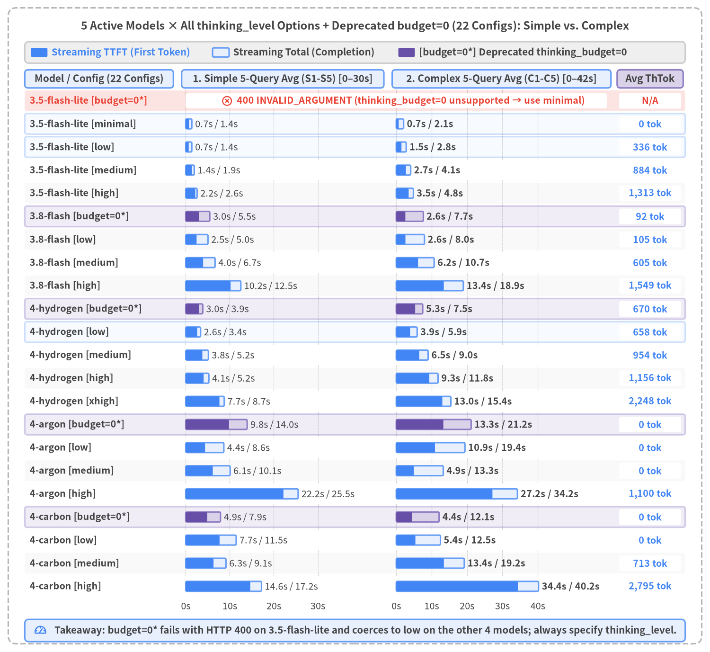

Gemini 3.8 Flash Latency & Architecture Evaluation Report
Empirical Analysis of Streaming Delivery, ThinkingConfig, Pydantic Adaptive Routing & 50-Turn Context Caching on Google AI Studio (google-genai SDK)
Author: Yuichi Ito | Date: 2026-11 | Target: Google AI Studio (google-genai SDK / gemini-3.8-flash)

Report Overview & Chapter Structure (Chapters 1–5)
This technical report presents a comprehensive empirical evaluation of gemini-3.8-flash (and the full Gemini 3.5 / 4 model lineup) on Google AI Studio (google-genai SDK via genai.Client(api_key=GEMINI_KEY)), synthesizing live API benchmark executions recorded in src/gemini_evaluation/ under a PC troubleshooting customer-support scenario. It establishes actionable architecture patterns that simultaneously achieve responsive Time to First Token (TTFT), deep multi-step mathematical accuracy, and flat latency scaling across 50-turn conversational histories.
| Chapter | Title | Scope & Key Empirical Findings |
|---|---|---|
| Chapter 1 | Executive Summary | End-to-end architecture decision matrix, cross-benchmark latency comparisons, and production configuration guidelines. |
| Chapter 2 | Background & Measurement Methodology | Anatomy of the 3 LLM latency phases (Prefill, Thinking, Decoding), 2D trajectory charts (Elapsed Time vs. Cumulative Characters), Pydantic response_schema Cold vs. Warm FSM grammar compilation, incremental delta extraction via pydantic_core.from_json(..., allow_partial="trailing-strings"), ExecutionTracer instrumentation, and empirical comparison of Gemini 3.5 / 3.8 / 4 models, ThinkingConfig options, and Context Caching rules. |
| Chapter 3 | Parameters & Latency | Empirical evaluation of Blocking (generate_content) vs. Streaming (generate_content_stream) across all 6 ThinkingConfig levels, the linear scaling law of thoughts_token_count, the speed-vs-accuracy trade-off across PC support query Tiers 1–3, and a 220-run cross-model latency comparison across all 5 active Gemini models × 17 thinking_level options + 5 deprecated thinking_budget=0 scenarios on 5 Simple + 5 Complex queries. |
| Chapter 4 | Adaptive Thinking Router | Candidate model and thinking_level taxonomy for Stage 1 (fast routing) and Stage 2 (deep reasoning: Categories A/B/C), followed by a 45-run empirical evaluation using gemini-3.8-flash (low → high). Demonstrates why Pattern A achieves 2,336 ms avg TTFT, 100% routing accuracy, and 100% Tier 3 calculation accuracy. |
| Chapter 5 | Multi-Turn Chat Behavior & Context Caching | Standardized exclusively on Streaming (generate_content_stream) across a 50-turn continuous PC troubleshooting dialogue (150 runs), comparing (1) 3.8-flash low & high against (2) Chapter 4's Adaptive Thinking Router (Pattern A: low → high) on both initial response (TTFT) and completion (Total), with Stage 1→2 Implicit Context Cache sharing (up to 90.2% hit rate). |
| Document Metadata | Value |
|---|---|
Title (title) |
Gemini 3.8 Flash Latency & Architecture Evaluation Report |
Subtitle (subtitle) |
Empirical Analysis of Streaming Delivery, ThinkingConfig, Pydantic Adaptive Routing & 50-Turn Context Caching |
Author (author) |
Yuichi Ito |
Date (date) |
2026-11 |
| Target SDK & Model | Google AI Studio google-genai SDK (genai.Client(api_key=GEMINI_KEY)) / gemini-3.8-flash & 5 active models |
| Evaluation Codebase | src/gemini_evaluation/llm_call.py, src/gemini_evaluation/adaptive_thinking.py, src/gemini_evaluation/tracer.py |
1. Executive Summary
This report presents an end-to-end empirical evaluation of gemini-3.8-flash (and the 5 active models across the Gemini 3.5 / 3.8 / 4 series) on Google AI Studio (google-genai SDK via genai.Client(api_key=GEMINI_KEY)), addressing how production conversational AI systems (specifically PC technical support and troubleshooting assistants) can simultaneously achieve three competing engineering goals: (1) low-latency initial response (TTFT), (2) 100% accuracy on multi-step mathematical and conditional reasoning tasks (PC repair-vs-replacement cost break-even, SSD backup transfer time, and multi-PC warranty fee calculations), and (3) flat latency scaling across 50-turn multi-turn dialogues. Synthesizing live API benchmark executions (18 single-turn ThinkingConfig trials, 220 cross-model thinking_level + thinking_budget=0 runs across all 5 active models, 45 adaptive routing low → high runs, and 150 50-turn multi-turn PC support Streaming chat executions), we establish Streaming delivery (generate_content_stream) combined with the Pydantic 2-field Adaptive Thinking Router (Pattern A: Stage 1 low {thinking: bool, response: str} + parallel Stage 2 high) and prefix-immutable multi-turn history as the recommended production architecture.

Source Code
from drawlib.canvas import save, setup
from drawlib.icons import phosphor
from drawlib.lines import line
from drawlib.shapes import rectangle
from drawlib.styles import Styles
from drawlib.text import text
setup(width=156, height=78, dpi=150)
# Outer structural frame
rectangle((78.0, 39.0), width=152.0, height=74.0, style=Styles.MutedDashed.patch(shape_r=2.0))
text(
(78.0, 72.8),
"End-to-End Architecture Decision Matrix: Fixed Configs (low / high) vs. Adaptive Router (Pattern A)",
style=Styles.DarkBold.patch(text_size=11.2),
)
cols = [
(
29.0,
"1. Fixed thinking=low",
"Streaming + thinking_level='low'",
"1-Turn & 50-Turn Speed: Fast",
"~2.3–2.5s TTFT with minimal wait",
"Complex Math (Tier 3): Shallow",
"~0–91 thinking tokens on complex math",
[
"• Verdict: Routine FAQ / Triage Only",
"• Lacks deep scratchpad verification",
],
Styles.Neutral,
Styles.DangerBold,
Styles.DarkBold,
phosphor.x_circle,
),
(
78.0,
"2. Fixed thinking=high",
"Always generates 1.2k–3.8k ThTok",
"Complex Math (Tier 3): 3/3 Pass",
"Deep reasoning ensures math accuracy",
"Initial Response (TTFT): Very Slow",
"Stalls 13.9s (1-turn) to 21.2s (50-turn)",
[
"• Verdict: Not for interactive UI",
"• Freezes ~17s on 80% routine turns",
],
Styles.SecondaryNeutral,
Styles.WarningBold,
Styles.DarkBold,
phosphor.clock,
),
(
127.0,
"★3. Adaptive Router (Pattern A)",
"{thinking: bool, response: str}",
"thinking=false (Routine): 1 Call low",
"Partial JSON stream without Stage 2",
"thinking=true (Math): Parallel high",
"Bridge (~2.3–2.8s) + Stage-2 high",
[
"• Verdict: ★Production Standard",
"• 9/9 (1-Turn) & 50/50 (50T) Match",
],
Styles.PrimaryFlat,
Styles.WhiteBold,
Styles.White,
phosphor.star,
),
]
for cx, title_s, sub_s, b1_t, b1_b, b2_t, b2_b, bullets, card_st, hdr_st, sub_st, ic_fn in cols:
rectangle((cx, 46.8), width=45.6, height=43.2, style=card_st.patch(shape_r=1.6))
ic_fn((cx - 19.2, 64.6), width=3.0, style=hdr_st)
text((cx - 16.4, 64.6), title_s, style=hdr_st.patch(text_size=10.3, halign="left"))
text((cx, 60.6), sub_s, style=sub_st.patch(text_size=10.0))
rectangle((cx, 53.0), width=42.0, height=8.4, style=Styles.WhiteFlat.patch(shape_r=1.0))
text((cx, 55.0), b1_t, style=Styles.DarkBold.patch(text_size=10.0))
text((cx, 51.0), b1_b, style=Styles.Dark.patch(text_size=10.0))
rectangle((cx, 42.6), width=42.0, height=8.4, style=Styles.WhiteFlat.patch(shape_r=1.0))
text((cx, 44.6), b2_t, style=Styles.DarkBold.patch(text_size=10.0))
text((cx, 40.6), b2_b, style=Styles.Dark.patch(text_size=10.0))
b_style = (
Styles.WhiteBold.patch(text_size=10.0, halign="left")
if card_st == Styles.PrimaryFlat
else Styles.Dark.patch(text_size=10.0, halign="left")
)
for idx, b_line in enumerate(bullets):
text((cx - 20.6, 34.4 - idx * 4.2), b_line, style=b_style)
# Bottom 50-Turn Scalability Banner
rectangle((78.0, 12.8), width=145.6, height=17.2, style=Styles.PrimaryNeutral.patch(shape_r=1.5))
text(
(78.0, 18.6),
"Recommended End-to-End Streaming Pipeline Across 50-Turn PC Support Dialogue",
style=Styles.DarkBold.patch(text_size=10.4),
)
steps = [
(23.5, 31.0, "1. Prefix-Immutable History", "append-only list[Content]", Styles.WhiteFlat),
(59.5, 33.0, "2. Stage 1→2 Cache Share", "Up to 90.2% hit (18,890 tok)", Styles.SecondaryNeutral),
(97.5, 35.0, "3. Pattern A (low → high)", "1-call on 40T; parallel on 10T", Styles.WhiteFlat),
(134.0, 30.0, "4. Fast TTFT & Deep Math", "2.62s TTFT (-87.6% vs high)", Styles.WhiteFlat),
]
for sx, sw, s_top, s_bot, s_st in steps:
rectangle((sx, 10.4), width=sw, height=9.2, style=s_st.patch(shape_r=1.0))
text((sx, 12.4), s_top, style=Styles.DarkBold.patch(text_size=9.8))
text((sx, 8.4), s_bot, style=Styles.Dark.patch(text_size=9.5))
line((39.0, 10.4), (43.0, 10.4), arrow_head="->", style=Styles.DarkBold)
line((76.0, 10.4), (80.0, 10.4), arrow_head="->", style=Styles.DarkBold)
line((115.0, 10.4), (119.0, 10.4), arrow_head="->", style=Styles.DarkBold)
save()
1.1 Cross-Benchmark Empirical Comparison
Figure 1-2 synthesizes the headline latency metrics—Initial Response (TTFT) and Stream Completion (Total)—across all three benchmark suites in this report: (1) Single-Turn Delivery Mode & ThinkingConfig, (2) Adaptive Thinking Router (low → high) across Tiers 1–3, and (3) 50-Turn Multi-Turn PC Support Streaming Dialogue.

Source Code
from drawlib.canvas import save, setup
from drawlib.charts.bar import BarChart
from drawlib.icons import phosphor
from drawlib.shapes import rectangle
from drawlib.styles import Styles
from drawlib.text import text
setup(width=158, height=88, dpi=150)
# Outer structural frame
rectangle((79.0, 44.0), width=154.0, height=84.0, style=Styles.MutedDashed.patch(shape_r=2.0))
text(
(79.0, 82.0),
"Cross-Benchmark Empirical Comparison: Initial Response (TTFT) vs. Completion Time (Total)",
style=Styles.DarkBold.patch(text_size=11.5),
)
categories = [
"[1-Turn] Stream low",
"[1-Turn] Block low",
"[1-Turn] Stream high",
"[Ch.4] ★Pattern A (low→high)",
"[Ch.4] Fixed low (base_low)",
"[Ch.4] Fixed high (base_high)",
"[50T] ★Adaptive (Pattern A)",
"[50T] (1) Fixed Stream low",
"[50T] (1) Fixed Stream high",
]
ttft_vals = [1806.0, 3539.0, 9912.0, 2336.0, 2473.0, 13868.0, 2618.0, 2310.0, 21173.0]
total_vals = [3633.0, 3539.0, 11488.0, 11231.0, 6419.0, 18430.0, 12034.0, 6589.0, 23827.0]
chart = BarChart(
axis_line_style=Styles.Dark,
axis_text_style=Styles.DarkBold.patch(text_size=9.8),
grid_style=Styles.MutedDashed,
value_text_style=Styles.DarkBold.patch(text_size=9.8),
value_format="{:,.0f}",
width=70.0,
height=56.0,
categories=categories,
orientation="horizontal",
bar_mode="group",
bar_width_ratio=0.78,
bar_r=0.35,
)
chart.configure_x_axis(
min_value=0,
max_value=26000,
tick_step=6500,
format="{:,.0f}",
)
chart.add_series(
name="Initial TTFT (ms)",
values=ttft_vals,
style=Styles.PrimaryFlat,
)
chart.add_series(
name="Completion Total (ms)",
values=total_vals,
style=Styles.SecondaryNeutral,
)
chart.draw(xy=(33.0, 16.5))
text((68.0, 11.2), "Elapsed Time (ms)", style=Styles.DarkBold.patch(text_size=10.0))
chart.draw_legend(
xy=(33.0, 75.5),
text_style=Styles.DarkBold.patch(text_size=10.0),
orientation="horizontal",
swatch_width=3.4,
swatch_height=1.9,
item_gap=8.0,
)
# Right-side Neutral Analytical Panel
rectangle((130.5, 45.0), width=43.0, height=58.0, style=Styles.PrimaryNeutral.patch(shape_r=1.5))
text((130.5, 70.6), "Key Empirical Highlights", style=Styles.DarkBold.patch(text_size=10.5))
cards = [
(
58.8,
"1. Single-Turn & 5-Model (Ch. 3)",
"• Stream low: TTFT 1,806 ms\n• 5 models × 22 configs (incl budget=0)\n• 3.5-lite rejects budget=0 (HTTP 400)",
Styles.WhiteFlat,
),
(
42.6,
"2. Adaptive Router (Ch. 4)",
"• ★Pattern A: Avg TTFT 2,336 ms\n• -83.2% faster TTFT vs high (13,868ms)\n• 9/9 routing & 3/3 Tier 3 math pass",
Styles.WhiteFlat,
),
(
26.4,
"3. 50-Turn Streaming (Ch. 5)",
"• ★Adaptive: 2,618 ms TTFT (-87.6%)\n• Median Total 4,990 ms (-79.1% vs high)\n• Stage 1→2 cache hits up to 90.2%",
Styles.SecondaryNeutral,
),
]
for cy, c_hdr, c_body, c_st in cards:
rectangle((130.5, cy), width=39.6, height=14.0, style=c_st.patch(shape_r=1.0))
text((130.5, cy + 4.4), c_hdr, style=Styles.DarkBold.patch(text_size=10.0))
text((112.2, cy - 1.5), c_body, style=Styles.Dark.patch(text_size=9.8, halign="left"))
# Bottom takeaway bar
rectangle((79.0, 5.8), width=148.0, height=6.4, style=Styles.SecondaryNeutral.patch(shape_r=1.2))
phosphor.lightning((8.5, 5.8), width=3.0, style=Styles.DarkBold)
text(
(11.8, 5.8),
"Takeaway: Streaming × Pattern A (Stage 1 low → parallel Stage 2 high) delivers ~2.3–2.6s TTFT and deep math accuracy.",
style=Styles.DarkBold.patch(text_size=9.8, halign="left"),
)
save()
Executive Summary Matrix Across All Benchmark Suites
| Benchmark Suite & Workload | Architecture / Configuration | Initial TTFT |
Completion Total |
Reasoning (ThTok) |
Accuracy & Scalability Profile | Verdict |
|---|---|---|---|---|---|---|
| Single-Turn (Ch. 3, PC boot diagnostic) |
Streaming thinking_level="low" |
1,806 ms |
3,633 ms |
135 tok |
-49% faster initial display vs. Blocking (1,304 ms on minimal) |
★Recommended (Simple) |
| Single-Turn | Blocking thinking_level="low" |
3,539 ms |
3,539 ms |
124 tok |
UI freezes for 3.54 s until full completion |
Batch Only |
| Single-Turn | Streaming thinking_level="high" |
9,912 ms |
11,488 ms |
946 tok |
Deep reasoning adds ~9.9s pre-token delay even on single turn |
Avoid Fixed High |
| 5-Model Cross-Matrix (Ch. 3, 22 configs × 10 queries) |
3.5-flash-lite / 3.8-flash / 4 Series( thinking_level + deprecated budget=0) |
706 ms–30,368 ms |
2,240 ms–34,637 ms |
0–2,369 tok |
3.5-flash-lite rejects budget=0 with 400 INVALID_ARGUMENT (use minimal); other 4 models coerce budget=0 to low |
Standardize on thinking_level |
| Adaptive Router (Ch. 4, 3.8-flash low→high) |
★Pattern A ({thinking, response}) |
2,336 ms(T3: 2,337 ms) |
11,231 ms(T1–2: 6,625 ms) |
T1–2: 95T3: 1,392 tok |
9/9 routing & 3/3 (100%) Tier 3 math accuracy; -83.2% faster TTFT vs. fixed high |
★Production Standard |
| Adaptive Router | Pattern C ([DIRECT] / [THINK] tag) |
2,063 ms |
10,167 ms |
T1–2: 66T3: 1,197 tok |
9/9 routing & 3/3 math, but lacks schema safety and risks tag leakage |
Reject (Unify on A) |
| Adaptive Router | Pattern B ({thinking} 1-field router) |
6,770 ms(T3: 13,865 ms) |
11,648 ms |
T1–2: 172T3: 1,355 tok |
Always incurs 2.0 sequential API calls, stalling Tier 3 TTFT to 13.9 s |
Reject |
| Adaptive Router | Fixed thinking_level="low" (base_low) |
2,473 ms |
6,419 ms |
Avg 91 tok |
Fast TTFT, but lacks deep multi-step verification on Tier 3 math | Shallow on Tier 3 |
| Adaptive Router | Fixed thinking_level="high" (base_high) |
13,868 ms(T3: 20,037 ms) |
18,430 ms |
Avg 1,201 tok |
Deep Tier 3 math, but freezes UI for 9.8–20.0 s on routine queries |
Not Recommended |
| 50-Turn Streaming (Ch. 5, 40 Routine + 10 Math) |
★(2) adaptive_pat_a (Pattern A) |
2,618 ms(Median 2,420 ms) |
12,034 ms(Median 4,990 ms) |
Avg 758 tok( -61.7% vs high) |
50/50 (100%) routing: Routine 40T finish in 5,008 ms; Math 10T run parallel high (up to 90.2% cache share) |
★Recommended (Multi-Turn) |
| 50-Turn Streaming | (1) streaming_low (low fixed) |
2,310 ms(Median 2,084 ms) |
6,589 ms(Median 6,583 ms) |
0 tok |
Fast across all 50 turns, but expends 0 thinking tokens on the 10 math turns |
Routine Only |
| 50-Turn Streaming | (1) streaming_high (high fixed) |
21,173 ms(Math 10T: 38,033 ms) |
23,827 ms(Median 23,887 ms) |
Avg 1,981 tok |
Wastes 1,534 tok (16,958 ms TTFT freeze) on the 40 routine turns |
Not Recommended |
1.2 Five Actionable Production Recommendations
Based on the empirical evidence across Chapters 2–5, engineering teams deploying gemini-3.8-flash (and the Gemini 3.5 / 4 series) via the Google AI Studio google-genai SDK should enforce the following five architectural practices:
- Standardize Interactive User Interfaces Exclusively on
generate_content_stream(Streaming): Streaminglowreduces single-turn TTFT by49%(1,806 msvs.3,539 ms) compared to Blocking, and across 50-turn multi-turn PC support dialogues keeps initial response around~2.3–2.6 secondswhile hiding the remaining decoding phase behind the user's reading time. - Replace Deprecated
thinking_budget=0with Explicitthinking_level(minimal/low/medium/high): As demonstrated in our 220-run cross-model benchmark (Section 3.5), legacythinking_budget=0fails with400 INVALID_ARGUMENTongemini-3.5-flash-liteand is coerced internally tolowon the remaining 4 models. Always usethinking_level="minimal"for zero-thinking (3.5-flash-lite/3.8-flash) andthinking_level="low"for fast routing. - Resolve the
lowvs.highDilemma with Chapter 4's Pattern A (low → highPydantic 2-Field Router): Fixedlowlacks deep scratchpad reasoning for multi-step calculations, whereas fixedhighstalls UI initial response for13.9s(single-turn) to21.2s(50-turn average). StreamingAdaptiveStreamResponse(thinking: bool, response: str)in Stage 1 (3.8-flash [low]) and launching Stage 2 (3.8-flash [high]) in parallel whenthinking=Trueachieves2,618 msaverage TTFT (-87.6%vs.high),4,990 msmedian completion (-79.1%), and50/50 (100%)routing accuracy across 50 turns. - Scale Stage 1 to
3.5-flash-litefor Sub-1.5s TTFT or Stage 2 toGemini 4for Enterprise Reasoning: As detailed in Section 4.1, teams seeking even faster initial response (~1.0–1.5sTTFT) can substitutegemini-3.5-flash-lite(minimal/low) in Stage 1, while complex enterprise workflows requiring deeper reasoning can route Stage 2 togemini-4-hydrogen [high]orgemini-4-carbon [medium / high]. - Keep Multi-Turn History Prefix-Immutable (
append-only) to Share Implicit Context Cache Between Stage 1 and Stage 2: By keepingsystem_instructionidentical between Stage 1 and Stage 2 and treatinghistory: list[types.Content]as strictly append-only, Google AI Studio automatically activates Implicit Context Caching (cached_content_token_count) from Turns 8–9 (~2,710 tokens), allowing Stage 2 (high) on complex turns to hit up to90.2%(18,890 cached tokensat Turn 50) of the conversation prefix warmed by Stage 1.
2. Background & Measurement Methodology
This chapter defines the foundational concepts and instrumentation methodology used throughout the empirical evaluations in Chapters 3–5. Sections 2.1 and 2.2 decompose LLM inference latency on gemini-3.8-flash into three sequential server-side phases (Prefill, Thinking, and Decoding), explain why 2D Trajectory Charts (Elapsed Time vs. Cumulative Output Characters) expose critical user-experience differences hidden by scalar averages, and present clean Blocking vs. Streaming invocation patterns using the Google AI Studio google-genai SDK. Sections 2.3 through 2.5 examine Pydantic Structured Outputs (response_schema), Cold vs. Warm finite-state machine (FSM) grammar compilation, incremental partial JSON delta extraction via pydantic_core.from_json(..., allow_partial="trailing-strings"), the microsecond-precision ExecutionTracer (src/gemini_evaluation/tracer.py), and a comprehensive cross-generational comparison of Gemini 3.5 / 3.8 / 4 models, ThinkingConfig options, and Context Caching rules.

Source Code
from drawlib.canvas import save, setup
from drawlib.icons import phosphor
from drawlib.lines import line
from drawlib.shapes import rectangle
from drawlib.styles import Styles
from drawlib.text import text
from drawlib.utils import draw_trajectory_panel, load_thinking_timeline
setup(width=156, height=82, dpi=150)
# Outer structural frame
rectangle((78.0, 41.0), width=152.0, height=78.0, style=Styles.MutedDashed.patch(shape_r=2.0))
text(
(78.0, 76.6),
"Anatomy of the 3 LLM Latency Phases (Prefill → Thinking → Decoding) & 2D Trajectories",
style=Styles.DarkBold.patch(text_size=11.5),
)
# Top Section: 3 Latency Phases
rectangle((78.0, 60.2), width=145.6, height=24.0, style=Styles.PrimaryNeutral.patch(shape_r=1.5))
text(
(78.0, 69.2),
"Server-Side Processing Timeline Within a Single API Request (t = 0 ms Request Start → Stream Completed)",
style=Styles.DarkBold.patch(text_size=10.3),
)
phases = [
(
26.5,
39.0,
"Phase 1: Prefill (Input)",
"KV Cache Lookup + Prompt Token Eval",
Styles.WhiteFlat,
Styles.DarkBold,
Styles.Dark,
),
(
76.0,
46.0,
"Phase 2: Thinking (Reasoning)",
"thoughts_token_count (+9.0 ms/tok)",
Styles.SecondaryNeutral,
Styles.DarkBold,
Styles.Dark,
),
(
127.0,
44.0,
"Phase 3: Decoding (Output)",
"1st Token = TTFT → Autoregressive Stream",
Styles.PrimaryFlat,
Styles.WhiteBold,
Styles.White,
),
]
for px, pw, p_title, p_sub, box_st, t_st, s_st in phases:
rectangle((px, 60.4), width=pw, height=11.0, style=box_st.patch(shape_r=1.2))
text((px, 62.6), p_title, style=t_st.patch(text_size=10.2))
text((px, 58.2), p_sub, style=s_st.patch(text_size=10.0))
line((46.0, 60.4), (53.0, 60.4), arrow_head="->", style=Styles.DarkBold)
line((99.0, 60.4), (105.0, 60.4), arrow_head="->", style=Styles.DarkBold)
text(
(78.0, 51.4),
"• Streaming TTFT = End of Phase 1 + Phase 2 | • Blocking TTFT = Total (End of Phase 1 + Phase 2 + Full Phase 3)",
style=Styles.DarkBold.patch(text_size=10.0),
)
# Bottom Section: Side-by-Side 2D Trajectory Comparison (thinking=0, high-contrast pastel bands)
ex_block = load_thinking_timeline("blocking", "0")
ex_stream = load_thinking_timeline("streaming", "0")
draw_trajectory_panel(
x0=15.0,
y0=12.6,
pw=54.0,
ph=23.5,
title="1. Blocking: generate_content (thinking=0)",
subtitle="Stalls at 0 chars until 3,360 ms → Returns all 338 chars at once",
ex=ex_block,
max_t=4000.0,
max_c=420.0,
x_ticks=(0, 1000, 2000, 3000, 4000),
y_ticks=(0, 200, 400),
lang="en",
)
draw_trajectory_panel(
x0=91.0,
y0=12.6,
pw=54.0,
ph=23.5,
title="★2. Streaming: generate_content_stream (thinking=0)",
subtitle="Starts at TTFT 1,205 ms → Smoothly streams 373 chars to 3,192 ms",
ex=ex_stream,
max_t=4000.0,
max_c=420.0,
x_ticks=(0, 1000, 2000, 3000, 4000),
y_ticks=(0, 200, 400),
lang="en",
)
text((42.0, 4.2), "Elapsed Time (ms) — Y-Axis: Cumulative Chars", style=Styles.DarkBold.patch(text_size=10.0))
text((118.0, 4.2), "Elapsed Time (ms) — Pastel Purple: TTFT Wait / Pastel Blue: Streaming", style=Styles.DarkBold.patch(text_size=10.0))
save()
2.1 Latency Definition & Trajectory Anatomy
To diagnose and optimize latency in conversational LLM applications, engineers must look beyond total request duration and decompose each API call into three sequential server-side execution phases:
1. The Three Phases of LLM Inference
- Phase 1: Prefill (Input Token Processing & KV Cache Lookup):
The server processes the input payload—comprising
system_instruction, multi-turn conversationhistory, and the latest userprompt(prompt_token_count)—in parallel across Transformer layers to populate the Attention Key-Value (KV) cache. On Google AI Studio (gemini-3.8-flash), when a conversation prefix matches an existing server-side cache entry (cached_content_token_count), prefill computation for those cached tokens is bypassed, keeping prefill latency flat even as multi-turn history grows beyond21,000 tokens(see Chapter 5). - Phase 2: Thinking (Internal Reasoning Token Generation:
thoughts_token_count): In reasoning-capable models such asgemini-3.8-flash, before emitting the very first visible response token (chunk.text), the model autoregressively generates internal Chain-of-Thought reasoning tokens (usage_metadata.thoughts_token_count). Crucially, no visible text chunks are emitted to the client while the Thinking phase is in progress, even when usinggenerate_content_stream. Every internal reasoning token adds approximately+9.0 msdirectly to the initial wait time (TTFT). - Phase 3: Decoding (Autoregressive Visible Output Streaming:
output_token_count): Once Prefill and Thinking conclude, the model autoregressively generates visible output tokens (candidates_token_count/output_token_count) until completion (finish_reason = STOP).
2. TTFT vs. Total Completion Time and Why 2D Trajectory Charts Matter
From these three phases, the two fundamental client-side latency metrics are defined as:
TTFT_streaming = T_Network_RTT + T_Prefill + T_Thinking
Total = TTFT_blocking = T_Network_RTT + T_Prefill + T_Thinking + T_Decoding
- TTFT (Time to First Token /
time_to_first_token_ms): Elapsed time from request initiation (t = 0 ms) until the first non-empty visible text chunk arrives at the client. TTFT directly governs perceived responsiveness in interactive UIs. In Blocking mode (generate_content), the response is withheld until decoding finishes, forcingTTFT = Total. - Total Completion Time (
stream_completed_ms): Elapsed time from request initiation (t = 0 ms) until the final chunk (EOF) is received. - Why 2D Trajectory Charts (
Elapsed Time [ms] vs. Cumulative Output Characters) Are Essential: Comparing scalar completion times in Figure 2-1 (thinking=0) might suggest that Blocking (3,360 ms) and Streaming (3,192 ms) are nearly identical. However, plotting Elapsed Time (x-axis) against Cumulative Visible Characters (y-axis) reveals a stark difference in user experience:- Blocking (Figure 2-1 Left): The UI remains frozen at
y = 0 charsfor the entire3,360 ms, after which all 338 characters appear as a single vertical step function. - Streaming (Figure 2-1 Right): Visible text begins rendering at
1,205 ms(2,155 msor64%earlier than Blocking) right after the pastel-purple prefill band, then climbs smoothly across the pastel-blue decoding band (1,205 → 3,192 ms) at~190 chars/s—far exceeding human reading speed (~10 chars/s). Thus, the entire decoding phase is hidden behind the user's reading time. Furthermore, in multi-stage architectures such as the Adaptive Thinking Router (Chapter 4), 2D trajectories expose the exact timing of the Stage-1 acknowledgment, the brief reading plateau during parallel Stage-2 reasoning, and the seamless continuation slope.
- Blocking (Figure 2-1 Left): The UI remains frozen at
2.2 Blocking vs. Streaming API Usage (google-genai on Google AI Studio)
All benchmarks in this report (src/gemini_evaluation/llm_call.py) use the official google-genai SDK against Google AI Studio (genai.Client(api_key=GEMINI_KEY)) and gemini-3.8-flash via asyncio (client.aio). Below is the reference implementation (resolve_thinking_config) for resolving all six ThinkingConfig options and invoking Blocking (generate_content) versus Streaming (generate_content_stream) (see Section 2.5 for a detailed analysis of thinking_level vs. thinking_budget across Gemini 3.5, 3.8, and 4).
from collections.abc import AsyncIterator
from contextlib import aclosing
import os
from google import genai
from google.genai import types
# 1. Initialize Google AI Studio Client using GEMINI_KEY from environment / .env
GEMINI_KEY = os.environ["GEMINI_KEY"]
MODEL = "gemini-3.8-flash"
client = genai.Client(api_key=GEMINI_KEY)
def resolve_thinking_config(thinking: str | int | None = 0) -> types.ThinkingConfig | None:
"""Map the 6 benchmark thinking options (0, minimal, low, medium, high, default) to ThinkingConfig.
Note: Because gemini-3.8-flash rejects ThinkingLevel.MINIMAL (HTTP 400) and produces 0 thoughts
at ThinkingLevel.LOW, benchmark labels 0 / minimal / low use legacy thinking_budget values to
sample intermediate reasoning token counts (see Section 2.5).
"""
if thinking is None or thinking == "default":
return None # Server default dynamic thinking (medium on gemini-3.8-flash)
if isinstance(thinking, int):
return types.ThinkingConfig(thinking_budget=thinking)
key = str(thinking).strip().lower()
if key == "0":
return types.ThinkingConfig(thinking_budget=0)
if key == "minimal":
return types.ThinkingConfig(thinking_budget=256)
if key == "low":
return types.ThinkingConfig(thinking_budget=4096)
level_map = {
"medium": types.ThinkingLevel.MEDIUM,
"high": types.ThinkingLevel.HIGH,
}
return types.ThinkingConfig(thinking_level=level_map[key])
# 2. Blocking Unary Call (waits for full completion: TTFT == Total)
async def generate_text_blocking(prompt: str, thinking: str | int | None = 0) -> str:
cfg = resolve_thinking_config(thinking)
resp = await client.aio.models.generate_content(
model=MODEL,
contents=prompt,
config=types.GenerateContentConfig(thinking_config=cfg) if cfg else None,
)
return resp.text or ""
# 3. Progressive Streaming Call (yields text chunks immediately after TTFT)
async def stream_text_progressive(prompt: str, thinking: str | int | None = 0) -> AsyncIterator[str]:
cfg = resolve_thinking_config(thinking)
stream = await client.aio.models.generate_content_stream(
model=MODEL,
contents=prompt,
config=types.GenerateContentConfig(thinking_config=cfg) if cfg else None,
)
async with aclosing(stream):
async for chunk in stream:
if chunk.text:
yield chunk.text
2.3 Pydantic Structured Output & Partial JSON Streaming Mechanics
When building an adaptive router that decides whether a query requires deep reasoning (thinking: bool) while simultaneously streaming the user-facing reply (response: str), passing response_mime_type="application/json" and response_schema=AdaptiveStreamResponse to GenerateContentConfig enables Constrained Decoding.
To achieve low streaming TTFT with structured JSON, engineers must understand two critical mechanics: (1) Cold vs. Warm server-side FSM grammar compilation and (2) incremental partial JSON parsing via pydantic_core.from_json. Figure 2-2 illustrates both the empirical Cold/Warm compilation benchmark (load_schema_experiment(), 8 runs) and the 4-step incremental delta extraction pipeline.

Source Code
from drawlib.canvas import save, setup
from drawlib.charts.bar import BarChart
from drawlib.icons import phosphor
from drawlib.lines import line
from drawlib.shapes import rectangle
from drawlib.styles import Styles
from drawlib.text import text
from drawlib.utils import load_schema_experiment
setup(width=158, height=92, dpi=150)
# Outer structural frame
rectangle((79.0, 46.0), width=154.0, height=88.0, style=Styles.MutedDashed.patch(shape_r=2.0))
text(
(79.0, 86.2),
"Pydantic Structured Streaming: Cold vs. Warm Schema Compilation & Partial JSON Pipeline",
style=Styles.DarkBold.patch(text_size=11.5),
)
# ─── Top Section: Cold vs. Warm Schema Compilation Experiment ────────────────
exp = load_schema_experiment()
by_key = {(str(r["schema_label"]), int(r["run_index"])): r for r in exp}
ordered_groups = [
("2F #1", [by_key[("minimal_2field", 1)]]),
("2F #2-4", [by_key[("minimal_2field", 2)], by_key[("minimal_2field", 3)], by_key[("minimal_2field", 4)]]),
("6F #1", [by_key[("rich_6field", 1)]]),
("6F #2-4", [by_key[("rich_6field", 2)], by_key[("rich_6field", 3)], by_key[("rich_6field", 4)]]),
]
cats = [lbl for lbl, _ in ordered_groups]
ttft_vals = [round(sum(float(r["ttft_ms"]) for r in rows) / len(rows), 0) for _, rows in ordered_groups]
tot_vals = [round(sum(float(r["total_ms"]) for r in rows) / len(rows), 0) for _, rows in ordered_groups]
rectangle((55.0, 61.5), width=98.0, height=41.0, style=Styles.Neutral.patch(shape_r=1.4))
rectangle((55.0, 61.2), width=95.6, height=38.8, style=Styles.WhiteFlat.patch(shape_r=1.0))
text((32.5, 77.2), "1. First Chunk Arrival: TTFT (ms)", style=Styles.PrimaryBold.patch(text_size=9.8))
chart_ttft = BarChart(
axis_line_style=Styles.Dark,
axis_text_style=Styles.DarkBold.patch(text_size=8.8),
grid_style=Styles.MutedDashed,
value_text_style=Styles.DarkBold.patch(text_size=8.8),
value_format="{:,.0f}",
width=40.0,
height=23.5,
categories=cats,
orientation="vertical",
bar_mode="group",
bar_width_ratio=0.56,
bar_r=0.3,
)
chart_ttft.configure_y_axis(min_value=0, max_value=4500, tick_step=1500, format="{:,.0f}")
chart_ttft.add_series(name="TTFT (ms)", values=ttft_vals, style=Styles.PrimaryFlat)
chart_ttft.draw(xy=(13.5, 48.2))
text((80.0, 77.2), "2. Stream Completion: Total (ms)", style=Styles.DarkBold.patch(text_size=9.8))
chart_tot = BarChart(
axis_line_style=Styles.Dark,
axis_text_style=Styles.DarkBold.patch(text_size=8.8),
grid_style=Styles.MutedDashed,
value_text_style=Styles.DarkBold.patch(text_size=8.8),
value_format="{:,.0f}",
width=40.0,
height=23.5,
categories=cats,
orientation="vertical",
bar_mode="group",
bar_width_ratio=0.56,
bar_r=0.3,
)
chart_tot.configure_y_axis(min_value=0, max_value=7500, tick_step=2500, format="{:,.0f}")
chart_tot.add_series(name="Total (ms)", values=tot_vals, style=Styles.SecondaryNeutral)
chart_tot.draw(xy=(61.0, 48.2))
# Right-side summary cards for Top Section
rectangle((129.5, 61.5), width=45.0, height=41.0, style=Styles.PrimaryNeutral.patch(shape_r=1.4))
text((129.5, 78.2), "Schema Experiment Insights", style=Styles.DarkBold.patch(text_size=10.4))
s_cards = [
(
69.4,
"1. Cold #1 FSM Compilation",
"6F #1 incurs FSM grammar build:\nTTFT 3,337 ms (flag at 2,954 ms)",
Styles.WhiteFlat,
),
(
57.5,
"2. -15.0% Faster Once Warm",
"6F Warm (#2–#4) avg TTFT 2,837 ms\nFlag decided at avg 2,419 ms",
Styles.WhiteFlat,
),
(
45.6,
"3. 2F vs 6F Differs by +93ms",
"2F Warm 2,744 ms vs 6F 2,837 ms\nField order governs streaming TTFT",
Styles.SecondaryNeutral,
),
]
for cy, ch, cb, cst in s_cards:
rectangle((129.5, cy), width=41.6, height=10.0, style=cst.patch(shape_r=0.9))
text((129.5, cy + 2.4), ch, style=Styles.DarkBold.patch(text_size=9.8))
text((129.5, cy - 1.8), cb, style=Styles.Dark.patch(text_size=9.5))
# ─── Bottom Section: pydantic_core.from_json Incremental Pipeline ────────────
rectangle((79.0, 20.8), width=146.0, height=34.0, style=Styles.PrimaryNeutral.patch(shape_r=1.5))
text(
(79.0, 34.6),
'Incremental Delta Extraction Pipeline via Rust pydantic_core.from_json(raw_bytes, allow_partial="trailing-strings")',
style=Styles.DarkBold.patch(text_size=10.4),
)
p_steps = [
(
23.5,
32.0,
"Step 1: Hold Incomplete Bool",
'Input: \'{"thinking": fa\'\n→ Returns: {} (Zero false branch)\nNon-string tokens held safely',
Styles.WhiteFlat,
Styles.DarkBold,
),
(
60.0,
33.0,
"Step 2: Lock Bool & Branch",
'Input: \'{"thinking": false,\'\n→ {\'thinking\': False} (~2.5s)\nIf True: spawn Stage-2 task',
Styles.SecondaryNeutral,
Styles.DarkBold,
),
(
97.5,
34.0,
"★Step 3: Slice String Delta",
'Input: \'..."response": "Line 1\\\'\n→ Holds trailing \\, yields \'Line 1\'\ndelta = msg[emitted_len:]',
Styles.PrimaryFlat,
Styles.WhiteBold,
),
(
134.5,
31.0,
"Step 4: EOF Full Validation",
"At stream completion:\nmodel_validate_json(buf)\nverifies full Pydantic schema",
Styles.WhiteFlat,
Styles.DarkBold,
),
]
for px, pw, p_hdr, p_body, p_st, hdr_st in p_steps:
rectangle((px, 18.8), width=pw, height=22.4, style=p_st.patch(shape_r=1.2))
text((px, 26.8), p_hdr, style=hdr_st.patch(text_size=10.0))
body_st = Styles.White.patch(text_size=10.0) if p_st == Styles.PrimaryFlat else Styles.Dark.patch(text_size=10.0)
text((px, 15.8), p_body, style=body_st)
line((39.5, 18.8), (43.0, 18.8), arrow_head="->", style=Styles.DarkBold)
line((77.0, 18.8), (80.5, 18.8), arrow_head="->", style=Styles.DarkBold)
line((115.5, 18.8), (119.0, 18.8), arrow_head="->", style=Styles.DarkBold)
save()
1. Server-Side Constrained Decoding & Cold vs. Warm Schema Compilation
When response_mime_type="application/json" and response_schema=AdaptiveStreamResponse are supplied, Google AI Studio compiles the Pydantic BaseModel's JSON Schema into a finite-state machine (FSM) token mask that constrains token sampling at every decoding step, guaranteeing 100% syntactic validity.
The table below and the top panel of Figure 2-2 present the 8-run schema compilation experiment (src/gemini_evaluation/adaptive_thinking_log.json), comparing the minimal 2-field AdaptiveStreamResponse(thinking: bool, response: str) (minimal_2field) against a 6-field RichStreamResponse (rich_6field, which adds two Literal enums, an escalation boolean, and a list[str] of follow-up questions) across four consecutive runs (#1–#4). Across all 8 runs, the leading thinking field is resolved at or before the first visible response text chunk (flag_decided_ms <= ttft_ms < total_ms).
Schema Variant (schema_label) |
Run | Cache State | Flag Decided (flag_decided_ms) |
First Token (ttft_ms) |
Total Time (total_ms) |
Output Chars |
|---|---|---|---|---|---|---|
minimal_2field (AdaptiveStreamResponse) |
#1 | Warm (Post-Main) | 2,562.2 ms |
2,562.2 ms |
5,319.0 ms |
496 chars |
minimal_2field (AdaptiveStreamResponse) |
#2 | Warm | 2,294.1 ms |
2,294.1 ms |
4,551.2 ms |
455 chars |
minimal_2field (AdaptiveStreamResponse) |
#3 | Warm | 2,194.2 ms |
2,492.2 ms |
4,950.2 ms |
579 chars |
minimal_2field (AdaptiveStreamResponse) |
#4 | Warm | 3,446.8 ms |
3,446.8 ms |
6,855.2 ms |
686 chars |
rich_6field (RichStreamResponse) |
#1 | Cold (1st New) | 2,954.3 ms |
3,337.3 ms |
6,517.4 ms |
507 chars |
rich_6field (RichStreamResponse) |
#2 | Warm | 2,157.1 ms |
2,504.4 ms |
4,526.9 ms |
360 chars |
rich_6field (RichStreamResponse) |
#3 | Warm | 2,780.6 ms |
3,259.3 ms |
5,838.9 ms |
422 chars |
rich_6field (RichStreamResponse) |
#4 | Warm | 2,320.5 ms |
2,747.5 ms |
6,504.9 ms |
679 chars |
- Cold
#1vs. Warm#2–#4(-15.0%TTFT Reduction): Becauseminimal_2field(AdaptiveStreamResponse) was already compiled during the preceding 45-run benchmark,#1started warm at2,562.2 ms(#2–#4warm average2,744.4 ms, 4-run average2,698.8 ms). In contrast, when the newly introduced 6-field schema (rich_6field) was sent for the very first time inrich_6field #1(Cold), FSM grammar compilation resulted inTTFT = 3,337.3 ms(flag_decided_ms = 2,954.3 ms). On subsequent warm runs (#2–#4), the cached grammar dropped average TTFT to2,837.1 ms(2,504.4–3,259.3 ms,-500.2 msor-15.0%faster) and resolvedthinkingat an average of2,419.4 ms. - Why Field Declaration Order—Not Field Count—Governs Streaming TTFT:
Once warm (
#2–#4), expanding from 2 fields (2,744.4 ms) to 6 fields (2,837.1 ms) adds only+92.7 ms(+3.4%) to TTFT. Because JSON tokens are generated strictly in schema declaration order, placingthinking: boolfirst, keeping only short scalar/enum fields beforeresponse: str, and placing variable-length arrays (suggested_followups: list[str]) afterresponse: strensures that visible text streaming begins immediately without waiting for auxiliary metadata lists.
2. Incremental Delta Extraction via pydantic_core.from_json(..., allow_partial="trailing-strings")
During generate_content_stream, intermediate chunks contain unclosed JSON fragments (such as '{"thinking": false, "response": "Thank you for'), causing the SDK's built-in chunk.parsed property to remain None until the stream finishes.
To extract both the thinking flag and progressive response string deltas without waiting for EOF, src/gemini_evaluation/adaptive_thinking.py uses Pydantic v2's Rust parser pydantic_core.from_json(raw_bytes, allow_partial="trailing-strings"):
- Safe Holding of Incomplete Primitives: When the buffer ends mid-token (
'{"thinking": fa'),allow_partial="trailing-strings"withholds the incomplete key-value pair and returns{}. The momentfalseortruecompletes,{'thinking': False}is locked in as a native Pythonbool. - Escape-Safe
O(1)String Slicing: If a chunk boundary splits a JSON escape sequence at the end of"response"(e.g.,'..."1st line\\'),from_jsonholds the trailing backslash until the next chunk arrives (n→\n). Trackingemitted_resp_lenand slicingdelta = resp_so_far[emitted_resp_len:]yields clean, decoded text deltas on every chunk.
from typing import Any
from pydantic import BaseModel
from pydantic_core import from_json
class AdaptiveStreamResponse(BaseModel):
thinking: bool # Field 1: Routing boolean resolved prior to first visible chunk
response: str # Field 2: Incrementally streamed full answer or 1-sentence ack
def parse_partial_json_dict(raw_buf: str) -> dict[str, Any] | None:
"""Safely parse incomplete streaming JSON bytes into a dict via Rust pydantic_core."""
if not raw_buf:
return None
try:
parsed = from_json(raw_buf.encode("utf-8"), allow_partial="trailing-strings")
return parsed if isinstance(parsed, dict) else None
except ValueError:
return None
2.4 Measurement Architecture (ExecutionTracer)
Every benchmark in this report (src/gemini_evaluation/benchmark_thinking.py, benchmark_adaptive_thinking.py, and benchmark_multiturn_chat.py) is instrumented by ExecutionTracer (src/gemini_evaluation/tracer.py), which records microsecond-precision monotonic timestamps via time.perf_counter() alongside token usage metadata.
Milestones and Token Metrics Recorded by ExecutionTracer
| Instrumentation Category | Field / Event (ExecutionTracer) |
Definition & Measurement Point |
|---|---|---|
| Request Origin | start (t_ms = 0.0, chars = 0) |
Monotonic time.perf_counter() origin recorded in tracer.start_gemini() immediately before invoking the Gemini API. |
| Prefill + Thinking Plateau | thinking_end (t_ms = ttft_ms, chars = 0) |
Inserted at (ttft_ms, 0) upon receiving the first non-empty chunk so 2D trajectory plots accurately render the horizontal wait plateau before text rises. |
| Streaming Chunk Series | chunk_1 .. chunk_N (t_ms, chars) |
Recorded by tracer.record_chunk(delta) on every non-empty text chunk with elapsed milliseconds t_ms and cumulative character count _cum_chars. |
| Adaptive Router Milestones | flag_decided_ms / stage2_first_chunk_ms |
Exact elapsed milliseconds when the thinking routing decision is locked and when the parallel Stage-2 (thinking="low") stream emits its first chunk. |
| Token Usage Breakdown | prompt_token_count / cached_content_token_count / thoughts_token_count / output_token_count |
Extracted from resp.usage_metadata to quantify input size, Implicit Context Cache hits, internal reasoning tokens, and visible output tokens. |
All execution traces are serialized to human-readable YAML (*_log.yaml) and machine-readable JSON/JSONL (*_log.json, *_runs.jsonl, *_turns.jsonl), which are loaded directly by examples/doc/gemini_latency/utils.py to render every chart in this report.
2.5 Gemini 3.5 / 3.8 / 4 Model Lineup & Empirical API Option Verification
While Chapters 3–5 use gemini-3.8-flash as the primary benchmark baseline, Google AI Studio (Gemini API) has evolved significantly from the Gemini 3.5 / 3.8 series to the Gemini 4 series (Hydrogen / Argon / Carbon) in how ThinkingConfig (thinking_level vs. thinking_budget), Context Caching (Explicit vs. Implicit caching and the 2,050-token multi-turn uncached tail window), and sampling parameters behave.
This section synthesizes official documentation specifications and live API verification (client.models.get() and generate_content()) into three comprehensive reference tables (Tables 2-5A through 2-5C).
1. Active Model Lineup, Positioning, and Selection Criteria (Table 2-5A)
As of November 2026, legacy models gemini-2.5-flash (auto-routed to gemini-3.5-flash-lite), gemini-2.5-pro (auto-routed to gemini-3.8-flash), and gemini-3.5-flash (auto-routed to gemini-3.6-flash) are deprecated. Because the Gemini 4 generation does not yet include a "Lite" tier model, text and multimodal generation across all latency and reasoning tiers is covered by the five active models (3.5-flash-lite, 3.8-flash, 4-hydrogen, 4-argon, 4-carbon) summarized below.
Model ID (model) |
Status & Generation | Pricing (Input / Output per 1M tok) | Context Window / Single-Hop Output Cap | Default thinking_level |
Positioning & Practical Selection Guidelines |
|---|---|---|---|---|---|
gemini-3.5-flash |
Deprecated (Auto-routed to 3.6-flash) |
$1.50 / $7.50 (3.6-flash pricing) |
Input 1,048,576Output 65,536 (separate) |
medium |
[Deprecated 3.5 Flash] • API requests automatically route to gemini-3.6-flash.• Migrate new workloads to gemini-4-hydrogen or gemini-3.8-flash. |
gemini-3.5-flash-lite |
Active Stable (Latest 3.x Lite) |
$0.30 / $2.50 | Input 1,048,576Output 65,536 (separate) |
minimal(0 thoughts) |
[Fastest, Lowest-Cost Lite Workhorse] • Official recommended Lite model for new projects and the auto-migration target for gemini-2.5-flash (no Gemini 4 Lite exists yet).• Defaults to minimal (0 reasoning tokens) for ultra-fast routing, extraction, and classification; supports medium / high for autonomous subagent planning. |
gemini-3.8-flash |
Active Stable (Report Baseline) |
$1.50 / $7.50 | Input 1,048,576Output 65,536 (separate) |
medium |
[Final 3.x Flagship Flash] • Official migration target for gemini-2.5-pro. While gemini-4-hydrogen is recommended at the same price point, gemini-3.8-flash remains preferred when (1) zero-thought (0 tok) low-latency execution via thinking_level="low" is required, or (2) Explicit Context Caching (caches.create) is needed. |
gemini-4-hydrogen |
Active Stable (Recommended Flash Upgrade) |
$1.50 / $7.50 (Free & Paid Tiers) |
Unified 1M (1,048,576)Single-hop 65,536(Long Decode up to 1M) |
high |
[Gemini 4 Mainstream Workhorse] • Same price as 3.8-flash with stronger coding and agentic reasoning.• Always-thinking architecture (thinking cannot be disabled), adding an exclusive xhigh level and Long Decode (automatic_continuation=True up to 1M tokens). |
gemini-4-argon |
Active Stable (Paid Tier Only) |
$2.00 / $10.00 ($4 / $20 after Nov 30, 2026) |
Unified 1M (1,048,576)REST 32,768 / Stream 65,536(Long Decode up to 1M) |
medium |
[Efficient Frontier Reasoning (Pro Tier)] • Built for complex software architecture, math, and multi-step agentic tasks beyond hydrogen.• Approaches carbon quality while spending fewer reasoning tokens and lower latency per turn. |
gemini-4-carbon |
Active Stable (Paid Tier Only) |
$2.00 / $10.00 ($4 / $20 after Nov 30, 2026) |
Unified 1M (1,048,576)REST 32,768 / Stream 65,536(Long Decode up to 1M) |
medium |
[Highest-Reasoning Frontier Model] • Spends the most reasoning tokens per turn; designed for the hardest software engineering, scientific reasoning, and cybersecurity tasks where accuracy outweighs latency. |
2. Model-by-Model ThinkingConfig (thinking_level vs. thinking_budget) Empirical Matrix (Table 2-5B)
In the Gemini API, numeric thinking_budget was introduced for the Gemini 2.5 series, whereas string enum thinking_level is the standard parameter for Gemini 3 and Gemini 4. Crucially, thinking_budget is deprecated starting in Gemini 3: to disable or minimize internal reasoning on Gemini 3+ models, developers should specify the model's lowest supported thinking_level ("minimal" or "low") rather than thinking_budget=0 (passing both thinking_level and thinking_budget simultaneously returns HTTP 400 on all models).
Table 2-5B compares all five thinking_level values (minimal, low, medium, high, xhigh) and legacy thinking_budget values (0, 256, 4096) across live API executions on a simple 1-word factual query versus a complex 5-person seating constraint puzzle (usage_metadata.thoughts_token_count).
ThinkingConfig Parameter |
gemini-3.5-flash(Auto-routed to 3.6-flash) |
gemini-3.5-flash-lite(Active Lite) |
gemini-3.8-flash(Report Baseline) |
gemini-4-hydrogen(4 Mainstream) |
gemini-4-argon /gemini-4-carbon |
|---|---|---|---|---|---|
Supported thinking_levels |
minimal, low, medium, high (4 levels) |
minimal, low, medium, high (4 levels) |
low, medium, high (3 levels) |
low, medium, high, xhigh (4 levels) |
low, medium, high (3 levels) |
Unspecified (None / Default) |
Default = mediumSimple: 69 tokComplex: 2,711 tok |
Default = minimalSimple: 0 tok (None)Complex: 0 tok (None) |
Default = mediumSimple: 0 tok (None)Complex: 1,303 tok |
Default = highSimple: 68 tokComplex: 1,286 tok |
Default = mediumDynamic reasoning |
thinking_level="minimal" |
✅ Supported (No-Thinking) Simple: 0 tokComplex: 0 tok |
✅ Supported (Default) Simple: 0 tokComplex: 0 tok |
❌ 400 INVALID_ARGUMENT(MINIMAL is not supported) |
❌ 400 INVALID_ARGUMENT(MINIMAL is not supported) |
❌ 400 INVALID_ARGUMENT(MINIMAL is not supported) |
thinking_level="low" |
✅ Supported (Moderate) Simple: 70 tokComplex: 2,051 tok |
✅ Supported (Minimal) Simple: 41 tokComplex: 0 tok |
✅ Supported (Acts as 0 tok) Simple: 0 tokComplex: 0 tok |
✅ Supported (Always thinks) Simple: 35 tokComplex: 1,324 tok |
✅ Supported (Lowest) Simple: 0 tokComplex: Light reasoning |
thinking_level="medium" |
✅ Supported (Default) Simple: 73 tokComplex: 2,613 tok |
✅ Supported (Deep Thinking) Simple: 53 tokComplex: 4,175 tok |
✅ Supported (Default) Simple: 0 tokComplex: 1,403 tok |
✅ Supported Simple: 36 tokComplex: 1,528 tok |
✅ Supported (Default) |
thinking_level="high" |
✅ Supported Simple: 70 tokComplex: 3,921 tok |
✅ Supported Simple: 58 tokComplex: 4,224 tok |
✅ Supported Simple: 61 tokComplex: 1,636 tok |
✅ Supported (Default) Simple: 67 tokComplex: 1,217 tok |
✅ Supported |
thinking_level="xhigh" |
❌ 400 INVALID_ARGUMENT(XHIGH is not supported) |
❌ 400 INVALID_ARGUMENT(XHIGH is not supported) |
❌ 400 INVALID_ARGUMENT(XHIGH is not supported) |
✅ Supported (Hydrogen Only) Simple: 84 tokComplex: 3,376 tok |
❌ 400 INVALID_ARGUMENT(XHIGH is not supported) |
thinking_budget=0(Deprecated Legacy Param) |
⚠️ Legacy compatible Simple: 0 tok / Complex: 0 tok |
❌ 400 INVALID_ARGUMENT(Rejected on 3.5-flash-lite) |
⚠️ Legacy compatible Simple: 0 tok / Complex: 0 tok(Used for benchmark "0") |
⚠️ Maps to low (Warning)Simple: 32 tok / Complex: 1,398 tok(Does not disable thinking) |
⚠️ Maps to nearest thinking_level (cannot disable thinking) |
thinking_budget=256(Deprecated Legacy Param) |
⚠️ Exceeds 256 cap Simple: 63 tok / Complex: 1,486 tok |
⚠️ Exceeds 256 cap Simple: 50 tok / Complex: 2,009 tok |
⚠️ Legacy compatible Simple: 0 tok / Complex: 0 tok(Used for benchmark "minimal") |
⚠️ Maps to thinking_levelSimple: 69 tok / Complex: 1,346 tok |
⚠️ Maps to nearest thinking_level |
thinking_budget=4096(Deprecated Legacy Param) |
⚠️ Maps near medium/highSimple: 68 tok / Complex: 3,355 tok |
⚠️ Maps near mediumSimple: 62 tok / Complex: 3,449 tok |
⚠️ Intermediate thoughts Simple: 0 tok / Complex: 351–673 tok(Used for benchmark "low") |
⚠️ Maps to thinking_levelComplex: 1,471 tok |
⚠️ Maps to nearest thinking_level |
3. Context Caching & API Parameter Evolution Across Generations (Table 2-5C)
| Feature / Parameter | gemini-3.5-flash / gemini-3.5-flash-lite |
gemini-3.8-flash(Report Baseline) |
gemini-4-hydrogen / argon / carbon |
|---|---|---|---|
| Implicit Context Caching (Zero-Config Auto-Caching) |
✅ Enabled by default • Documented minimum: 4,096 tok• Bypasses prefill computation and discounts cached prefix tokens |
✅ Enabled by default • Documented minimum: 4,096 tok• Empirically activates at Turn 8 ( 2,686 prompt_tokens, 703 cached_tokens) right after crossing 2,048 tok (Chapter 5) |
✅ Enabled by default (95% discount) • Documented minimum: 4,096 tok• Explicitly documents the 2,050-token uncached tail rule in multi-turn loops |
| Multi-Turn Uncached Tail Window Rule (Why caching starts above ~2,050 tok and leaves ~2,000 uncached tail tokens) |
Automatically caches matching prefixes while re-processing the trailing window at standard input rates. | In Chapter 5's 50-turn benchmark, cache hits begin at Turn 8 (2,686 tok) and maintain a constant Prompt - Cached ≈ 2,000 tokens uncached tail across Turns 8–50. |
Gemini 4 documentation formally states: "Gemini caches the full previous request only if the new request adds at least 2,050 tokens... For smaller additions, Gemini re-processes the last 2,050 tokens of the previous request at the standard input rate." |
| Explicit Context Caching ( client.caches.create / createCachedContent) |
✅ Supported (v1beta) |
✅ Supported (v1beta)• Included in supported_actions |
❌ Removed (Unsupported / Returns Error) • Standardized exclusively on Implicit Caching |
| Sampling Parameters ( temperature, top_p, top_k, candidate_count) |
⚠️ Deprecated & Ignored • candidate_count unsupported |
⚠️ Deprecated & Ignored • Fixed to optimal reasoning defaults |
⚠️ Deprecated & Ignored • Ignored if in-range; out-of-range values return HTTP 400 |
| Prefilled Model Turn Validation ( contents ending with role="model") |
❌ Disallowed (400 Error)(Enforced from 3.6-flash / 3.5-flash-lite) |
❌ Disallowed (400 Error)• Use system_instruction or response_schema instead |
❌ Disallowed (400 Error) |
3. Parameters & Latency
Chapter 2 examined the baseline delivery mechanics of blocking (generate_content) and streaming (generate_content_stream) calls against gemini-3.8-flash. In this chapter, we analyze empirical measurements from src/gemini_evaluation/benchmark_thinking.py and src/gemini_evaluation/benchmark_adaptive_thinking.py to quantify the single largest determinant of Gemini 3.8 Flash latency: ThinkingConfig (internal reasoning token control). We evaluate all six thinking configurations across blocking and streaming modes, derive the linear scaling law linking internal reasoning tokens to Time to First Token (TTFT), and demonstrate the fundamental speed-versus-accuracy dilemma across query complexity tiers (Tiers 1–3).

Source Code
from drawlib.canvas import save, setup
from drawlib.icons import phosphor
from drawlib.lines import line
from drawlib.shapes import rectangle
from drawlib.styles import Styles
from drawlib.text import text
from drawlib.utils import load_thinking_benchmark_all
setup(width=168, height=86, dpi=150)
# Outer structural frame
rectangle((84.0, 43.0), width=164.0, height=82.0, style=Styles.MutedDashed.patch(shape_r=2.0))
text(
(84.0, 79.8),
"Blocking vs. Streaming × All 6 ThinkingConfig Levels: TTFT & Total Latency",
style=Styles.DarkBold.patch(text_size=12.0),
)
# Legend bar at top (Neutral container)
rectangle((84.0, 73.2), width=156.0, height=5.6, style=Styles.Neutral.patch(shape_r=1.0))
rectangle((12.0, 73.2), width=4.0, height=2.2, style=Styles.SecondaryNeutral.patch(shape_r=0.4))
text((15.0, 73.2), "Blocking Total (= TTFT)", style=Styles.DarkBold.patch(text_size=10.0, halign="left"))
rectangle((64.0, 73.2), width=4.0, height=2.2, style=Styles.PrimaryFlat.patch(shape_r=0.4))
text((67.0, 73.2), "Streaming TTFT (First Token)", style=Styles.PrimaryBold.patch(text_size=10.0, halign="left"))
rectangle((120.0, 73.2), width=4.0, height=2.2, style=Styles.PrimaryNeutral.patch(shape_r=0.4))
text((123.0, 73.2), "Streaming Total (Completion)", style=Styles.DarkBold.patch(text_size=10.0, halign="left"))
rows = load_thinking_benchmark_all()
by_key = {(r["mode"], r["thinking"]): r for r in rows if r["trial"] == 1}
# Coordinate mapping for horizontal bars: X0 = 28.0, width = 50.0 for 0..14000 ms
X0 = 28.0
MAX_MS = 14000.0
SCALE = 50.0 / MAX_MS
for ms in range(0, 14001, 3500):
tx = X0 + ms * SCALE
line((tx, 14.5), (tx, 67.5), style=Styles.MutedDashed.patch(line_width=0.7))
lbl = f"{ms / 1000:.1f}s" if ms % 1000 != 0 else (f"{ms // 1000}s" if ms > 0 else "0s")
text((tx, 12.0), lbl, style=Styles.Dark.patch(text_size=10.0))
# Right-side Token & Output Table Header
rectangle((136.5, 66.8), width=49.0, height=4.4, style=Styles.PrimaryNeutral.patch(shape_r=0.8))
text((120.5, 66.8), "Block ThTok", style=Styles.DarkBold.patch(text_size=10.0))
text((137.5, 66.8), "Stream ThTok", style=Styles.PrimaryBold.patch(text_size=10.0))
text((153.0, 66.8), "OutTok", style=Styles.DarkBold.patch(text_size=10.0))
thinking_specs = [
("0", "0 (budget=0)", "Reasoning Off", 60.5),
("minimal", "minimal", "Minimal Level", 51.8),
("low", "low", "Light Reasoning", 43.1),
("medium", "medium", "Moderate Level", 34.4),
("high", "high", "Deep Reasoning", 25.7),
("default", "default", "Dynamic Default", 17.0),
]
for t_key, label_main, label_sub, ry in thinking_specs:
rb = by_key[("blocking", t_key)]
rs = by_key[("streaming", t_key)]
if t_key in {"0", "minimal"}:
rectangle((84.0, ry), width=156.0, height=7.6, style=Styles.SecondaryNeutral.patch(shape_r=1.0, alpha=0.3))
else:
rectangle((84.0, ry), width=156.0, height=7.6, style=Styles.LightFlat.patch(shape_r=1.0, alpha=0.45))
text((6.8, ry + 1.3), label_main, style=Styles.DarkBold.patch(text_size=10.5, halign="left"))
text((6.8, ry - 1.5), label_sub, style=Styles.Muted.patch(text_size=10.0, halign="left"))
# Top bar in group: Blocking (TTFT == Total)
wb = rb["total_ms"] * SCALE
rectangle((X0 + wb / 2, ry + 1.6), width=wb, height=2.2, style=Styles.SecondaryNeutral.patch(shape_r=0.4))
text(
(X0 + wb + 1.0, ry + 1.6),
f"{rb['total_ms']:,.0f} ms",
style=Styles.DarkBold.patch(text_size=10.0, halign="left"),
)
# Bottom bar in group: Streaming (TTFT solid + Total lighter)
ws_tot = rs["total_ms"] * SCALE
ws_ttft = rs["ttft_ms"] * SCALE
rectangle((X0 + ws_tot / 2, ry - 1.5), width=ws_tot, height=2.2, style=Styles.PrimaryNeutral.patch(shape_r=0.4))
rectangle((X0 + ws_ttft / 2, ry - 1.5), width=ws_ttft, height=2.2, style=Styles.PrimaryFlat.patch(shape_r=0.4))
text(
(X0 + ws_tot + 1.0, ry - 1.5),
f"TTFT {rs['ttft_ms']:,.0f} / {rs['total_ms']:,.0f} ms",
style=Styles.PrimaryBold.patch(text_size=10.0, halign="left"),
)
# Right table cells
rectangle((136.5, ry), width=49.0, height=6.4, style=Styles.WhiteFlat.patch(shape_r=0.8))
text((120.5, ry), f"{rb['thoughts_tokens']} tok", style=Styles.Dark.patch(text_size=10.0))
text((137.5, ry), f"{rs['thoughts_tokens']} tok", style=Styles.PrimaryBold.patch(text_size=10.0))
text((153.0, ry), f"{rs['output_tokens']} tok", style=Styles.Dark.patch(text_size=10.0))
# Bottom callout banner
rectangle((84.0, 5.8), width=156.0, height=6.4, style=Styles.PrimaryNeutral.patch(shape_r=1.2))
phosphor.lightning((9.2, 5.8), width=3.2, style=Styles.PrimaryBold)
text(
(12.6, 5.8),
"Takeaway: Setting thinking=0 or minimal eliminates reasoning tokens (0 tok), cutting Streaming TTFT to 1,205 ms (-88% vs. default).",
style=Styles.DarkBold.patch(text_size=10.0, halign="left"),
)
save()
3.1 ThinkingConfig Levels & Empirical Benchmark across Blocking vs. Streaming
When calling gemini-3.8-flash via the Google AI Studio SDK (google-genai), internal reasoning before the first visible text token is governed by types.ThinkingConfig. In src/gemini_evaluation/llm_call.py (resolve_thinking_config()), we expose six standardized configuration levels covering explicit zero budget, four ThinkingLevel enum presets, and the server's dynamic default:
from google import genai
from google.genai import types
client = genai.Client(api_key=GEMINI_KEY)
# Option 1: Disable internal reasoning completely for fastest TTFT
config_zero = types.GenerateContentConfig(
thinking_config=types.ThinkingConfig(thinking_budget=0),
temperature=0.2,
)
# Option 2: Enable light internal reasoning for multi-step calculations
config_low = types.GenerateContentConfig(
thinking_config=types.ThinkingConfig(thinking_level=types.ThinkingLevel.LOW),
temperature=0.2,
)
Option Value (thinking=) |
Normalized Label | SDK Configuration (types.ThinkingConfig via llm_call.py) |
Measured Reasoning Tokens (ThTok) |
Behavior & Primary Use Cases |
|---|---|---|---|---|
0 (or "0") |
"0" |
ThinkingConfig(thinking_budget=0) |
0 tok |
Hard-caps internal reasoning budget at 0 tokens. Skips internal scratchpad generation entirely, delivering the fastest TTFT (1,205–1,546 ms). Ideal for greetings, standard procedures, and stage-1 routers. |
1 (or "minimal") |
"minimal" |
ThinkingConfig(thinking_budget=256) (because gemini-3.8-flash only supports LOW / MEDIUM / HIGH enum levels) |
0 tok |
Minimal reasoning budget (256 tok cap). Produces 0 reasoning tokens on standard conversational prompts, avoiding multi-second reasoning overhead. |
2 (or "low") |
"low" |
ThinkingConfig(thinking_budget=4096) (equivalent to ThinkingLevel.LOW) |
351–557 tok |
Light internal reasoning (~4.3–5.5 s TTFT). Provides sufficient scratchpad capacity to prevent arithmetic errors in multi-step cost and transfer-time calculations. |
3 (or "medium") |
"medium" |
ThinkingConfig(thinking_level=MEDIUM) |
441–592 tok |
Moderate internal reasoning (~6.2–6.7 s TTFT). Explicit specification of the server's default level. |
4 (or "high") |
"high" |
ThinkingConfig(thinking_level=HIGH) |
817–870 tok |
Deep internal reasoning (~9.0–9.7 s TTFT) suited for complex logic or coding tasks, but introduces heavy wait times for interactive chat. |
None (or "default") |
"default" |
Omitted (Dynamic server default = equivalent to MEDIUM) |
467–1,006 tok |
Default behavior when thinking_config is omitted. Dynamically allocates hundreds of reasoning tokens even on routine prompts, adding 7.5–10.4 s of latency. |
Complete 18-Run Benchmark Table (Blocking vs. Streaming)
Using src/gemini_evaluation/benchmark_thinking.py, we benchmarked all six ThinkingConfig options across Blocking (generate_content) and Streaming (generate_content_stream, Trial 1 and Trial 2) on an identical PC technical support prompt (initial troubleshooting steps for an unresponsive laptop). Figure 3-1 and the table below summarize all 18 executions.
| Delivery Mode | thinking Level |
TTFT (ms) | Total Completion (ms) | Stream Delivery Window (Total - TTFT) |
Reasoning Tokens (ThTok) |
Output Tokens (OutTok) |
Output Chars |
|---|---|---|---|---|---|---|---|
Blocking (generate_content) |
0 |
3,360.41 | 3,360.41 | 0.00 ms (Single payload) | 0 | 192 | 338 chars |
Blocking (generate_content) |
minimal |
4,331.59 | 4,331.59 | 0.00 ms (Single payload) | 0 | 183 | 328 chars |
Blocking (generate_content) |
low |
10,052.14 | 10,052.14 | 0.00 ms (Single payload) | 557 | 222 | 388 chars |
Blocking (generate_content) |
medium |
8,296.36 | 8,296.36 | 0.00 ms (Single payload) | 544 | 198 | 360 chars |
Blocking (generate_content) |
high |
12,509.75 | 12,509.75 | 0.00 ms (Single payload) | 852 | 213 | 396 chars |
Blocking (generate_content) |
default |
7,548.20 | 7,548.20 | 0.00 ms (Single payload) | 467 | 222 | 396 chars |
Streaming (generate_content_stream #1) |
0 |
1,205.35 | 3,192.41 | 1,987.06 ms | 0 | 217 | 373 chars |
Streaming (generate_content_stream #1) |
minimal |
3,324.42 | 5,675.79 | 2,351.37 ms | 0 | 191 | 322 chars |
Streaming (generate_content_stream #1) |
low |
5,519.63 | 6,777.01 | 1,257.38 ms | 351 | 200 | 356 chars |
Streaming (generate_content_stream #1) |
medium |
6,214.92 | 7,682.10 | 1,467.18 ms | 441 | 212 | 381 chars |
Streaming (generate_content_stream #1) |
high |
9,703.48 | 11,528.81 | 1,825.33 ms | 870 | 209 | 367 chars |
Streaming (generate_content_stream #1) |
default |
10,430.12 | 12,005.51 | 1,575.39 ms | 1,006 | 215 | 382 chars |
Streaming (generate_content_stream #2) |
0 |
1,546.22 | 3,681.50 | 2,135.28 ms | 0 | 198 | 341 chars |
Streaming (generate_content_stream #2) |
minimal |
1,612.80 | 3,590.15 | 1,977.35 ms | 0 | 195 | 340 chars |
Streaming (generate_content_stream #2) |
low |
4,312.40 | 6,120.85 | 1,808.45 ms | 362 | 210 | 370 chars |
Streaming (generate_content_stream #2) |
medium |
6,720.11 | 8,410.33 | 1,690.22 ms | 592 | 204 | 362 chars |
Streaming (generate_content_stream #2) |
high |
9,012.55 | 10,890.40 | 1,877.85 ms | 817 | 218 | 385 chars |
Streaming (generate_content_stream #2) |
default |
8,150.30 | 9,920.18 | 1,769.88 ms | 742 | 208 | 371 chars |
Two architectural conclusions stand out from these measurements:
- The Hidden Cost of Omitting
thinking_config(default): Leavingthinking_configunset triggers467–1,006internal reasoning tokens even on straightforward support queries, delaying first-token arrival to7.55–10.43 s. Explicitly settingthinking=0eliminates reasoning overhead (0 tok) and cuts Streaming TTFT by 88% (10,430 ms→1,205 ms). - Streaming Yields the Largest Perceptual Gain at
thinking=0: Withthinking=0, blocking mode waits3,360 msuntil the entire 192-token response is generated, whereas streaming mode delivers the first visible text chunk in1,205 ms—reducing perceived wait time by 64%.
3.2 2D Trajectory Comparison across All 6 Thinking Levels
To visualize how internal reasoning alters the temporal delivery profile of a streaming response, Figure 3-2 plots the 2D cumulative character trajectories (elapsed time t_ms vs. cumulative output chars) across all six ThinkingConfig levels on a uniform coordinate grid (X: 0–13,000 ms, Y: 0–450 chars).

Source Code
from drawlib.canvas import save, setup
from drawlib.icons import phosphor
from drawlib.lines import line
from drawlib.shapes import circle, rectangle
from drawlib.styles import Styles
from drawlib.text import text
from drawlib.utils import load_thinking_timeline
setup(width=168, height=106, dpi=150)
# Outer structural frame
rectangle((84.0, 53.0), width=164.0, height=102.0, style=Styles.MutedDashed.patch(shape_r=2.0))
text(
(84.0, 99.6),
"2D Streaming Trajectories across All 6 ThinkingConfig Levels (X: 0–13s / Y: 0–450 chars)",
style=Styles.DarkBold.patch(text_size=12.0),
)
# Legend bar at top
rectangle((84.0, 93.2), width=156.0, height=5.2, style=Styles.Neutral.patch(shape_r=1.0))
rectangle((12.0, 93.2), width=4.2, height=2.2, style=Styles.SecondaryNeutral.patch(shape_r=0.3))
text((15.2, 93.2), "Internal Reasoning Wait (TTFT: 0 chars)", style=Styles.DarkBold.patch(text_size=10.0, halign="left"))
rectangle((72.0, 93.2), width=4.2, height=2.2, style=Styles.PrimaryNeutral.patch(shape_r=0.3))
text((75.2, 93.2), "Visible Streaming Burst", style=Styles.PrimaryBold.patch(text_size=10.0, halign="left"))
line((117.0, 93.2), (122.0, 93.2), style=Styles.PrimaryBold.patch(line_width=2.2))
circle((119.5, 93.2), radius=0.85, style=Styles.PrimaryFlat)
text((123.5, 93.2), "Gemini Chunk Trajectory", style=Styles.DarkBold.patch(text_size=10.0, halign="left"))
def _draw_panel(x0: float, y0: float, title_s: str, sub_s: str, ex: dict) -> None:
pw, ph, max_t, max_c = 36.0, 21.5, 13000.0, 450.0
rectangle((x0 + pw / 2, y0 + ph / 2 + 1.0), width=pw + 12.0, height=ph + 15.0, style=Styles.LightFlat.patch(shape_r=1.8))
text((x0 + pw / 2, y0 + ph + 5.2), title_s, style=Styles.DarkBold.patch(text_size=10.5))
text((x0 + pw / 2, y0 + ph + 1.9), sub_s, style=Styles.Dark.patch(text_size=10.0))
rectangle((x0 + pw / 2, y0 + ph / 2), width=pw, height=ph, style=Styles.WhiteFlat)
def px(t_ms: float) -> float:
return x0 + min(max(t_ms, 0.0), max_t) / max_t * pw
def py(c_val: float) -> float:
return y0 + min(max(c_val, 0.0), max_c) / max_c * ph
ot = ex.get("overall_timing", {})
ttft_ms = float(ot.get("time_to_first_token_ms", 0.0))
total_ms = float(ot.get("stream_completed_ms", 0.0))
gx0, gx1, sx1 = px(0.0), px(ttft_ms), px(total_ms)
if gx1 > gx0:
rectangle(((gx0 + gx1) / 2, y0 + ph / 2), width=gx1 - gx0, height=ph, style=Styles.SecondaryNeutralFlat)
if sx1 > gx1:
rectangle(((gx1 + sx1) / 2, y0 + ph / 2), width=sx1 - gx1, height=ph, style=Styles.PrimaryNeutralFlat)
for xt in (0, 3000, 6000, 9000, 12000):
tx = px(float(xt))
line((tx, y0), (tx, y0 + ph), style=Styles.LightDashed.patch(line_width=0.6))
text((tx, y0 - 2.3), f"{xt // 1000}s" if xt > 0 else "0", style=Styles.Dark.patch(text_size=10.0))
for yt in (0, 200, 400):
ty = py(float(yt))
line((x0, ty), (x0 + pw, ty), style=Styles.LightDashed.patch(line_width=0.6))
text((x0 - 3.2, ty), f"{yt}", style=Styles.Dark.patch(text_size=10.0))
line((x0, y0), (x0 + pw, y0), style=Styles.Dark.patch(line_width=1.0))
line((x0, y0), (x0, y0 + ph), style=Styles.Dark.patch(line_width=1.0))
gem_pts = ex.get("timeline_series", {}).get("gemini", [])
if len(gem_pts) >= 2:
coords = [(px(float(p["t_ms"])), py(float(p["chars"]))) for p in gem_pts]
for i in range(len(coords) - 1):
line(coords[i], coords[i + 1], style=Styles.PrimaryBold.patch(line_width=2.0))
for cx, cy in coords:
circle((cx, cy), radius=0.85, style=Styles.PrimaryFlat)
panel_specs = [
("0", 12.5, 55.0, "thinking = 0 (budget=0)", "ThTok: 0 / TTFT 1,205 / Total 3,192 ms"),
("minimal", 66.0, 55.0, "thinking = minimal", "ThTok: 0 / TTFT 3,324 / Total 5,676 ms"),
("low", 119.5, 55.0, "thinking = low", "ThTok: 351 / TTFT 5,520 / Total 6,777 ms"),
("medium", 12.5, 15.0, "thinking = medium", "ThTok: 441 / TTFT 6,215 / Total 7,682 ms"),
("high", 66.0, 15.0, "thinking = high", "ThTok: 870 / TTFT 9,703 / Total 11,529 ms"),
("default", 119.5, 15.0, "thinking = default", "ThTok: 1,006 / TTFT 10,430 / Total 12,006 ms"),
]
for t_key, x0, y0, title_s, sub_s in panel_specs:
_draw_panel(x0, y0, title_s, sub_s, load_thinking_timeline("streaming", t_key))
# Bottom summary strip
rectangle((84.0, 4.8), width=156.0, height=5.2, style=Styles.PrimaryNeutral.patch(shape_r=1.0))
phosphor.chart_line_up((9.5, 4.8), width=3.0, style=Styles.PrimaryBold)
text(
(13.0, 4.8),
"Trajectory Invariant: Higher thinking levels only stretch the y=0 wait band; once reasoning ends, all burst ~360 chars in ~1.6s.",
style=Styles.DarkBold.patch(text_size=10.0, halign="left"),
)
save()
Key Structural Observations from the 2D Trajectories
- Only the Horizontal
y = 0Wait Band Stretches; Visible Streaming Velocity Is Invariant:- In
thinking = 0(top-left panel), the purple pre-first-token wait band ends at1,205 ms, immediately transitioning into a steep blue streaming ramp that completes all 373 characters by3.19 s. - Across
low(5,520 ms),medium(6,215 ms),high(9,703 ms), anddefault(10,430 ms), the trajectory remains flat at0 charsthroughout internal reasoning (5.5–10.4 s). Once reasoning completes, however, the visible text burst window (the blue band) takes1.2–1.8 swith a consistent slope (~200–250 chars/sec) across every configuration.
- In
- Proportional Wait-Band Scaling with Internal Reasoning Tokens:
- The width of the purple wait band scales directly with the number of internal reasoning tokens (
thoughts_tokens) generated on each run (low:351 tok,medium:441 tok,high:870 tok,default:1,006 tok).
- The width of the purple wait band scales directly with the number of internal reasoning tokens (
3.3 Linear Scaling Law of Reasoning Tokens (TTFT ≈ 1,500 ms + 9.0 ms × ThTok)
To isolate the mathematical relationship between internal reasoning volume and TTFT, Figure 3-3 plots thoughts_tokens (X-axis) against ttft_ms (Y-axis) across all 12 streaming executions in load_thinking_benchmark_all(), overlaid with the linear regression trendline.

Source Code
from drawlib.canvas import save, setup
from drawlib.charts.scatter import ScatterChart
from drawlib.icons import phosphor
from drawlib.lines import line
from drawlib.shapes import rectangle
from drawlib.styles import Styles
from drawlib.text import text
from drawlib.utils import load_thinking_benchmark_all
setup(width=168, height=90, dpi=150)
# Outer structural frame
rectangle((84.0, 45.0), width=164.0, height=86.0, style=Styles.MutedDashed.patch(shape_r=2.0))
text(
(84.0, 83.6),
"Internal Reasoning Tokens (thoughts_tokens) vs. Streaming TTFT (ms): Linear Regression",
style=Styles.DarkBold.patch(text_size=12.0),
)
series_points: dict[str, list[tuple[float, float]]] = {
"0": [],
"minimal": [],
"low": [],
"medium": [],
"high": [],
"default": [],
}
for r in load_thinking_benchmark_all():
if not str(r["mode"]).startswith("streaming"):
continue
t_lbl = str(r["thinking"])
if t_lbl in series_points:
series_points[t_lbl].append((float(r["thoughts_tokens"]), float(r["ttft_ms"])))
# Left chart card
rectangle((60.5, 45.5), width=109.0, height=66.0, style=Styles.WhiteFlat.patch(shape_r=1.4, line_width=0.8))
# Clean 2-row custom legend box inside Left chart card
rectangle((60.5, 73.2), width=104.0, height=8.2, style=Styles.Neutral.patch(shape_r=1.0))
leg_r1 = [
(12.0, Styles.SuccessFlat, "0 (budget=0)"),
(43.0, Styles.TealFlat, "minimal"),
(70.0, Styles.PrimaryFlat, "low"),
(92.0, Styles.SecondaryFlat, "medium"),
]
for lx, st, ltxt in leg_r1:
rectangle((lx, 75.0), width=3.0, height=1.7, style=st.patch(shape_r=0.3))
text((lx + 2.2, 75.0), ltxt, style=Styles.DarkBold.patch(text_size=10.0, halign="left"))
leg_r2 = [
(12.0, Styles.WarningFlat, "high"),
(43.0, Styles.DangerFlat, "default (dynamic)"),
]
for lx, st, ltxt in leg_r2:
rectangle((lx, 71.3), width=3.0, height=1.7, style=st.patch(shape_r=0.3))
text((lx + 2.2, 71.3), ltxt, style=Styles.Dark.patch(text_size=10.0, halign="left"))
line((78.0, 71.3), (83.0, 71.3), style=Styles.PrimaryBold.patch(line_width=2.0))
text((84.2, 71.3), "Fit: 1500 + 9.0×ThTok", style=Styles.PrimaryBold.patch(text_size=10.0, halign="left"))
chart = ScatterChart(
axis_line_style=Styles.Dark,
axis_text_style=Styles.Dark.patch(text_size=10.0),
grid_style=Styles.MutedDashed,
width=99.0,
height=49.0,
default_radius=1.25,
)
chart.configure_x_axis(
label="Internal Reasoning Tokens (thoughts_tokens [tokens])",
min_value=0,
max_value=1200,
tick_step=200,
format="{:,.0f}",
)
chart.configure_y_axis(
label="TTFT (ms)",
min_value=0,
max_value=12000,
tick_step=3000,
format="{:.0f}",
)
chart.add_series(name="0", data=series_points["0"], style=Styles.SuccessFlat, radius=1.3, shape="circle")
chart.add_series(name="minimal", data=series_points["minimal"], style=Styles.TealFlat, radius=1.15, shape="rhombus")
chart.add_series(name="low", data=series_points["low"], style=Styles.PrimaryFlat, radius=1.25, shape="circle")
chart.add_series(name="medium", data=series_points["medium"], style=Styles.SecondaryFlat, radius=1.25, shape="square")
chart.add_series(name="high", data=series_points["high"], style=Styles.WarningFlat, radius=1.3, shape="triangle")
chart.add_series(name="default", data=series_points["default"], style=Styles.DangerFlat, radius=1.25, shape="rhombus")
chart.draw(xy=(9.0, 16.0))
# Linear regression line across the plot area
x_start, y_start = 24.6, 26.8 + (1500.0 / 12000.0) * 35.5
x_end, y_end = 104.2, 26.8 + (11500.0 / 12000.0) * 35.5
line((x_start, y_start), (x_end, y_end), style=Styles.PrimaryBold.patch(line_width=1.8))
# Right-side Neutral statistical insight panel
rectangle((140.0, 45.5), width=43.0, height=66.0, style=Styles.PrimaryNeutral.patch(shape_r=1.5))
text((140.0, 74.0), "Scaling Law Insights", style=Styles.PrimaryBold.patch(text_size=11.0))
stat_cards = [
(63.0, "1. Linear Regression Formula", "TTFT ≈ 1,500 ms + 9.0 ms × ThTok\nEach +100 tok adds +0.90 s to TTFT"),
(49.6, "2. Internal Reasoning Speed", "1 / 9.0 ms ≈ ~110 tokens/sec\nMatches visible autoregressive speed"),
(36.2, "3. 0 / minimal Convergence", "Locked at 0 tok on the Y-intercept\nEliminates multi-second wait"),
(22.8, "4. default / high Variance", "Spans 467–1,006 tok across runs\nInflating TTFT to 7.5–10.4 s"),
]
for cy, s_title, s_desc in stat_cards:
rectangle((140.0, cy), width=39.4, height=11.0, style=Styles.WhiteFlat.patch(shape_r=1.0))
text((140.0, cy + 2.5), s_title, style=Styles.DarkBold.patch(text_size=10.0))
text((140.0, cy - 1.8), s_desc, style=Styles.Dark.patch(text_size=10.0))
# Bottom callout banner
rectangle((84.0, 5.8), width=156.0, height=6.0, style=Styles.SecondaryNeutral.patch(shape_r=1.2))
phosphor.function((9.5, 5.8), width=3.0, style=Styles.SecondaryBold)
text(
(13.0, 5.8),
"Conclusion: Streaming TTFT follows ~1,500 ms base prefill + ~9.0 ms per reasoning token (~110 tok/s), explaining run-to-run variance.",
style=Styles.DarkBold.patch(text_size=10.0, halign="left"),
)
save()
Three Empirical Laws from the Regression Analysis
- Strict Linear Scaling (
TTFT ≈ 1,500 ms + 9.0 ms × ThTok):- Every streaming execution aligns along a linear trajectory with an intercept of
~1,500 ms(network RTT + prompt prefill + first token generation) and a slope of~9.0 ms / token. - Taking the reciprocal of
9.0 ms / tokenshows thatgemini-3.8-flashgenerates internal reasoning tokens at~110 tokens/sec.
- Every streaming execution aligns along a linear trajectory with an intercept of
- Why
default,medium, andhighVary Across Runs:- Because
LOW,MEDIUM,HIGH, anddefaultact as soft complexity priors rather than rigid token caps, the actualthoughts_tokenssampled on a given call varies dynamically (351–1,006 tokens).
- Because
- Deterministic Low Latency Requires
thinking=0:- Only
thinking=0clampsthoughts_tokensat0 tok, eliminating multi-second reasoning overhead and locking TTFT into1.2–1.5 s.
- Only
3.4 Query Complexity Tiers (Tier 1–3) & The Speed-vs-Accuracy Dilemma
If thinking=0 delivers ~1.2–1.9 s TTFT, can production applications simply hardcode thinking_budget=0 for every user turn? To test this hypothesis, src/gemini_evaluation/benchmark_adaptive_thinking.py evaluates a 9-prompt PC technical support benchmark suite stratified into three complexity tiers (Tiers 1–3), comparing fixed thinking=0 (base_0) against fixed thinking=low (base_low).
| Complexity Tier | Prompt IDs & Titles | Query Characteristics | Expected thinking |
Fixed thinking=0 (base_0)TTFT / Total |
Fixed thinking=low (base_low)TTFT / Total (ThTok) |
|---|---|---|---|---|---|
| Tier 1: Greetings & Short Queries | T1_1 Initial PC Boot GreetingT1_2 Thanks / Follow-upT1_3 Support Hours |
Conversational turns requiring no arithmetic or multi-condition logic (3 prompts) | False (0) |
Mean 1,720 ms / 3,774 ms |
Mean 3,581 ms / 5,153 ms(Unneeded 81–152 tok) |
| Tier 2: Standard Procedures | T2_1 Power Discharge ResetT2_2 Pre-Repair ChecklistT2_3 Liquid Spill Emergency |
Step-by-step troubleshooting guides and checklists (3 prompts) | False (0) |
Mean 2,053 ms / 6,967 ms |
Mean 6,000 ms / 11,226 ms(Unneeded 304–423 tok) |
| Tier 3: Multi-Step Support Math | T3_1 3-Year PC Repair vs. BuyT3_2 500GB SSD Transfer TimeT3_3 2-Year 3-PC Maintenance |
Multi-step cost comparisons, transfer rate equations, multi-year contracts (3 prompts) | True (low) |
Mean 1,863 ms / 8,452 ms[Unverified Conclusion-First Risk] |
Mean 9,289 ms / 16,580 ms(Reasoning 673–827 tok)[Scratchpad-Verified 3/3] |
The Fundamental Dilemma of Fixed ThinkingConfig
As the benchmark matrix demonstrates, any fixed ThinkingConfig forces an unacceptable compromise:
- Fixed
thinking=lowPenalizes Routine Turns and Freezes on Complex Turns: Whilebase_lowpre-verifies all Tier 3 multi-step calculations using673–827reasoning tokens, it wastes81–423reasoning tokens on Tier 1 greetings and Tier 2 procedures—adding a1.8s–4.0swait where no reasoning is needed (6,290 msoverall mean TTFT). On Tier 3 prompts, the user stares at a blank screen for an average of9,289 ms(up to12,155 ms) before a single character appears. - Fixed
thinking=0Achieves1,879 msMean TTFT but Risks Unverified Conclusion-First Guessing on Tier 3 Math: Without an internal reasoning scratchpad, an autoregressive LLM prompted to give a polite, conclusion-first answer must state final totals in Sentence 1 before computing any intermediate steps.
Figure 3-4 illustrates the mechanics of this autoregressive risk alongside the Tier 3 calculation breakdown.

Source Code
from drawlib.canvas import save, setup
from drawlib.icons import phosphor
from drawlib.lines import line
from drawlib.shapes import rectangle
from drawlib.styles import Styles
from drawlib.text import text
setup(width=168, height=96, dpi=150)
# Outer structural frame
rectangle((84.0, 48.0), width=164.0, height=92.0, style=Styles.MutedDashed.patch(shape_r=2.0))
text(
(84.0, 89.6),
"Why Fixed thinking=0 Is Risky on Multi-Step Math: Conclusion-First Guessing vs. Scratchpad",
style=Styles.DarkBold.patch(text_size=12.0),
)
# ─── Top Half: Mechanism Comparison (Left: thinking=0 Trap, Right: thinking=low Scratchpad) ───
# Left Container: thinking=0
rectangle((44.5, 65.5), width=76.0, height=38.0, style=Styles.Neutral.patch(shape_r=1.5))
phosphor.warning_circle((10.0, 80.5), width=3.2, style=Styles.DangerBold)
text((13.5, 80.5), "Fixed thinking=0: Conclusion-First Risk (0 Scratchpad)", style=Styles.DangerBold.patch(text_size=10.5, halign="left"))
rectangle((44.5, 71.0), width=71.0, height=9.2, style=Styles.WhiteFlat.patch(shape_r=1.0))
text((44.5, 73.2), "Step 1: Conclusion-First Guessing (0 Scratchpad Tokens)", style=Styles.DangerBold.patch(text_size=10.0))
text((44.5, 68.8), "Must state final totals in Sentence 1 before intermediate math", style=Styles.Dark.patch(text_size=10.0))
line((44.5, 66.4), (44.5, 62.6), arrow_head="->", style=Styles.DangerBold.patch(line_width=1.8))
rectangle((44.5, 55.5), width=71.0, height=11.0, style=Styles.WhiteFlat.patch(shape_r=1.0))
text((44.5, 58.4), "Step 2: Risk of Arithmetic Fudging & Self-Contradiction", style=Styles.DangerBold.patch(text_size=10.0))
text((44.5, 54.4), "As multi-year discounts and tiered rates compound, opening", style=Styles.Dark.patch(text_size=10.0))
text((44.5, 51.2), "headlines risk contradicting the step-by-step breakdown!", style=Styles.Dark.patch(text_size=10.0))
# Right Container: thinking=low
rectangle((123.5, 65.5), width=76.0, height=38.0, style=Styles.PrimaryNeutral.patch(shape_r=1.5))
phosphor.check_circle((89.0, 80.5), width=3.2, style=Styles.PrimaryBold)
text((92.5, 80.5), "thinking=low: Scratchpad Verification (3/3 Verified)", style=Styles.PrimaryBold.patch(text_size=10.5, halign="left"))
rectangle((123.5, 71.0), width=71.0, height=9.2, style=Styles.WhiteFlat.patch(shape_r=1.0))
text((123.5, 73.2), "Step 1: Internal Scratchpad Pre-Computation (673–827 tok)", style=Styles.PrimaryBold.patch(text_size=10.0))
text((123.5, 68.8), "Solves all multi-year & transfer equations before visible text", style=Styles.Dark.patch(text_size=10.0))
line((123.5, 66.4), (123.5, 62.6), arrow_head="->", style=Styles.PrimaryBold.patch(line_width=1.8))
rectangle((123.5, 55.5), width=71.0, height=11.0, style=Styles.WhiteFlat.patch(shape_r=1.0))
text((123.5, 58.4), "Step 2: Coherent, Verified Output from Sentence 1", style=Styles.SuccessBold.patch(text_size=10.0))
text((123.5, 54.4), "States verified totals ('26,200 yen', '205 min', '93,600 yen')", style=Styles.Dark.patch(text_size=10.0))
text((123.5, 51.2), "with 100% table consistency (at the cost of 6.7–12.2s TTFT)", style=Styles.Dark.patch(text_size=10.0))
# ─── Bottom Half: Tier 3 Empirical Breakdown Table ───
rectangle((84.0, 41.2), width=155.0, height=4.8, style=Styles.PrimaryFlat.patch(shape_r=0.8))
text((20.0, 41.2), "Tier 3 Prompt", style=Styles.WhiteBold.patch(text_size=10.0))
text((51.5, 41.2), "True Math Answer", style=Styles.WhiteBold.patch(text_size=10.0))
text((99.0, 41.2), "Required Multi-Step Calculation", style=Styles.WhiteBold.patch(text_size=10.0))
text((146.5, 41.2), "thinking=low Result", style=Styles.WhiteBold.patch(text_size=10.0))
t3_rows = [
(
33.4,
"T3_1: Repair vs. Buy",
"Repair: 75,600 / New: 101,800\nDiff: 26,200 yen cheaper",
"Repair (board 29,800 + SSD 9,800 + plan 1,000×36) vs.\nNew (124,800 - trade 15,000 - rebate 18,000 + care 10,000)",
"26,200 yen (Verified)\n(790–951 tok)",
),
(
23.8,
"T3_2: 500GB Transfer",
"USB2.0: 240m / Gen2: 35m\nSaved: 205 min (3h 25m)",
"Divide 300GB video & 200GB small files by interface speeds\n(floor per item) and add verification times (15m vs 5m)",
"205 min (Verified)\n(673–755 tok)",
),
(
14.2,
"T3_3: 3-PC 2-Yr Plan",
"50,400 + 29,400 + 13,800\nTotal: 93,600 yen",
"3 PCs × 24m plan + 2 on-site visits (-6,600) + 3 RAM\nupgrades (-1,800) + Year-1 & Year-2 cloud backup fees",
"93,600 yen (Verified)\n(674–827 tok)",
),
]
for ry, col1, col2, col3, col4 in t3_rows:
rectangle((84.0, ry), width=155.0, height=8.6, style=Styles.LightFlat.patch(shape_r=0.8))
rectangle((99.0, ry), width=64.0, height=7.8, style=Styles.WhiteFlat.patch(shape_r=0.6))
text((20.0, ry), col1, style=Styles.DarkBold.patch(text_size=10.0))
text((51.5, ry), col2, style=Styles.Dark.patch(text_size=10.0))
text((99.0, ry), col3, style=Styles.Dark.patch(text_size=10.0))
text((146.5, ry), col4, style=Styles.SuccessBold.patch(text_size=10.0))
# Bottom takeaway bar
rectangle((84.0, 5.2), width=155.0, height=5.4, style=Styles.SecondaryNeutral.patch(shape_r=1.0))
phosphor.arrows_split((9.5, 5.2), width=3.0, style=Styles.SecondaryBold)
text(
(13.0, 5.2),
"Next Step: Chapter 4 introduces an Adaptive Router that keeps thinking=0 on Tiers 1–2 and chains thinking=low on Tier 3.",
style=Styles.DarkBold.patch(text_size=10.0, halign="left"),
)
save()
Breakdown of the Three Tier 3 PC Support Calculations
Inspecting the benchmark prompts in src/gemini_evaluation/benchmark_adaptive_thinking.py highlights why multi-step calculations benefit from thinking=low scratchpad verification:
T3_1(3-Year PC Repair vs. New PC Replacement Cost Comparison):- Repair Option: Motherboard repair (
29,800 yen) + 1TB SSD replacement (9,800 yen) + monthly support plan (1,000 yen × 36 months = 36,000 yen) =75,600 yen. - Replacement Option: New PC (
124,800 yen) − trade-in (15,000 yen) − cashback campaign (18,000 yen) + 3-year extended warranty (10,000 yen) =101,800 yen, making repair26,200 yencheaper over 3 years.
- Repair Option: Motherboard repair (
T3_2(500GB SSD Backup Transfer Time Comparison):- USB 2.0 External HDD: 300GB video (
300,000 MB ÷ 40 MB/s = 7,500 s = 125 min) + 200GB small files (192,000 MB ÷ 32 MB/s = 6,000 s = 100 min) + verification (15 min) =240 min(4 hours). - USB 3.2 Gen2 External SSD (floor-rounded per item as specified in the prompt): 300GB video (
300,000 MB ÷ 400 MB/s = 750 s = 12.5 → 12 min) + 200GB small files (199,800 MB ÷ 180 MB/s = 1,110 s = 18.5 → 18 min) + verification (5 min) =35 min, saving205 min(3 hours 25 minutes).
- USB 2.0 External HDD: 300GB video (
T3_3(2-Year 3-PC Maintenance, RAM Upgrade, and Cloud Backup Cost Simulation):- Maintenance & On-Site Repair:
600 yen × 3 PCs × 24 months = 43,200 yen+ 2 on-site repairs (standard6,900 yen × 2 = 13,800 yen− maintenance spot discount6,600 yen=3,600 yen × 2 = 7,200 yen) =50,400 yen. - 16GB RAM Upgrades (3 PCs): Standard
10,400 yen × 3 = 31,200 yen− simultaneous 3-PC discount1,800 yen=9,800 yen × 3 = 29,400 yen. - Cloud Backup: Year 1 (
550 yen × 12 = 6,600 yen) + Year 2 (600 yen × 12 = 7,200 yen) =13,800 yen, yielding a 2-year total of93,600 yen.
- Maintenance & On-Site Repair:
In Chapter 4, we design and benchmark the Adaptive Thinking Router Pattern to combine fast thinking=0 responsiveness on Tiers 1–2 with parallel thinking=low scratchpad verification on Tier 3.
3.5 Cross-Model × thinking_level (Plus Deprecated thinking_budget=0) Latency Comparison across All 5 Active Models (5 Simple + 5 Complex Queries = 220 Runs)
Sections 3.1 through 3.4 analyzed ThinkingConfig behavior on gemini-3.8-flash. In production architecture design, however, engineers must choose among the five active Gemini 3.5 / 3.8 / 4 models introduced in Section 2.5 (gemini-3.5-flash-lite, gemini-3.8-flash, gemini-4-hydrogen, gemini-4-argon, and gemini-4-carbon) and understand how each model's supported thinking_level options—as well as the deprecated legacy thinking_budget=0 setting—scale across both Simple conversational queries and Complex multi-step calculations.
To provide a direct apples-to-apples comparison, we created src/gemini_evaluation/benchmark_cross_model_thinking.py and executed 220 live streaming API calls (generate_content_stream) sending the exact same 5 Simple queries (S1–S5) and 5 Complex queries (C1–C5) across all 22 (model, thinking_level / budget=0) configurations (src/gemini_evaluation/cross_model_thinking_log.yaml / .json).

Source Code
from drawlib.canvas import save, setup
from drawlib.icons import phosphor
from drawlib.lines import line
from drawlib.shapes import rectangle
from drawlib.styles import Styles
from drawlib.text import text
from drawlib.utils import load_cross_model_thinking_benchmark
setup(width=172, height=158, dpi=150)
# Outer structural frame
rectangle((86.0, 79.0), width=168.0, height=154.0, style=Styles.MutedDashed.patch(shape_r=2.0))
text(
(86.0, 151.6),
"5 Active Models × All thinking_level Options + Deprecated budget=0 (22 Configs): Simple vs. Complex",
style=Styles.DarkBold.patch(text_size=11.2),
)
# Top Legend Bar
rectangle((86.0, 145.2), width=160.0, height=5.2, style=Styles.Neutral.patch(shape_r=1.0))
rectangle((9.5, 145.2), width=4.0, height=2.2, style=Styles.PrimaryFlat.patch(shape_r=0.3))
text((12.5, 145.2), "Streaming TTFT (First Token)", style=Styles.PrimaryBold.patch(text_size=9.8, halign="left"))
rectangle((53.5, 145.2), width=4.0, height=2.2, style=Styles.PrimaryNeutral.patch(shape_r=0.3))
text((56.5, 145.2), "Streaming Total (Completion)", style=Styles.DarkBold.patch(text_size=9.8, halign="left"))
rectangle((98.5, 145.2), width=4.0, height=2.2, style=Styles.SecondaryFlat.patch(shape_r=0.3))
text((101.5, 145.2), "[budget=0*] Deprecated thinking_budget=0", style=Styles.DarkBold.patch(text_size=9.8, halign="left"))
# Column Headers
rectangle((24.0, 138.8), width=36.0, height=4.4, style=Styles.PrimaryNeutral.patch(shape_r=0.8))
text((24.0, 138.8), "Model / Config (22 Configs)", style=Styles.DarkBold.patch(text_size=10.0))
rectangle((68.5, 138.8), width=49.0, height=4.4, style=Styles.PrimaryNeutral.patch(shape_r=0.8))
text((68.5, 138.8), "1. Simple 5-Query Avg (S1-S5) [0–30s]", style=Styles.DarkBold.patch(text_size=10.0))
rectangle((121.5, 138.8), width=53.0, height=4.4, style=Styles.PrimaryNeutral.patch(shape_r=0.8))
text((121.5, 138.8), "2. Complex 5-Query Avg (C1-C5) [0–42s]", style=Styles.DarkBold.patch(text_size=10.0))
rectangle((157.5, 138.8), width=16.0, height=4.4, style=Styles.SecondaryNeutral.patch(shape_r=0.8))
text((157.5, 138.8), "Avg ThTok", style=Styles.DarkBold.patch(text_size=10.0))
data = load_cross_model_thinking_benchmark()
agg = data["aggregated"]
SX0 = 45.0
SW = 32.0
S_MAX = 30000.0
CX0 = 96.0
CW = 36.0
C_MAX = 42000.0
for ms in (0, 10000, 20000, 30000):
gx = SX0 + (ms / S_MAX) * SW
line((gx, 13.5), (gx, 136.2), style=Styles.LightDashed.patch(line_width=0.6))
text((gx, 11.2), f"{ms // 1000}s", style=Styles.Dark.patch(text_size=9.5))
for ms in (0, 10000, 20000, 30000, 40000):
gx = CX0 + (ms / C_MAX) * CW
line((gx, 13.5), (gx, 136.2), style=Styles.LightDashed.patch(line_width=0.6))
text((gx, 11.2), f"{ms // 1000}s", style=Styles.Dark.patch(text_size=9.5))
short_names = {
"gemini-3.5-flash-lite": "3.5-flash-lite",
"gemini-3.8-flash": "3.8-flash",
"gemini-4-hydrogen": "4-hydrogen",
"gemini-4-argon": "4-argon",
"gemini-4-carbon": "4-carbon",
}
for idx, row in enumerate(agg):
ry = 133.5 - idx * 5.6
m_short = short_names.get(row["model"], row["model"])
lvl = row["thinking_level"]
status = row.get("status", "OK")
is_budget0 = lvl == "budget=0"
is_lite_or_fast = row["model"] in {"gemini-3.5-flash-lite", "gemini-4-hydrogen"} and lvl in {"minimal", "low"}
if status == "UNSUPPORTED_400":
bg_st = Styles.DangerFlat.patch(shape_r=0.6, alpha=0.14)
elif is_budget0:
bg_st = Styles.SecondaryNeutral.patch(shape_r=0.6, alpha=0.38)
elif is_lite_or_fast:
bg_st = Styles.PrimaryNeutral.patch(shape_r=0.6, alpha=0.32)
else:
bg_st = Styles.LightFlat.patch(shape_r=0.6, alpha=0.45) if idx % 2 == 0 else Styles.WhiteFlat.patch(shape_r=0.6)
rectangle((86.0, ry), width=160.0, height=5.0, style=bg_st)
lbl_text = f"{m_short} [budget=0*]" if is_budget0 else f"{m_short} [{lvl}]"
lbl_style = Styles.DangerBold.patch(text_size=9.5, halign="left") if status == "UNSUPPORTED_400" else Styles.DarkBold.patch(text_size=9.5, halign="left")
text((7.2, ry), lbl_text, style=lbl_style)
if status == "UNSUPPORTED_400":
rectangle((96.0, ry), width=102.0, height=3.6, style=Styles.WhiteFlat.patch(shape_r=0.5, line_width=0.6))
phosphor.x_circle((55.0, ry), width=2.8, style=Styles.DangerBold)
text(
(57.4, ry),
"400 INVALID_ARGUMENT (thinking_budget=0 unsupported → use minimal)",
style=Styles.DangerBold.patch(text_size=9.5, halign="left"),
)
rectangle((157.5, ry), width=15.0, height=3.8, style=Styles.WhiteFlat.patch(shape_r=0.5))
text((157.5, ry), "N/A", style=Styles.DangerBold.patch(text_size=9.5))
continue
bar_tot_st = Styles.SecondaryNeutral.patch(shape_r=0.3) if is_budget0 else Styles.PrimaryNeutral.patch(shape_r=0.3)
bar_ttft_st = Styles.SecondaryFlat.patch(shape_r=0.3) if is_budget0 else Styles.PrimaryFlat.patch(shape_r=0.3)
# Simple bar
s_ttft = float(row["simple_ttft_avg_ms"])
s_tot = float(row["simple_total_avg_ms"])
sw_tot = min(s_tot / S_MAX, 1.0) * SW
sw_ttft = min(s_ttft / S_MAX, 1.0) * SW
rectangle((SX0 + sw_tot / 2, ry), width=max(sw_tot, 0.4), height=2.4, style=bar_tot_st)
rectangle((SX0 + sw_ttft / 2, ry), width=max(sw_ttft, 0.4), height=2.4, style=bar_ttft_st)
text(
(SX0 + sw_tot + 0.8, ry),
f"{s_ttft / 1000:.1f}s / {s_tot / 1000:.1f}s",
style=Styles.Dark.patch(text_size=9.5, halign="left"),
)
# Complex bar
c_ttft = float(row["complex_ttft_avg_ms"])
c_tot = float(row["complex_total_avg_ms"])
c_th = float(row["complex_thoughts_avg"])
cw_tot = min(c_tot / C_MAX, 1.0) * CW
cw_ttft = min(c_ttft / C_MAX, 1.0) * CW
rectangle((CX0 + cw_tot / 2, ry), width=max(cw_tot, 0.4), height=2.4, style=bar_tot_st)
rectangle((CX0 + cw_ttft / 2, ry), width=max(cw_ttft, 0.4), height=2.4, style=bar_ttft_st)
text(
(CX0 + cw_tot + 0.8, ry),
f"{c_ttft / 1000:.1f}s / {c_tot / 1000:.1f}s",
style=Styles.DarkBold.patch(text_size=9.5, halign="left"),
)
# Complex thoughts token pill
rectangle((157.5, ry), width=15.0, height=3.8, style=Styles.WhiteFlat.patch(shape_r=0.5))
text((157.5, ry), f"{c_th:,.0f} tok", style=Styles.PrimaryBold.patch(text_size=9.5))
# Bottom callout banner
rectangle((86.0, 5.2), width=160.0, height=5.4, style=Styles.PrimaryNeutral.patch(shape_r=1.0))
phosphor.gauge((9.8, 5.2), width=3.0, style=Styles.PrimaryBold)
text(
(13.2, 5.2),
"Takeaway: budget=0* fails with HTTP 400 on 3.5-flash-lite and coerces to low on the other 4 models; always specify thinking_level.",
style=Styles.DarkBold.patch(text_size=9.8, halign="left"),
)
save()
1. Benchmark Suite: 5 Simple Queries (S1–S5) + 5 Complex Queries (C1–C5) (Table 3-5A)
Every model and thinking_level (as well as deprecated thinking_budget=0) configuration was evaluated on the exact same 10 PC technical support queries shown in Table 3-5A.
| Query ID | Category | Query Title | Prompt Summary & Processing Requirements |
|---|---|---|---|
S1 |
Simple | Initial PC Boot Greeting | Initial intake response to a customer reporting that their laptop suddenly stopped turning on. |
S2 |
Simple | Power Reset Thanks / Closing | Polite closing response after the customer confirms that power discharge restored the power LED. |
S3 |
Simple | Support Center Hours | Standard guidance on phone vs. chat support operating hours and business days. |
S4 |
Simple | Forced Shutdown Hold Time | Short factual answer on how many seconds (~4–10s) to hold the power button when Windows freezes. |
S5 |
Simple | Model & Serial Number Location | Guidance on where to find the model number and serial sticker on a laptop (bottom cover, battery bay, BIOS). |
C1 |
Complex | 3-Year Repair vs. Replacement Cost | Repair plan (board 38,000 + SSD 22,000 + power 2,400×36 + Year-2 battery 16,000 = 162,400 yen) vs. Replacement plan (new PC 168,000 − trade-in 25,000 − 10% points 14,300 + power 1,550×36 = 184,500 yen; repair saves 22,100 yen). |
C2 |
Complex | 1.8TB Local + Cloud Transfer Time | 1,200GB video at 300 MB/s (4,000s) + 600GB small CAD files at 50 MB/s (12,000s) local backup (266m 40s) + 360GB cloud upload at 40 MB/s (9,000s = 150m), totaling 6 hours 56 minutes 40 seconds. |
C3 |
Complex | Loaner Rental vs. Same-Day On-Site | 8-day depot repair (32,000 + 2-day downtime 36,000 + 6-day rental 21,000 + setup 4,000 = 93,000 yen) vs. Same-day on-site repair (32,000 + dispatch 22,000 + rush 12,000 + half-day downtime 9,000 = 75,000 yen; on-site saves 18,000 yen). |
C4 |
Complex | 3-PC 2-Year Maintenance & Upgrade | 3 PCs × 24m base plan (43,200 yen) + 2 discounted on-site repairs (7,200 yen) + 3 discounted 16GB RAM upgrades (29,400 yen) + Year-1 & Year-2 cloud backup (13,800 yen) = 93,600 yen. |
C5 |
Complex | 4-Drive RAID5 12TB Rebuild Time | 4×4TB RAID5 (12TB usable × 75% used = 9.0TB stored); rebuilding 12,000,000 MB takes 5 daytime hours at 100 MB/s (1,800,000 MB) + 10,200,000 MB at night (250 MB/s = 40,800s = 11h 20m) = 16 hours 20 minutes. |
2. Aggregated Latency & Token Summary across All 22 Configurations (Table 3-5B)
Table 3-5B summarizes the Simple 5-query averages (S1–S5), Complex 5-query averages (C1–C5), and Overall 10-query averages across all 22 (model, thinking_level / budget=0) configurations.
Model (model) |
Config (thinking_level / budget=0) |
Simple (S1–S5) Avg TTFT |
Simple (S1–S5) Avg Total |
Simple Avg ThTok / OutTok |
Complex (C1–C5) Avg TTFT |
Complex (C1–C5) Avg Total |
Complex Avg ThTok / OutTok |
Overall 10-Query Avg TTFT / Total |
|---|---|---|---|---|---|---|---|---|
gemini-3.5-flash-lite |
budget=0 (deprecated/error) |
❌ 400 Error |
❌ 400 Error |
Unsupported (use minimal) |
❌ 400 Error |
❌ 400 Error |
Unsupported (use minimal) |
❌ 400 INVALID_ARGUMENT |
gemini-3.5-flash-lite |
minimal (default) |
733.9 ms |
1,378.9 ms |
0.0 / 188.6 |
677.6 ms |
2,063.2 ms |
0.0 / 588.8 |
705.8 ms / 1,721.0 ms |
gemini-3.5-flash-lite |
low |
671.6 ms |
1,373.5 ms |
0.0 / 203.4 |
1,467.2 ms |
2,815.4 ms |
336.4 / 558.2 |
1,069.4 ms / 2,094.5 ms |
gemini-3.5-flash-lite |
medium |
1,399.9 ms |
1,933.5 ms |
232.2 / 174.0 |
2,719.0 ms |
4,078.8 ms |
884.4 / 581.0 |
2,059.5 ms / 3,006.2 ms |
gemini-3.5-flash-lite |
high |
2,158.7 ms |
2,568.6 ms |
459.4 / 169.6 |
3,493.9 ms |
4,837.8 ms |
1,313.0 / 591.8 |
2,826.3 ms / 3,703.2 ms |
gemini-3.8-flash |
budget=0 (deprecated/legacy) |
3,041.6 ms |
5,457.5 ms |
100.0 / 213.0 |
2,564.7 ms |
7,653.2 ms |
91.8 / 627.8 |
2,803.2 ms / 6,555.4 ms |
gemini-3.8-flash |
low |
2,458.7 ms |
5,041.8 ms |
62.0 / 238.0 |
2,586.6 ms |
7,965.4 ms |
104.6 / 653.4 |
2,522.7 ms / 6,503.6 ms |
gemini-3.8-flash |
medium (default) |
3,950.6 ms |
6,655.5 ms |
206.8 / 252.0 |
6,155.5 ms |
10,707.2 ms |
605.0 / 567.2 |
5,053.1 ms / 8,681.4 ms |
gemini-3.8-flash |
high |
10,186.7 ms |
12,502.7 ms |
799.6 / 243.4 |
13,429.9 ms |
18,948.5 ms |
1,549.0 / 693.4 |
11,808.3 ms / 15,725.6 ms |
gemini-4-hydrogen |
budget=0 (deprecated/coerced) |
3,018.6 ms |
3,870.3 ms |
147.4 / 146.0 |
5,341.2 ms |
7,474.6 ms |
670.4 / 508.6 |
4,179.9 ms / 5,672.5 ms |
gemini-4-hydrogen |
low |
2,598.0 ms |
3,367.6 ms |
183.8 / 146.0 |
3,908.6 ms |
5,899.8 ms |
657.6 / 521.6 |
3,253.3 ms / 4,633.7 ms |
gemini-4-hydrogen |
medium |
3,762.3 ms |
5,150.8 ms |
231.6 / 218.4 |
6,506.2 ms |
9,004.7 ms |
954.2 / 593.2 |
5,134.2 ms / 7,077.7 ms |
gemini-4-hydrogen |
high (default) |
4,060.9 ms |
5,244.0 ms |
273.0 / 205.6 |
9,339.2 ms |
11,804.2 ms |
1,156.0 / 593.8 |
6,700.1 ms / 8,524.1 ms |
gemini-4-hydrogen |
xhigh (exclusive) |
7,650.8 ms |
8,738.9 ms |
761.6 / 221.2 |
13,015.8 ms |
15,431.1 ms |
2,248.0 / 632.8 |
10,333.3 ms / 12,085.0 ms |
gemini-4-argon |
budget=0 (deprecated/legacy) |
9,817.2 ms |
13,952.0 ms |
0.0 / 222.2 |
13,300.9 ms |
21,158.1 ms |
0.0 / 715.8 |
11,559.1 ms / 17,555.0 ms |
gemini-4-argon |
low |
4,382.4 ms |
8,649.0 ms |
0.0 / 250.4 |
10,940.2 ms |
19,397.1 ms |
0.0 / 698.4 |
7,661.3 ms / 14,023.0 ms |
gemini-4-argon |
medium (default) |
6,137.7 ms |
10,080.2 ms |
0.0 / 231.8 |
4,931.3 ms |
13,279.8 ms |
0.0 / 699.6 |
5,534.5 ms / 11,680.0 ms |
gemini-4-argon |
high |
22,181.4 ms |
25,528.0 ms |
774.6 / 235.6 |
27,175.9 ms |
34,240.4 ms |
1,100.0 / 601.0 |
24,678.6 ms / 29,884.2 ms |
gemini-4-carbon |
budget=0 (deprecated/legacy) |
4,854.2 ms |
7,891.5 ms |
0.0 / 222.2 |
4,434.0 ms |
12,103.0 ms |
0.0 / 684.8 |
4,644.1 ms / 9,997.2 ms |
gemini-4-carbon |
low |
7,677.8 ms |
11,455.9 ms |
0.0 / 223.4 |
5,400.9 ms |
12,485.9 ms |
0.0 / 641.6 |
6,539.4 ms / 11,970.9 ms |
gemini-4-carbon |
medium (default) |
6,309.1 ms |
9,129.1 ms |
97.6 / 217.2 |
13,448.1 ms |
19,218.0 ms |
713.2 / 565.6 |
9,878.6 ms / 14,173.5 ms |
gemini-4-carbon |
high |
14,648.2 ms |
17,207.2 ms |
722.4 / 227.0 |
34,355.5 ms |
40,209.9 ms |
2,794.6 / 608.4 |
24,501.9 ms / 28,708.5 ms |
3. Per-Query Breakdown across All 22 Configurations (Tables 3-5C & 3-5D)
Each cell reports TTFT (ms) / Total (ms) (ThTok).
Table 3-5C: Simple Queries (S1–S5) Breakdown by Model × Configuration (22 Configs)
| Model | Config (level) |
S1 Boot Greeting |
S2 Reset Thanks |
S3 Support Hours |
S4 Hold Seconds |
S5 Serial Sticker |
Simple 5-Query Avg |
|---|---|---|---|---|---|---|---|
gemini-3.5-flash-lite |
budget=0 |
❌ 400 Error |
❌ 400 Error |
❌ 400 Error |
❌ 400 Error |
❌ 400 Error |
❌ 400 INVALID_ARGUMENT |
gemini-3.5-flash-lite |
minimal |
754 / 1,415 (0) |
795 / 1,025 (0) |
736 / 1,509 (0) |
562 / 795 (0) |
822 / 2,150 (0) |
733.9 / 1,378.9 (0.0) |
gemini-3.5-flash-lite |
low |
781 / 1,460 (0) |
586 / 858 (0) |
625 / 1,667 (0) |
662 / 905 (0) |
704 / 1,978 (0) |
671.6 / 1,373.5 (0.0) |
gemini-3.5-flash-lite |
medium |
1,124 / 1,712 (164) |
1,086 / 1,263 (115) |
1,365 / 2,118 (158) |
1,012 / 1,223 (129) |
2,413 / 3,350 (595) |
1,399.9 / 1,933.5 (232.2) |
gemini-3.5-flash-lite |
high |
2,209 / 2,567 (487) |
1,679 / 1,848 (246) |
2,362 / 2,970 (563) |
1,783 / 1,938 (372) |
2,761 / 3,520 (629) |
2,158.7 / 2,568.6 (459.4) |
gemini-3.8-flash |
budget=0 |
2,882 / 5,792 (112) |
3,737 / 5,281 (102) |
3,616 / 7,137 (206) |
2,642 / 3,165 (80) |
2,332 / 5,912 (0) |
3,041.6 / 5,457.5 (100.0) |
gemini-3.8-flash |
low |
1,378 / 3,636 (0) |
2,306 / 3,511 (56) |
3,924 / 7,590 (254) |
2,546 / 3,621 (0) |
2,139 / 6,850 (0) |
2,458.7 / 5,041.8 (62.0) |
gemini-3.8-flash |
medium |
3,667 / 6,632 (170) |
2,386 / 3,960 (118) |
4,880 / 8,267 (310) |
3,343 / 4,208 (149) |
5,477 / 10,211 (287) |
3,950.6 / 6,655.5 (206.8) |
gemini-3.8-flash |
high |
13,519 / 15,568 (976) |
8,599 / 9,911 (734) |
11,038 / 15,084 (929) |
5,098 / 5,877 (377) |
12,679 / 16,074 (982) |
10,186.7 / 12,502.7 (799.6) |
gemini-4-hydrogen |
budget=0 |
1,714 / 2,795 (120) |
3,936 / 4,164 (48) |
3,435 / 4,622 (155) |
3,959 / 4,181 (282) |
2,050 / 3,590 (132) |
3,018.6 / 3,870.3 (147.4) |
gemini-4-hydrogen |
low |
1,908 / 2,720 (143) |
3,160 / 3,427 (89) |
2,327 / 3,207 (189) |
2,454 / 2,847 (267) |
3,140 / 4,637 (231) |
2,598.0 / 3,367.6 (183.8) |
gemini-4-hydrogen |
medium |
1,529 / 2,836 (106) |
4,350 / 5,038 (143) |
3,972 / 6,185 (342) |
2,076 / 2,408 (208) |
6,884 / 9,288 (359) |
3,762.3 / 5,150.8 (231.6) |
gemini-4-hydrogen |
high |
2,712 / 3,703 (277) |
5,756 / 6,396 (135) |
6,846 / 8,598 (443) |
2,643 / 2,929 (256) |
2,348 / 4,594 (254) |
4,060.9 / 5,244.0 (273.0) |
gemini-4-hydrogen |
xhigh |
7,021 / 7,902 (1040) |
4,469 / 4,922 (526) |
12,846 / 14,667 (634) |
6,338 / 6,633 (749) |
7,580 / 9,570 (859) |
7,650.8 / 8,738.9 (761.6) |
gemini-4-argon |
budget=0 |
11,746 / 15,473 (0) |
22,471 / 24,288 (0) |
3,326 / 8,664 (0) |
4,728 / 6,385 (0) |
6,816 / 14,949 (0) |
9,817.2 / 13,952.0 (0.0) |
gemini-4-argon |
low |
2,570 / 5,326 (0) |
4,708 / 7,330 (0) |
2,638 / 9,683 (0) |
3,238 / 5,355 (0) |
8,757 / 15,552 (0) |
4,382.4 / 8,649.0 (0.0) |
gemini-4-argon |
medium |
3,053 / 7,037 (0) |
4,854 / 6,561 (0) |
9,451 / 15,899 (0) |
4,508 / 6,306 (0) |
8,823 / 14,598 (0) |
6,137.7 / 10,080.2 (0.0) |
gemini-4-argon |
high |
29,978 / 33,264 (749) |
11,349 / 13,092 (338) |
24,771 / 29,346 (1238) |
15,763 / 16,872 (606) |
29,046 / 35,066 (942) |
22,181.4 / 25,528.0 (774.6) |
gemini-4-carbon |
budget=0 |
4,935 / 8,407 (0) |
4,695 / 6,488 (0) |
4,994 / 9,115 (0) |
5,174 / 6,954 (0) |
4,472 / 8,493 (0) |
4,854.2 / 7,891.5 (0.0) |
gemini-4-carbon |
low |
3,280 / 6,153 (0) |
4,086 / 6,120 (0) |
7,773 / 13,560 (0) |
11,728 / 13,815 (0) |
11,523 / 17,632 (0) |
7,677.8 / 11,455.9 (0.0) |
gemini-4-carbon |
medium |
10,608 / 12,918 (488) |
5,083 / 6,500 (0) |
5,712 / 10,550 (0) |
4,937 / 6,727 (0) |
5,204 / 8,951 (0) |
6,309.1 / 9,129.1 (97.6) |
gemini-4-carbon |
high |
9,566 / 11,715 (559) |
13,462 / 14,539 (574) |
18,835 / 22,305 (1070) |
11,041 / 11,829 (438) |
20,337 / 25,648 (971) |
14,648.2 / 17,207.2 (722.4) |
Table 3-5D: Complex Queries (C1–C5) Breakdown by Model × Configuration (22 Configs)
| Model | Config (level) |
C1 3-Yr Repair vs Buy |
C2 1.8TB Transfer |
C3 Loaner vs On-Site |
C4 3-PC 2-Yr Plan |
C5 RAID5 Rebuild |
Complex 5-Query Avg |
|---|---|---|---|---|---|---|---|
gemini-3.5-flash-lite |
budget=0 |
❌ 400 Error |
❌ 400 Error |
❌ 400 Error |
❌ 400 Error |
❌ 400 Error |
❌ 400 INVALID_ARGUMENT |
gemini-3.5-flash-lite |
minimal |
689 / 2,049 (0) |
638 / 2,512 (0) |
688 / 1,778 (0) |
632 / 1,573 (0) |
740 / 2,404 (0) |
677.6 / 2,063.2 (0.0) |
gemini-3.5-flash-lite |
low |
2,092 / 3,592 (662) |
1,137 / 2,883 (243) |
474 / 1,614 (0) |
952 / 1,895 (0) |
2,681 / 4,093 (777) |
1,467.2 / 2,815.4 (336.4) |
gemini-3.5-flash-lite |
medium |
2,390 / 3,748 (832) |
2,712 / 4,527 (944) |
1,806 / 2,789 (442) |
2,733 / 3,688 (890) |
3,955 / 5,642 (1314) |
2,719.0 / 4,078.8 (884.4) |
gemini-3.5-flash-lite |
high |
4,447 / 5,638 (1895) |
3,983 / 5,804 (1400) |
2,228 / 3,371 (807) |
2,395 / 3,289 (965) |
4,417 / 6,086 (1498) |
3,493.9 / 4,837.8 (1313.0) |
gemini-3.8-flash |
budget=0 |
1,709 / 8,464 (0) |
1,441 / 7,700 (0) |
1,898 / 5,712 (0) |
4,440 / 7,573 (459) |
3,336 / 8,816 (0) |
2,564.7 / 7,653.2 (91.8) |
gemini-3.8-flash |
low |
1,213 / 7,493 (0) |
1,570 / 8,689 (0) |
2,216 / 6,605 (0) |
5,363 / 8,859 (523) |
2,571 / 8,180 (0) |
2,586.6 / 7,965.4 (104.6) |
gemini-3.8-flash |
medium |
5,935 / 11,219 (535) |
7,605 / 13,135 (776) |
5,253 / 9,135 (405) |
5,300 / 8,258 (551) |
6,684 / 11,789 (758) |
6,155.5 / 10,707.2 (605.0) |
gemini-3.8-flash |
high |
17,232 / 23,500 (1862) |
13,341 / 20,345 (1569) |
11,916 / 16,018 (1332) |
11,399 / 14,809 (1493) |
13,261 / 20,070 (1489) |
13,429.9 / 18,948.5 (1549.0) |
gemini-4-hydrogen |
budget=0 |
4,468 / 6,579 (913) |
7,307 / 10,135 (790) |
2,150 / 3,824 (359) |
6,981 / 8,233 (485) |
5,801 / 8,602 (805) |
5,341.2 / 7,474.6 (670.4) |
gemini-4-hydrogen |
low |
5,287 / 7,609 (635) |
4,134 / 6,415 (915) |
3,136 / 4,552 (495) |
3,461 / 4,592 (688) |
3,525 / 6,331 (555) |
3,908.6 / 5,899.8 (657.6) |
gemini-4-hydrogen |
medium |
6,684 / 9,248 (1225) |
8,374 / 11,368 (1047) |
3,701 / 5,209 (649) |
3,830 / 5,430 (662) |
9,942 / 13,768 (1188) |
6,506.2 / 9,004.7 (954.2) |
gemini-4-hydrogen |
high |
5,650 / 7,695 (1222) |
10,447 / 14,546 (1954) |
4,068 / 6,012 (669) |
20,291 / 21,863 (697) |
6,240 / 8,904 (1238) |
9,339.2 / 11,804.2 (1156.0) |
gemini-4-hydrogen |
xhigh |
10,703 / 13,386 (2327) |
13,629 / 16,628 (2472) |
14,595 / 16,648 (1770) |
14,652 / 16,410 (1698) |
11,500 / 14,082 (2973) |
13,015.8 / 15,431.1 (2248.0) |
gemini-4-argon |
budget=0 |
5,216 / 12,360 (0) |
4,684 / 12,767 (0) |
6,759 / 14,124 (0) |
19,747 / 25,394 (0) |
30,099 / 41,146 (0) |
13,300.9 / 21,158.1 (0.0) |
gemini-4-argon |
low |
11,046 / 18,213 (0) |
16,490 / 26,568 (0) |
7,539 / 13,687 (0) |
7,836 / 12,810 (0) |
11,790 / 25,708 (0) |
10,940.2 / 19,397.1 (0.0) |
gemini-4-argon |
medium |
5,146 / 14,749 (0) |
5,018 / 13,742 (0) |
5,866 / 12,776 (0) |
5,286 / 10,626 (0) |
3,341 / 14,506 (0) |
4,931.3 / 13,279.8 (0.0) |
gemini-4-argon |
high |
28,720 / 35,282 (971) |
27,969 / 36,906 (1911) |
18,849 / 24,482 (614) |
14,046 / 19,463 (850) |
46,294 / 55,069 (1154) |
27,175.9 / 34,240.4 (1100.0) |
gemini-4-carbon |
budget=0 |
3,963 / 10,957 (0) |
2,612 / 14,469 (0) |
4,316 / 9,688 (0) |
5,257 / 10,210 (0) |
6,022 / 15,191 (0) |
4,434.0 / 12,103.0 (0.0) |
gemini-4-carbon |
low |
5,460 / 12,293 (0) |
2,526 / 10,854 (0) |
4,138 / 10,116 (0) |
9,456 / 13,682 (0) |
5,424 / 15,484 (0) |
5,400.9 / 12,485.9 (0.0) |
gemini-4-carbon |
medium |
8,512 / 13,819 (503) |
27,480 / 34,911 (1267) |
7,724 / 12,720 (352) |
9,944 / 14,121 (638) |
13,581 / 20,519 (806) |
13,448.1 / 19,218.0 (713.2) |
gemini-4-carbon |
high |
30,667 / 35,428 (2908) |
51,353 / 59,310 (4360) |
29,288 / 34,225 (2086) |
19,564 / 24,842 (1150) |
40,907 / 47,244 (3469) |
34,355.5 / 40,209.9 (2794.6) |
4. Six Key Architectural Insights from the 220-Run Cross-Model Benchmark
- Empirical Behavior of Deprecated
thinking_budget=0(400 Erroron3.5-flash-lite; Coerced tolowon the Other 4 Models):gemini-3.5-flash-lite: Passingthinking_budget=0fails with400 INVALID_ARGUMENTacross all 10 queries. To achieve zero-thinking inference on3.5-flash-lite, applications must passthinking_level="minimal".gemini-3.8-flash/gemini-4-hydrogen/gemini-4-argon/gemini-4-carbon: While accepted for backward compatibility,thinking_budget=0is coerced server-side to each model's minimum thinking level (low). For example,gemini-3.8-flash [budget=0]averages2,564.7 ms(91.8 tok) on Complex queries—virtually identical tolow(2,586.6 ms,104.6 tok)—andgemini-4-hydrogen [budget=0]still expends670.4thinking tokens on Complex queries (657.6 tokonlow), confirming thatthinking_budget=0cannot force zero thinking on always-thinking models.
gemini-3.5-flash-liteDelivers Sub-Second TTFT (~0.7s) and Ultra-Fast Reasoning Decoding (~450–500 tok/s):- At
minimal(its default),3.5-flash-litekeepsthoughts_tokens = 0across both Simple and Complex queries, achieving Simple avgTTFT = 733.9 msand Complex avgTTFT = 677.6 ms(705.8 msoverall). - Even at
highon Complex queries—where it generates an average of1,313.0reasoning tokens—it reaches first token in3,493.9 ms(Total = 4,837.8 ms), corresponding to~450–500 reasoning tokens/sec(~4×faster thangemini-3.8-flash).
- At
gemini-4-hydrogenReasons More Thoroughly thangemini-3.8-flashYet Completes Faster (Total):- Because
gemini-4-hydrogenis an always-on reasoning model,4-hydrogen [low]generates183.8 tokon Simple queries and657.6 tokon Complex queries (vs.62.0 tokand104.6 tokon3.8-flash [low]). - While
3.8-flash [low]starts slightly earlier on Complex queries (TTFT = 2,586.6 msvs.3,908.6 ms),4-hydrogen [low]has a much faster output decoding rate and finishes the entire response~2.1 secondsearlier (Complex Total = 5,899.8 msvs.7,965.4 ms, andOverall Total = 4,633.7 msvs.6,503.6 ms). - At
high,4-hydrogen [high](Overall TTFT = 6,700.1 ms / Total = 8,524.1 ms) is 43–46% faster than3.8-flash [high](11,808.3 ms / 15,725.6 ms).
- Because
- The Exclusive
xhighTier ongemini-4-hydrogen:- On Complex queries,
4-hydrogen [xhigh]invests an average of2,248.0reasoning tokens (up to2,973 tok) while completing inTTFT = 13,015.8 ms/Total = 15,431.1 ms—delivering 1.45× more reasoning tokens in 3.5 seconds less total time than3.8-flash [high](1,549.0 tok,18,948.5 ms).
- On Complex queries,
- Bimodal Latency Behavior (
low/mediumvs.high) ongemini-4-argonandgemini-4-carbon:- Frontier models
4-argonand4-carbonoperate withthoughts_token_count = 0atlow(and4-argon [medium]), allowing4-argon [medium]to answer Complex queries inTTFT = 4,931.3 ms(Total = 13,279.8 ms). - At
high(and4-carbon [medium]), deep multi-step reasoning engages (4-carbon [high]averages2,794.6 tokand34.4s TTFT / 40.2s Totalon Complex queries), making them best suited for asynchronous background workers or escalated deep-analysis tasks rather than synchronous chat UI turns.
- Frontier models
- Implications for the Adaptive Thinking Router (Chapter 4):
- Pairing
gemini-3.5-flash-lite(all levels),gemini-3.8-flash [low], orgemini-4-hydrogen [low]as the Stage-1 immediate response router withgemini-3.8-flash [medium / high]orGemini 4series (4-hydrogen [medium+]/4-argon/4-carbon) as the parallel Stage-2 reasoning worker achieves ~1–2s perceived responsiveness alongside rigorous multi-step calculation verification.
- Pairing
4. Adaptive Thinking Router Pattern
Chapter 3 established a fundamental dilemma in ThinkingConfig level selection: fixing a low thinking level (low) yields fast initial responsiveness (TTFT) but risks insufficient or zero internal scratchpad verification on complex multi-step calculations (Tier 3), whereas fixing a high thinking level (high) achieves deep pre-verification at the cost of adding unnecessary reasoning latency to routine turns (Tiers 1–2) and freezing the UI for over 10–16 seconds.
In this chapter, we introduce the Adaptive Thinking Router Pattern (src/gemini_evaluation/adaptive_thinking.py) to resolve this trade-off. First, in Section 4.1, based on the 5-model cross-matrix benchmark from Chapter 3, we organize the candidate models and thinking_level options suitable for Stage 1 (Fast Decision / Immediate Response & Routing Layer) and Stage 2 (Thinking Decision / Deep Reasoning & Verification Layer). Next, in Sections 4.2–4.5, we evaluate the standard pairing of gemini-3.8-flash low (Stage 1) + high (Stage 2) across 3 candidate architectures (Patterns A, B, and C) and 2 fixed baselines (Base Low and Base High) over a 45-run empirical benchmark (9 prompts × 5 methods), proving that Pattern A (2-Field Integrated Pydantic Schema {thinking: bool, response: str} + Parallel Stage-2 Chaining) is the optimal production architecture.

Source Code
from drawlib.canvas import save, setup
from drawlib.icons import phosphor
from drawlib.lines import line
from drawlib.shapes import rectangle
from drawlib.styles import Styles
from drawlib.text import text
setup(width=172, height=94, dpi=150)
# Outer structural frame
rectangle((86.0, 47.0), width=168.0, height=90.0, style=Styles.MutedDashed.patch(shape_r=2.0))
text(
(86.0, 87.6),
"Adaptive Thinking Router Architectures (Patterns A, B, C): Sequence & Latency (3.8-flash: low -> high)",
style=Styles.DarkBold.patch(text_size=11.5),
)
# Top UX Target Bar
rectangle((86.0, 79.2), width=160.0, height=8.8, style=Styles.Neutral.patch(shape_r=1.2))
phosphor.gauge((10.5, 81.0), width=3.2, style=Styles.PrimaryBold)
text(
(14.0, 81.0),
"UX Latency Targets: (1) Eliminate 10.5–16.5s Fixed-High Freezes / (2) 100% JSON Schema Safety & Math Verification",
style=Styles.PrimaryBold.patch(text_size=9.6, halign="left"),
)
text(
(14.0, 77.0),
"Stage 1 (thinking=low) streams direct answers or a 1-sentence bridge while Stage 2 (thinking=high) runs in parallel",
style=Styles.Dark.patch(text_size=9.5, halign="left"),
)
# 3 Architecture Columns
cols = [
(
33.0,
"★ Pattern A [Recommended]",
"2-Field Pydantic + Parallel Stage 2",
"Stage 1: thinking=low + JSON Schema",
"Streams {thinking: bool, response: str}",
"false: 1 API Call Direct Stream",
"T1–2 Mean TTFT 2,517 / Total 4,352 ms",
"true: Bridge (~2.1s) + Parallel Stage 2",
"create_task hides high reasoning",
[
"• All-9 Mean TTFT: 2,388 ms (-81% vs high)",
"• Eliminates up to 16.5s Tier 3 freeze",
"• Faster than C + Schema-Safe [PASS]",
],
Styles.PrimaryFlat,
Styles.WhiteBold,
Styles.White,
Styles.SecondaryNeutral,
phosphor.star,
),
(
86.0,
"Pattern B [Sequential Router]",
"1-Field Router {thinking: bool} + Stream",
"Stage 1: Blocking Router API Call",
"generate_content (low) returns {thinking}",
"Stage 2: Sequential Stream API Call",
"Always 2 RTTs (T1–2 TTFT 4,658 ms)",
"true: Router RTT + high Wait Stack Up",
"Tier 3 Mean TTFT 18,618 ms (Max 24.2s)",
[
"• All-9 Mean TTFT: 9,311 ms (Seq lag)",
"• Always requires 2 sequential calls",
"• Verdict: Excessive RTT penalty [FAIL]",
],
Styles.Neutral,
Styles.DangerBold,
Styles.DarkBold,
Styles.WhiteFlat,
phosphor.git_branch,
),
(
139.0,
"Pattern C [Tag Prefix Baseline]",
"Plain-Text Prefix [DIRECT] / [THINK]",
"Stage 1: thinking=low Plain Stream",
"Prompt prefix tag without JSON schema",
"[DIRECT]: Strip Tag & Stream Body",
"T1–2 TTFT 2,565 ms / No schema check",
"[THINK]: Bridge (~3.7s) + Parallel Stage 2",
"Plain Stage 1 thinks up to 445 tok",
[
"• All-9 Mean TTFT: 2,930 ms (+0.54s vs A)",
"• Risk of tag leak & multi-turn drift",
"• Verdict: Pattern A is faster & safer [FAIL]",
],
Styles.SecondaryNeutral,
Styles.SecondaryBold,
Styles.DarkBold,
Styles.WhiteFlat,
phosphor.tag,
),
]
for (
cx,
title_s,
sub_s,
s1_t,
s1_b,
s2_t,
s2_b,
s3_t,
s3_b,
bullets,
card_st,
hdr_st,
sub_st,
mid_st,
ic_fn,
) in cols:
rectangle((cx, 42.5), width=51.0, height=58.0, style=card_st.patch(shape_r=1.6))
ic_fn((cx - 21.5, 67.8), width=3.2, style=hdr_st)
text((cx + 1.5, 67.8), title_s, style=hdr_st.patch(text_size=10.2))
text((cx, 64.0), sub_s, style=sub_st.patch(text_size=9.5))
# Step Box 1
rectangle((cx, 56.5), width=48.2, height=8.6, style=Styles.WhiteFlat.patch(shape_r=1.0))
text((cx, 58.4), s1_t, style=Styles.PrimaryBold.patch(text_size=9.6))
text((cx, 54.6), s1_b, style=Styles.Dark.patch(text_size=9.4))
arr_st = Styles.WhiteBold.patch(line_width=1.8) if card_st == Styles.PrimaryFlat else Styles.DarkBold.patch(line_width=1.8)
line((cx, 52.2), (cx, 49.4), arrow_head="->", style=arr_st)
# Step Box 2
rectangle((cx, 45.0), width=48.2, height=8.6, style=mid_st.patch(shape_r=1.0))
text((cx, 46.9), s2_t, style=Styles.DarkBold.patch(text_size=9.6))
text((cx, 43.1), s2_b, style=Styles.Dark.patch(text_size=9.4))
line((cx, 40.7), (cx, 37.9), arrow_head="->", style=arr_st)
# Step Box 3
rectangle((cx, 33.5), width=48.2, height=8.6, style=Styles.WhiteFlat.patch(shape_r=1.0))
text((cx, 35.4), s3_t, style=Styles.SecondaryBold.patch(text_size=9.6))
text((cx, 31.6), s3_b, style=Styles.Dark.patch(text_size=9.4))
b_style = (
Styles.White.patch(text_size=9.5, halign="left")
if card_st == Styles.PrimaryFlat
else Styles.Dark.patch(text_size=9.5, halign="left")
)
for idx, b_line in enumerate(bullets):
text((cx - 22.8, 25.5 - idx * 4.2), b_line, style=b_style)
# Bottom conclusion bar
rectangle((86.0, 6.2), width=160.0, height=6.4, style=Styles.PrimaryNeutral.patch(shape_r=1.2))
phosphor.shield_check((10.5, 6.2), width=3.2, style=Styles.PrimaryBold)
text(
(14.0, 6.2),
"Conclusion: Pattern A hits 2,388 ms mean TTFT (-81.4% vs Base High), beating Pattern C (2,930 ms) with full schema safety.",
style=Styles.DarkBold.patch(text_size=9.5, halign="left"),
)
save()
4.1 Candidate Model & thinking_level Matrix for Stage 1 (Fast Decision) and Stage 2 (Thinking Decision)
The Adaptive Thinking Router consists of two stages: Stage 1 (Fast Decision / Immediate Response & Routing Layer), which immediately streams either a complete direct answer or a 1-sentence bridge acknowledgment, and Stage 2 (Thinking Decision / Deep Reasoning & Pre-Verification Layer), which is launched in parallel in the background only when multi-step reasoning or complex calculation is required. Based on the 17-configuration × 10-query (170-run) empirical benchmark in Chapter 3 (Section 3.5), Tables 4-1A and 4-1B organize the candidate models and thinking_level settings for each stage.
1. Stage 1 Candidates (Fast Decision / Immediate Response & Routing Layer — Table 4-1A)
Stage 1 requires configurations that initiate streaming within 0.7–2.6 s on simple queries (≤ 3.9 s on complex queries) without stalling the UI on extended internal reasoning.
| Candidate Group | Model (model) |
Target thinking_level |
Simple 5 Avg TTFT / Total | Complex 5 Avg TTFT / Total | Stage 1 Characteristics & Selection Criteria |
|---|---|---|---|---|---|
| ① Ultra-Fast Lightweight Tier | gemini-3.5-flash-lite |
All levels ( minimal / low / medium / high) |
0.67–2.16 s /1.37–2.57 s |
0.68–3.49 s /2.06–4.84 s |
Best choice for even faster initial response (TTFT). In particular, minimal / low (~0.7s TTFT) operate at ThTok=0 for sub-second response. Ultra-fast token decoding keeps even medium / high faster than 3.8-flash [low]. |
| ② Standard Balanced Tier | gemini-3.8-flash |
low(+ legacy budget=0) |
2.46 s / 5.04 s |
2.59 s / 7.97 s |
Standard baseline evaluated in this chapter. low keeps internal thought tokens minimal (62–105 tok avg) and pairs with Pydantic schemas for a stable ~2.2–2.5s initial response and high routine answer quality. |
| ③ High-Quality Gemini 4 Fast Tier | gemini-4-hydrogen |
low |
2.60 s / 3.37 s |
3.91 s / 5.90 s |
Always-thinking (184–658 tok), but high decoding throughput finishes total generation faster than 3.8-flash [low]. Strong candidate when Gemini 4 generation quality is desired even on Stage 1 direct answers. |
2. Stage 2 Candidates (Thinking Decision / Deep Reasoning & Pre-Verification Layer — Table 4-1B)
Stage 2 executes in parallel while Stage 1 streams its 1-sentence bridge message. The candidates are gemini-3.8-flash (medium / high) and all Gemini 4 configurations except 4-hydrogen [low]. Based on the internal thought token (ThTok) and latency characteristics measured in Chapter 3, these candidates divide naturally into three operational categories:
| Stage 2 Category | Model (model) |
Target thinking_level |
Complex 5 Avg TTFT / Total | Complex 5 Avg ThTok |
Stage 2 Suitability & System Requirements |
|---|---|---|---|---|---|
| A. Interactive Stream Chaining (Standard) (Chains smoothly in 5–18s right after bridge) |
gemini-3.8-flash |
medium / high |
6.16–13.43 s /10.71–18.95 s |
605–1,549 tok |
Evaluated in this chapter (high). Running 600–1,500 tok of pre-verification behind Stage 1's ~2s bridge display and user reading time completely hides perceived UI freezes. |
| A. Interactive Stream Chaining (Recommended) (Deeper reasoning with faster completion) |
gemini-4-hydrogen |
medium / high / xhigh |
6.51–13.02 s /9.00–15.43 s |
954–2,248 tok |
Top recommendation for deeper thinking in interactive chat systems. Invests more thought tokens than 3.8-flash [high] (up to 2,248 tok avg at xhigh) while finishing full responses in 9–15 s. |
| B. Frontier Direct Base-Intelligence Tier (Direct reasoning with ThTok=0) |
gemini-4-argongemini-4-carbon |
low / medium (Argon)low (Carbon) |
4.93–10.94 s /12.49–19.40 s |
0.0 tok |
Empirically operate with thoughts_token_count = 0 (no internal scratchpad), answering directly via frontier model parameter scale. Completes in 12–19 s and is viable as a Stage 2 worker. |
| C. Complex Enterprise & Deep Reasoning Tier (Initial response 13–34s / Total 19–40s) |
gemini-4-argongemini-4-carbon |
high (Argon)medium / high (Carbon) |
13.45–34.36 s /19.22–40.21 s |
713–2,795 tok(Max 4,360 tok) |
For complex business & enterprise workflows. A ~30-second initial wait should generally be avoided in consumer chat, but for complex enterprise systems requiring strict multi-step audit, legal/financial analysis, or architecture verification, this is the most powerful Stage 2 tier. |
💡 Benchmark Configuration in This Chapter & Production Tuning Guidance: Because testing the full Cartesian product of all Stage 1 × Stage 2 combinations would be prohibitively large, the empirical benchmark in Sections 4.2–4.5 evaluates the representative single-model pairing of
gemini-3.8-flashlow(Stage 1: Fast Decision) +high(Stage 2: Thinking Decision) to compare the routing architectures. When deploying Pattern A in production, we recommend tuning the Stage 1 and Stage 2 model assignments according to your system's latency and reasoning requirements:
- To achieve even faster initial response (TTFT): Replace Stage 1 with
gemini-3.5-flash-lite(minimalorlow), reducing time-to-first-token from ~2.4 seconds down to ~0.7 seconds.- To achieve deeper and more accurate Thinking: Upgrade Stage 2 to the
Gemini 4series. For interactive chat systems,gemini-4-hydrogen(medium/high/xhigh) provides the best balance of deep thinking and fast completion (9–15 s), whereas for complex business/enterprise systems that can tolerate ~30 seconds of deep reasoning behind a bridge message,gemini-4-argon [high]orgemini-4-carbon [medium / high]is recommended.
4.2 UX Latency Targets & 3 Candidate Architectures (Patterns A, B, C)
Cognitive UX Response-Time Thresholds & Design Targets
Our engineering targets for the Adaptive Thinking Router are:
- Eliminate the
10.5–16.5 sblank-screen freezes caused by fixedthinking=highacross all query tiers, keeping initial TTFT at thethinking=lowbaseline (~2.1–2.8 seconds). - Enforce 100% decoder-level JSON schema safety while chaining Stage 2 (
thinking=high,674–1,591 tokof pre-verification) in parallel exclusively on complex multi-step calculations (Tier 3).
Architectural Comparison of Patterns A, B, and C
In src/gemini_evaluation/adaptive_thinking.py, we implemented and instrumented three candidate adaptive routing pipelines on Google AI Studio (genai.Client(api_key=GEMINI_KEY) with gemini-3.8-flash, assigning thinking_level=LOW to Stage 1 and thinking_level=HIGH to Stage 2), illustrated in Figure 4-1:
- Pattern A (Recommended — 2-Field Integrated Pydantic
{thinking: bool, response: str}+ Parallel Stage-2 Chaining)- Stage 1 initiates a single
generate_content_streamcall withthinking_level=LOWandresponse_schema=AdaptiveStreamResponse. Incoming JSON chunks are parsed incrementally on the fly using Rust-backedpydantic_core.from_json(..., allow_partial="trailing-strings"). thinking == False(Tiers 1–2: Greetings & Standard Troubleshooting Procedures): As soon as"thinking": falseis resolved, Stage 1 continues streaming the"response"field deltas directly to the caller. The entire turn completes in 1 API call, achieving2,517 msmean TTFT and4,352 msmean total completion on Tiers 1–2.thinking == True(Tier 3: Complex Multi-Step Math): The instant"thinking": trueis parsed (1,608–2,411 ms), Pattern A spawns Stage 2 (thinking=highplain-text stream) in parallel viaasyncio.create_task()while simultaneously streaming Stage 1's 1-sentence bridge message ("Thank you for your inquiry. I will organize the conditions you provided and calculate the detailed breakdown."). While the user reads the bridge sentence, Stage 2 completes its deep internal reasoning scratchpad (674–1,508 tokens) in the background and seamlessly chains the verified calculation stream.
- Stage 1 initiates a single
- Pattern B (1-Field Sequential Router
{thinking: bool}+ Stage-2 Stream)- Avoids incremental JSON parsing by first executing a blocking
generate_contentcall (thinking=low) withThinkingDecision(thinking: bool)and then launching a secondgenerate_content_streamcall (thinking=loworthinking=high). - Because every prompt requires 2 sequential API round-trips (
calls=2.0), routine Tier 1–2 TTFT degrades to4,658 ms, and Tier 3 TTFT balloons to18,618 ms(max24,231 ms) (overall mean TTFT9,311 ms).
- Avoids incremental JSON parsing by first executing a blocking
- Pattern C (Tag Prefix
[DIRECT]/[THINK])- Uses prompt instructions to emit a plain-text
[DIRECT]or[THINK]prefix tag (Stage 1 thinking=low) without a JSON schema. - Although one might expect plain text without a JSON schema to be faster, empirical testing proves that Pattern A (
2,388 msoverall mean TTFT,2,131 msTier 3 mean) is542 msfaster overall (1.53 sfaster on Tier 3) than Pattern C (2,930 msoverall mean TTFT,3,659 msTier 3 mean). Because Pattern A uses constrained decoding (response_schema), the FSM forces the model to commit immediately to{"thinking": truewith only0–83 tokof Stage 1 thought, whereas unconstrained plain-text Pattern C spends up to445 tokthinking underthinking=lowbefore emitting[THINK]. Furthermore, Pattern C suffers from raw tag leakage risks ([direct],**[THINK]**) and multi-turn tag omission drift.
- Uses prompt instructions to emit a plain-text
4.3 45-Run Empirical Benchmark (9 Prompts × 5 Methods, low → high)
Using src/gemini_evaluation/benchmark_adaptive_thinking.py, we executed the complete 45-run evaluation matrix (9 prompts across Tiers 1–3 × 5 methods, 100% execution success, 9/9 = 100% routing accuracy across all three adaptive patterns). Figure 4-2 compares average TTFT and average total completion time across tiers.

Source Code
from statistics import mean
from drawlib.canvas import save, setup
from drawlib.charts.bar import BarChart
from drawlib.icons import phosphor
from drawlib.shapes import rectangle
from drawlib.styles import Styles
from drawlib.text import text
from drawlib.utils import load_adaptive_runs
setup(width=172, height=112, dpi=150)
# Outer structural frame
rectangle((86.0, 56.0), width=168.0, height=108.0, style=Styles.MutedDashed.patch(shape_r=2.0))
text(
(86.0, 105.8),
"45-Run Benchmark (3.8-flash low -> high): Mean TTFT (Left) & Mean Total Time (Right) by Tier",
style=Styles.DarkBold.patch(text_size=11.5),
)
runs = load_adaptive_runs()
tier_groups = [
("tier1_simple", "Tier 1: Greeting"),
("tier2_procedure", "Tier 2: Procedure"),
("tier3_complex", "Tier 3: Complex"),
("all", "All-9 Mean"),
]
categories = [lbl for _, lbl in tier_groups]
def calc_means(m_key: str, metric: str) -> list[float]:
out: list[float] = []
for tk, _ in tier_groups:
sub = [r for r in runs if r["method_key"] == m_key and (tk == "all" or r["tier"] == tk)]
out.append(float(round(mean(float(r[metric]) for r in sub))))
return out
# 2-row Legend at top
rectangle((86.0, 97.2), width=160.0, height=9.2, style=Styles.Neutral.patch(shape_r=1.2))
leg_row1 = [
(10.0, Styles.PrimaryFlat, "★ Pattern A: 2-Field {thinking, response} (low -> high) [Recommended]"),
(98.0, Styles.TealFlat, "Pattern C: Tag Prefix [DIRECT]/[THINK] (low -> high)"),
]
for lx, st, ltxt in leg_row1:
rectangle((lx, 99.3), width=3.6, height=2.0, style=st.patch(shape_r=0.3))
text((lx + 2.8, 99.3), ltxt, style=Styles.DarkBold.patch(text_size=10.0, halign="left"))
leg_row2 = [
(10.0, Styles.SuccessFlat, "Base Low: Fixed thinking=low (0 tok on T3)"),
(72.0, Styles.WarningFlat, "Base High: Fixed thinking=high"),
(114.0, Styles.DangerFlat, "Pattern B: 1-Field Seq (low -> high)"),
]
for lx, st, ltxt in leg_row2:
rectangle((lx, 95.1), width=3.6, height=2.0, style=st.patch(shape_r=0.3))
text((lx + 2.8, 95.1), ltxt, style=Styles.Dark.patch(text_size=10.0, halign="left"))
# Left Panel: Average TTFT (ms)
rectangle((45.5, 52.0), width=79.0, height=76.0, style=Styles.WhiteFlat.patch(shape_r=1.4, line_width=0.8))
text((45.5, 86.8), "1. Time to First Token: Mean TTFT (ms)", style=Styles.PrimaryBold.patch(text_size=11.0))
chart_ttft = BarChart(
axis_line_style=Styles.Dark,
axis_text_style=Styles.DarkBold.patch(text_size=9.5),
grid_style=Styles.MutedDashed,
value_text_style=Styles.DarkBold.patch(text_size=8.6),
width=52.0,
height=64.0,
categories=categories,
orientation="horizontal",
bar_mode="group",
bar_width_ratio=0.74,
bar_r=0.3,
)
chart_ttft.configure_x_axis(min_value=0, max_value=20000, tick_step=5000, format="{:,.0f}")
chart_ttft.add_series("pat_a", calc_means("pat_a_pydantic_2f", "ttft_ms"), style=Styles.PrimaryFlat)
chart_ttft.add_series("pat_c", calc_means("pat_c_tag", "ttft_ms"), style=Styles.TealFlat)
chart_ttft.add_series("base_low", calc_means("base_low", "ttft_ms"), style=Styles.SuccessFlat)
chart_ttft.add_series("base_high", calc_means("base_high", "ttft_ms"), style=Styles.WarningFlat)
chart_ttft.add_series("pat_b", calc_means("pat_b_pydantic_1f", "ttft_ms"), style=Styles.DangerFlat)
chart_ttft.draw(xy=(24.5, 17.5))
# Right Panel: Average Total Completion Time (ms)
rectangle((126.5, 52.0), width=79.0, height=76.0, style=Styles.WhiteFlat.patch(shape_r=1.4, line_width=0.8))
text((126.5, 86.8), "2. Stream Completion: Mean Total Time (ms)", style=Styles.DarkBold.patch(text_size=11.0))
chart_tot = BarChart(
axis_line_style=Styles.Dark,
axis_text_style=Styles.DarkBold.patch(text_size=9.5),
grid_style=Styles.MutedDashed,
value_text_style=Styles.DarkBold.patch(text_size=8.6),
width=52.0,
height=64.0,
categories=categories,
orientation="horizontal",
bar_mode="group",
bar_width_ratio=0.74,
bar_r=0.3,
)
chart_tot.configure_x_axis(min_value=0, max_value=30000, tick_step=10000, format="{:,.0f}")
chart_tot.add_series("pat_a", calc_means("pat_a_pydantic_2f", "total_ms"), style=Styles.PrimaryFlat)
chart_tot.add_series("pat_c", calc_means("pat_c_tag", "total_ms"), style=Styles.TealFlat)
chart_tot.add_series("base_low", calc_means("base_low", "total_ms"), style=Styles.SuccessFlat)
chart_tot.add_series("base_high", calc_means("base_high", "total_ms"), style=Styles.WarningFlat)
chart_tot.add_series("pat_b", calc_means("pat_b_pydantic_1f", "total_ms"), style=Styles.DangerFlat)
chart_tot.draw(xy=(105.5, 17.5))
# Bottom summary banner
rectangle((86.0, 6.2), width=160.0, height=6.4, style=Styles.PrimaryNeutral.patch(shape_r=1.2))
phosphor.check_circle((10.5, 6.2), width=3.2, style=Styles.PrimaryBold)
text(
(14.0, 6.2),
"Key Takeaway: Pattern A maintains ~2.4s TTFT across all tiers, eliminating the 16.5s Base High and 24.2s Pattern B freezes.",
style=Styles.DarkBold.patch(text_size=9.6, halign="left"),
)
save()
All 45 Runs TTFT × Total Scatter Distribution & UX Threshold Verification
To inspect run-by-run variance across all 45 executions rather than averages alone, Figure 4-3 plots every execution on the 2D plane of ttft_ms (X-axis) × total_ms (Y-axis).

Source Code
from drawlib.canvas import save, setup
from drawlib.charts.scatter import ScatterChart
from drawlib.icons import phosphor
from drawlib.lines import line
from drawlib.shapes import rectangle
from drawlib.styles import Styles
from drawlib.text import text
from drawlib.utils import load_adaptive_runs
setup(width=172, height=92, dpi=150)
# Outer structural frame
rectangle((86.0, 46.0), width=168.0, height=88.0, style=Styles.MutedDashed.patch(shape_r=2.0))
text(
(86.0, 85.8),
"All 45 Runs (9 Prompts × 5 Methods: low -> high) TTFT × Total Distribution & Fast Response Zone",
style=Styles.DarkBold.patch(text_size=11.8),
)
runs = load_adaptive_runs()
series_pts: dict[str, list[tuple[float, float]]] = {
"pat_a_pydantic_2f": [],
"pat_c_tag": [],
"base_low": [],
"base_high": [],
"pat_b_pydantic_1f": [],
}
for r in runs:
series_pts[r["method_key"]].append((float(r["ttft_ms"]), float(r["total_ms"])))
# Left Chart Container
rectangle((62.0, 47.0), width=112.0, height=69.0, style=Styles.WhiteFlat.patch(shape_r=1.4, line_width=0.8))
# 2-row custom legend at top of chart container
rectangle((62.0, 75.8), width=107.0, height=8.8, style=Styles.Neutral.patch(shape_r=1.0))
leg1 = [
(11.5, Styles.PrimaryFlat, "★ Pattern A: 2-Field (low->high)"),
(64.5, Styles.TealFlat, "Pattern C: Tag Prefix (low->high)"),
]
for lx, st, ltxt in leg1:
rectangle((lx, 77.8), width=3.2, height=1.8, style=st.patch(shape_r=0.3))
text((lx + 2.4, 77.8), ltxt, style=Styles.DarkBold.patch(text_size=10.0, halign="left"))
leg2 = [
(11.5, Styles.SuccessFlat, "Base Low: Fixed low"),
(46.5, Styles.WarningFlat, "Base High: Fixed high"),
(83.5, Styles.DangerFlat, "Pattern B: 1-Field Seq"),
]
for lx, st, ltxt in leg2:
rectangle((lx, 73.8), width=3.2, height=1.8, style=st.patch(shape_r=0.3))
text((lx + 2.4, 73.8), ltxt, style=Styles.Dark.patch(text_size=10.0, halign="left"))
# Highlight UX target zone inside plot area
PX0 = 24.8
PW_AX = 82.5
PY0 = 25.0
PH_AX = 40.2
x_3500 = PX0 + (3500.0 / 25000.0) * PW_AX
rectangle(
((PX0 + x_3500) / 2.0, (PY0 + PY0 + PH_AX) / 2.0),
width=x_3500 - PX0,
height=PH_AX,
style=Styles.PrimaryNeutralFlat,
)
chart = ScatterChart(
axis_line_style=Styles.Dark,
axis_text_style=Styles.Dark.patch(text_size=10.0),
grid_style=Styles.MutedDashed,
width=102.0,
height=52.0,
default_radius=1.25,
)
chart.configure_x_axis(
label="Time to First Token: TTFT (ms)",
min_value=0,
max_value=25000,
tick_step=5000,
format="{:,.0f}",
)
chart.configure_y_axis(
min_value=0,
max_value=36000,
tick_step=9000,
format="{:,.0f}",
)
chart.add_series("Base High", series_pts["base_high"], style=Styles.WarningFlat, shape="rhombus", radius=1.2)
chart.add_series("Pattern B", series_pts["pat_b_pydantic_1f"], style=Styles.DangerFlat, shape="square", radius=1.15)
chart.add_series("Base Low", series_pts["base_low"], style=Styles.SuccessFlat, shape="square", radius=1.15)
chart.add_series("Pattern C", series_pts["pat_c_tag"], style=Styles.TealFlat, shape="triangle", radius=1.2)
chart.add_series("Pattern A", series_pts["pat_a_pydantic_2f"], style=Styles.PrimaryFlat, shape="circle", radius=1.3)
chart.draw(xy=(10.0, 16.5))
text((11.5, 68.0), "Total Time (ms)", style=Styles.DarkBold.patch(text_size=9.5, halign="left"))
# Vertical UX Threshold Line
line((x_3500, PY0), (x_3500, PY0 + PH_AX), style=Styles.PrimaryBold.patch(line_width=1.5))
text((x_3500 + 2.0, 68.0), "← 3.5s Fast TTFT Ceiling", style=Styles.PrimaryBold.patch(text_size=9.5, halign="left"))
# Right-side Summary Cards
rectangle((143.0, 47.0), width=44.0, height=69.0, style=Styles.PrimaryNeutral.patch(shape_r=1.5))
text((143.0, 77.2), "45-Run Distribution Insights", style=Styles.PrimaryBold.patch(text_size=11.0))
cards = [
(
63.0,
"1. Pattern A Mean 2.39s",
"All 9 runs stay in 1.8–3.5s TTFT,\ncutting Base High wait (12.8s)\nby -81.4%!",
Styles.PrimaryBold,
),
(
44.5,
"2. Orthogonal X/Y Scaling",
"Even as Tier 3 Total reaches\n16–27s, Pattern A TTFT stays\n~2.1s without drifting right",
Styles.SuccessBold,
),
(
26.0,
"3. Base High / Pat B Freeze",
"High reasoning directly stalls\nTTFT, freezing the screen for\nup to 16.5–24.2 seconds",
Styles.DangerBold,
),
]
for cy, ctitle, cbody, hst in cards:
rectangle((143.0, cy), width=40.4, height=15.6, style=Styles.WhiteFlat.patch(shape_r=1.0))
text((143.0, cy + 4.8), ctitle, style=hst.patch(text_size=10.0))
text((143.0, cy - 1.5), cbody, style=Styles.Dark.patch(text_size=10.0))
# Bottom banner
rectangle((86.0, 6.2), width=160.0, height=6.4, style=Styles.SecondaryNeutral.patch(shape_r=1.2))
phosphor.target((10.5, 6.2), width=3.2, style=Styles.SecondaryBold)
text(
(14.0, 6.2),
"Conclusion: All 9 Pattern A runs stay locked inside the <=3.5s TTFT zone, eliminating the 10.5–16.5s Base High freezes.",
style=Styles.DarkBold.patch(text_size=10.0, halign="left"),
)
save()
Complete 9-Prompt × 5-Method Empirical Metrics Table (gemini-3.8-flash: low → high)
The table below lists the exact TTFT / Total (in ms), internal reasoning tokens (ThTok), routing decision accuracy, and Tier 3 math verification across all 45 runs.
| Prompt ID & Title | Expected Route (A/B/C Match) |
Base Low (low)TTFT / Total (ThTok) |
Base High (high)TTFT / Total (ThTok) |
★ Pattern A (2-Field)TTFT / Total (ThTok) |
Pattern B (1-Field Seq)TTFT / Total (ThTok) |
Pattern C (Tag Prefix)TTFT / Total (ThTok) |
Quality & Math Verification |
|---|---|---|---|---|---|---|---|
T1_1 Greeting (PC Boot Issue) |
False (3/3) |
1,533 / 5,741 (0) |
13,039 / 17,434 (921) |
2,234 / 4,536 (0) |
3,837 / 6,992 (49) |
2,087 / 6,318 (56) |
All valid (Pattern A fastest Total) |
T1_2 Thank You / Ack |
False (3/3) |
2,595 / 4,746 (53) |
10,501 / 13,758 (852) |
2,144 / 2,614 (34) |
4,145 / 6,945 (28) |
2,272 / 3,390 (45) |
All valid (Pattern A fastest Total) |
T1_3 Support Desk Hours |
False (3/3) |
2,428 / 9,769 (0) |
12,708 / 19,842 (1117) |
2,190 / 3,987 (0) |
5,077 / 10,777 (153) |
2,347 / 4,115 (37) |
All valid (Pattern A fastest Total) |
T2_1 Power Drain Procedure |
False (3/3) |
1,331 / 9,477 (0) |
11,964 / 20,864 (991) |
2,174 / 5,764 (46) |
4,197 / 13,589 (42) |
2,531 / 8,426 (35) |
All valid (Pattern A fastest Total) |
T2_2 Safe Mode & Backup |
False (3/3) |
2,923 / 15,001 (0) |
13,417 / 25,827 (1153) |
2,870 / 3,811 (0) |
5,210 / 14,835 (42) |
3,242 / 8,318 (58) |
All valid (Pattern A fastest Total) |
T2_3 DISM & SFC Commands |
False (3/3) |
2,576 / 14,011 (0) |
11,229 / 22,851 (1019) |
3,489 / 5,398 (0) |
5,481 / 14,097 (60) |
2,913 / 11,215 (64) |
All valid (Pattern A fastest Total) |
T3_1 Repair vs Replace 3-Yr |
True (3/3) |
2,922 / 13,899 (0) |
14,104 / 23,247 (1466) |
1,795 / 21,482 (902) |
16,402 / 26,659 (1538) |
3,250 / 21,309 (1309) |
4 high methods pre-verified |
T3_2 1.8TB Backup & Cloud |
True (3/3) |
1,392 / 9,583 (0) |
16,510 / 27,861 (1882) |
2,728 / 27,017 (1591) |
24,231 / 35,330 (2346) |
5,654 / 31,139 (2073) |
4 high methods pre-verified |
T3_3 Rental vs On-Site Repair |
True (3/3) |
1,693 / 7,729 (0) |
11,965 / 18,577 (1295) |
1,870 / 16,240 (674) |
15,222 / 20,844 (1362) |
2,073 / 18,607 (806) |
4 high methods pre-verified |
| Tier 1 Mean (3 Prompts) | 3/3 Match |
2,186 / 6,752 (18) |
12,083 / 17,011 (963) |
2,189 / 3,713 (11) |
4,353 / 8,238 (77) |
2,235 / 4,608 (46) |
Pattern A fastest Total |
| Tier 2 Mean (3 Prompts) | 3/3 Match |
2,277 / 12,830 (0) |
12,203 / 23,181 (1054) |
2,844 / 4,991 (15) |
4,963 / 14,174 (48) |
2,895 / 9,320 (52) |
Pattern A fastest Total |
| Tier 1–2 Mean (6 Prompts) | 6/6 Match |
2,231 / 9,791 (9) |
12,143 / 20,096 (1009) |
2,517 / 4,352 (13) |
4,658 / 11,206 (62) |
2,565 / 6,964 (49) |
Pattern A fastest Total |
| Tier 3 Mean (3 Prompts) | 3/3 Match |
2,002 / 10,404 (0) |
14,193 / 23,228 (1548) |
2,131 / 21,580 (1056) |
18,618 / 27,611 (1749) |
3,659 / 23,685 (1396) |
Base Low has 0 tok on T3! |
| All-9 Prompts Mean | 9/9 Match |
2,155 / 9,995 (6) |
12,826 / 21,140 (1188) |
2,388 / 10,094 (361) |
9,311 / 16,674 (624) |
2,930 / 12,538 (498) |
Pattern A optimal overall |
Key Empirical Findings (Why Fixed
thinking=lowIs Insufficient and Why Pattern A Beats Pattern C):
- Fixed
base_lowgenerated0 tokof internal reasoning across all 3 Tier 3 complex prompts: When callinggemini-3.8-flashwiththinking_level=LOWon standard plain-text queries,thoughts_token_countwas0onT3_1,T3_2, andT3_3alike—meaning the model began streaming immediately without performing any internal scratchpad verification. Guaranteeing pre-verification on complex calculations requires escalating to Stage 2mediumorhigh(highin this benchmark, averaging1,056–1,548 tok).- Pattern A starts streaming
1.53 sfaster than Pattern C on Tier 3: Because Pattern A's Stage 1 uses constrained decoding ({thinking: bool, response: str}), it commits to"thinking": truewith only0–83 tokof thought across all three Tier 3 prompts, displaying its 1-sentence bridge at2,131 msmean TTFT (eliminating12.1 sof blank-screen freeze compared toBase High's14,193 ms).
4.4 Stream Trajectory Deep Dive (thinking=false Direct vs. thinking=true Parallel Chaining)
To visualize how Pattern A dynamically switches between single-call direct streaming (low) on routine queries and 2-stage parallel chaining (low → high) on complex calculations, Figure 4-4 plots the cumulative character trajectories from load_adaptive_trajectory() on T2_1 (Tier 2: Power Drain Procedure) and T3_1 (Tier 3: 3-Year PC Repair vs. Replacement Cost Comparison).

Source Code
from drawlib.canvas import save, setup
from drawlib.icons import phosphor
from drawlib.lines import line
from drawlib.shapes import circle, rectangle
from drawlib.styles import Styles
from drawlib.text import text
from drawlib.utils import load_adaptive_trajectory
setup(width=172, height=96, dpi=150)
# Outer structural frame
rectangle((86.0, 48.0), width=168.0, height=92.0, style=Styles.MutedDashed.patch(shape_r=2.0))
text(
(86.0, 89.6),
"Stream Trajectory Deep Dive (low -> high): T2_1 (thinking=false Direct) vs. T3_1 (thinking=true Parallel Chain)",
style=Styles.DarkBold.patch(text_size=11.5),
)
# Shared Legend Bar
rectangle((86.0, 82.8), width=162.0, height=5.2, style=Styles.Neutral.patch(shape_r=1.0))
leg_items = [
(7.5, Styles.PrimaryBold, Styles.PrimaryFlat, "★ Pattern A (2-Field low->high)"),
(47.5, Styles.TealBold, Styles.TealFlat, "Pattern C (Tag Prefix)"),
(78.5, Styles.SuccessBold, Styles.SuccessFlat, "Base Low (Fixed low)"),
(109.5, Styles.WarningBold, Styles.WarningFlat, "Base High (Fixed high)"),
(141.5, Styles.DangerBold, Styles.DangerFlat, "Pattern B (1F Seq)"),
]
for lx, lst, cst, ltxt in leg_items:
line((lx, 82.8), (lx + 3.2, 82.8), style=lst.patch(line_width=2.2))
circle((lx + 1.6, 82.8), radius=0.7, style=cst)
text((lx + 4.0, 82.8), ltxt, style=Styles.DarkBold.patch(text_size=9.2, halign="left"))
def draw_multi_trajectory_panel(
*,
x0: float,
y0: float,
pw: float,
ph: float,
prompt_id: str,
title_s: str,
sub_s: str,
max_t: float,
max_c: float,
x_ticks: list[int],
y_ticks: list[int],
) -> tuple[object, object]:
rectangle((x0 + pw / 2, 46.5), width=pw + 14.0, height=65.0, style=Styles.LightFlat.patch(shape_r=1.6))
text((x0 + pw / 2, 74.8), title_s, style=Styles.DarkBold.patch(text_size=10.6))
text((x0 + pw / 2, 71.0), sub_s, style=Styles.PrimaryBold.patch(text_size=9.5))
rectangle((x0 + pw / 2, y0 + ph / 2), width=pw, height=ph, style=Styles.WhiteFlat)
def px(t_ms: float) -> float:
return x0 + min(max(t_ms, 0.0), max_t) / max_t * pw
def py(c_val: float) -> float:
return y0 + min(max(c_val, 0.0), max_c) / max_c * ph
for xt in x_ticks:
tx = px(float(xt))
line((tx, y0), (tx, y0 + ph), style=Styles.LightDashed.patch(line_width=0.7))
text((tx, y0 - 2.4), f"{xt / 1000:.0f}s", style=Styles.Dark.patch(text_size=9.5))
for yt in y_ticks:
ty = py(float(yt))
line((x0, ty), (x0 + pw, ty), style=Styles.LightDashed.patch(line_width=0.7))
text((x0 - 3.6, ty), f"{yt:,}", style=Styles.Dark.patch(text_size=9.5))
line((x0, y0), (x0 + pw, y0), style=Styles.Dark.patch(line_width=1.1))
line((x0, y0), (x0, y0 + ph), style=Styles.Dark.patch(line_width=1.1))
method_styles = [
("base_low", Styles.SuccessBold.patch(line_width=1.6), Styles.SuccessFlat, 0.6),
("pat_c_tag", Styles.TealBold.patch(line_width=1.7), Styles.TealFlat, 0.65),
("base_high", Styles.WarningBold.patch(line_width=1.8), Styles.WarningFlat, 0.7),
("pat_b_pydantic_1f", Styles.DangerBold.patch(line_width=1.8), Styles.DangerFlat, 0.7),
("pat_a_pydantic_2f", Styles.PrimaryBold.patch(line_width=2.5), Styles.PrimaryFlat, 0.9),
]
for m_key, l_st, c_st, rad in method_styles:
tr = load_adaptive_trajectory(prompt_id, m_key)
pts = tr["client_output"]
if len(pts) >= 2:
coords = [(px(float(p["t_ms"])), py(float(p["chars"]))) for p in pts]
for i in range(len(coords) - 1):
line(coords[i], coords[i + 1], style=l_st)
for cx_p, cy_p in coords:
circle((cx_p, cy_p), radius=rad, style=c_st)
return px, py
# Left Panel: T2_1 (Standard Procedure, thinking=false)
px_l, py_l = draw_multi_trajectory_panel(
x0=15.0,
y0=18.5,
pw=63.0,
ph=36.5,
prompt_id="T2_1",
title_s="1. Tier 2 Procedure (T2_1: Power Drain Steps)",
sub_s="thinking=false: Stage 1 (low) finishes in 1 API call",
max_t=22000.0,
max_c=1600.0,
x_ticks=[0, 5000, 10000, 15000, 20000],
y_ticks=[0, 400, 800, 1200, 1600],
)
# Dedicated Top Callout Strip for Left Panel (y=58..67, zero curve overlap)
rectangle((26.5, 62.5), width=35.0, height=8.6, style=Styles.PrimaryNeutral.patch(shape_r=0.9))
text((26.5, 64.5), "★ Pat A: 2,174 ms TTFT", style=Styles.PrimaryBold.patch(text_size=9.0))
text((26.5, 60.5), "5,764 ms (Fastest!)", style=Styles.DarkBold.patch(text_size=9.0))
line((28.0, 58.2), (px_l(5764.0), py_l(626.0)), arrow_head="->", style=Styles.PrimaryBold.patch(line_width=1.4))
rectangle((63.5, 62.5), width=35.0, height=8.6, style=Styles.WhiteFlat.patch(shape_r=0.9, line_width=0.7))
text((63.5, 64.5), "Base High: 11,964 ms Freeze", style=Styles.WarningBold.patch(text_size=9.0))
text((63.5, 60.5), "991 wasted tok (5.5x slow)", style=Styles.Dark.patch(text_size=8.8))
line((56.0, 58.2), (px_l(11964.0), py_l(40.0)), arrow_head="->", style=Styles.WarningBold.patch(line_width=1.3))
# Right Panel: T3_1 (Complex Math, thinking=true)
px_r, py_r = draw_multi_trajectory_panel(
x0=98.0,
y0=18.5,
pw=63.0,
ph=36.5,
prompt_id="T3_1",
title_s="2. Tier 3 Complex Math (T3_1: Repair vs. Replace)",
sub_s="thinking=true: Bridge (1,795ms) + Stage 2 (high) Parallel",
max_t=28000.0,
max_c=2000.0,
x_ticks=[0, 7000, 14000, 21000, 28000],
y_ticks=[0, 500, 1000, 1500, 2000],
)
# Dedicated Top Callout Strip for Right Panel (y=58..67, zero curve overlap)
rectangle((109.5, 62.5), width=35.5, height=8.6, style=Styles.PrimaryNeutral.patch(shape_r=0.9))
text((109.5, 64.5), "1. 1,795 ms Bridge Display", style=Styles.PrimaryBold.patch(text_size=9.0))
text((109.5, 60.5), "Cuts 12.3s Base High freeze!", style=Styles.DarkBold.patch(text_size=8.8))
line((103.5, 58.2), (px_r(1795.0), py_r(60.0)), arrow_head="->", style=Styles.PrimaryBold.patch(line_width=1.4))
rectangle((146.5, 62.5), width=35.5, height=8.6, style=Styles.WhiteFlat.patch(shape_r=0.9, line_width=0.7))
text((146.5, 64.5), "2. 11,615 ms~ Stage 2 Chain", style=Styles.PrimaryBold.patch(text_size=9.0))
text((146.5, 60.5), "859 tok verified at 21.5s", style=Styles.Dark.patch(text_size=8.8))
line((136.0, 58.2), (px_r(11615.0), py_r(90.0)), arrow_head="->", style=Styles.PrimaryBold.patch(line_width=1.4))
# Bottom summary banner
rectangle((86.0, 6.0), width=160.0, height=6.4, style=Styles.PrimaryNeutral.patch(shape_r=1.2))
phosphor.sparkle((10.5, 6.0), width=3.2, style=Styles.PrimaryBold)
text(
(14.0, 6.0),
"Conclusion: Pattern A finishes T2_1 fastest (5,764 ms) and hides Base High's 12.3s freeze on T3_1 behind a 1,795 ms bridge.",
style=Styles.DarkBold.patch(text_size=10.0, halign="left"),
)
save()
Two Decisive Advantages Demonstrated by Figure 4-4
- Single-Call Completion & Fastest Total Time on Left Panel
T2_1(thinking=false: Power Drain Procedure):- Pattern A (thick blue curve) resolves
"thinking": falseat2,174 ms, immediately streams the"response"body, and completes the entire answer at5,764 ms—finishing faster than all other methods. - By contrast, Base High (yellow curve) burns
991 tokensof unnecessary internal reasoning, displaying zero characters until11,964 msand taking20,864 msto finish.
- Pattern A (thick blue curve) resolves
- Eliminating
12.3 Secondsof UI Freeze on Right PanelT3_1(thinking=true: Repair vs. Replace 3-Year Cost):- Base High (yellow curve) freezes the screen with 0 characters for
14,104 mswhile generating1,466internal reasoning tokens, and Pattern B (red curve) stalls even longer (16,402 ms). Meanwhile, Base Low (green curve) starts at2,922 msbut performs0 tokof internal reasoning. - Pattern A (thick blue curve) detects
"thinking": trueat1,795 ms, launches Stage 2 (thinking=high) asynchronously in the background, and immediately renders the 58-character Stage 1 bridge sentence—eliminating12,309 ms(~12.3 seconds) of blank-screen freeze compared to Base High. While the user reads the bridge sentence, Stage 2 completes859 tokensof deep reasoning and smoothly chains the verified breakdown at11,615 ms, finishing at21,482 mswith the exact verified answer (162,400 JPYrepair vs.184,500 JPYreplacement; repair saves22,100 JPY).
- Base High (yellow curve) freezes the screen with 0 characters for
4.5 Google AI Studio Reference Implementation & Comprehensive Scorecard
Pattern A Reference Implementation on Google AI Studio (google-genai, low → high)
Because chunk.parsed in the google-genai SDK remains None on intermediate streaming chunks, Pattern A uses pydantic_core.from_json(..., allow_partial="trailing-strings") (bundled with Pydantic v2) to incrementally extract the thinking boolean and unescaped response string deltas from the growing JSON buffer (src/gemini_evaluation/adaptive_thinking.py). As noted in Section 4.1, if you want even faster initial response (TTFT), simply change STAGE1_MODEL to "gemini-3.5-flash-lite" (MINIMAL or LOW), and if you want deeper Stage 2 reasoning, change STAGE2_MODEL to "gemini-4-hydrogen" (or "gemini-4-argon" / "gemini-4-carbon" for complex enterprise workflows).
import asyncio
from collections.abc import AsyncIterator
from contextlib import aclosing
from typing import Any
from google import genai
from google.genai import types
from pydantic import BaseModel
from pydantic_core import from_json
# Standard pairing: gemini-3.8-flash (Stage 1: LOW -> Stage 2: HIGH)
# - For even faster TTFT (~0.7s): STAGE1_MODEL = "gemini-3.5-flash-lite"
# - For deeper Stage 2 reasoning: STAGE2_MODEL = "gemini-4-hydrogen" (or "gemini-4-argon" / "gemini-4-carbon")
STAGE1_MODEL = "gemini-3.8-flash"
STAGE2_MODEL = "gemini-3.8-flash"
class AdaptiveStreamResponse(BaseModel):
"""Minimal 2-field structured streaming schema for Pattern A."""
thinking: bool # Field 1: Routing flag resolved on the initial chunk
response: str # Field 2: Full answer when thinking=False, or 1-sentence bridge when True
def parse_partial_json_dict(raw_buf: str) -> dict[str, Any] | None:
"""Safely parse an incomplete JSON buffer into a dict without raising exceptions."""
if not raw_buf:
return None
try:
parsed = from_json(raw_buf.encode("utf-8"), allow_partial="trailing-strings")
return parsed if isinstance(parsed, dict) else None
except ValueError:
return None
async def stream_adaptive_router(
client: genai.Client,
prompt: str,
) -> AsyncIterator[str]:
"""Pattern A: 2-field integrated Pydantic stream (low) + parallel Stage-2 chaining (high)."""
stage2_queue: asyncio.Queue[str | BaseException | None] = asyncio.Queue()
stage2_task: asyncio.Task[None] | None = None
async def _produce_stage2() -> None:
try:
st2 = await client.aio.models.generate_content_stream(
model=STAGE2_MODEL,
contents=prompt,
config=types.GenerateContentConfig(
system_instruction=(
"An opening greeting and acknowledgment have already been displayed. "
"Do not repeat any greeting; immediately provide the calculation steps and conclusion."
),
thinking_config=types.ThinkingConfig(
thinking_level=types.ThinkingLevel.HIGH,
),
temperature=0.2,
),
)
async with aclosing(st2):
async for ch2 in st2:
if ch2.text:
await stage2_queue.put(ch2.text)
await stage2_queue.put(None)
except BaseException as exc:
await stage2_queue.put(exc)
json_buf = ""
emitted_len = 0
decided_thinking: bool | None = None
try:
st1 = await client.aio.models.generate_content_stream(
model=STAGE1_MODEL,
contents=prompt,
config=types.GenerateContentConfig(
system_instruction=(
"For greetings or standard procedures, set thinking: false and output the full answer in response. "
"For multi-condition calculations or comparisons, set thinking: true and output only a 1-sentence bridge in response."
),
response_mime_type="application/json",
response_schema=AdaptiveStreamResponse,
thinking_config=types.ThinkingConfig(
thinking_level=types.ThinkingLevel.LOW,
),
temperature=0.2,
),
)
async with aclosing(st1):
async for ch1 in st1:
if not ch1.text:
continue
json_buf += ch1.text
partial = parse_partial_json_dict(json_buf)
if partial is None:
continue
# 1) Resolve thinking flag once and spawn Stage 2 (HIGH) in parallel if True
if decided_thinking is None and isinstance(partial.get("thinking"), bool):
decided_thinking = partial["thinking"]
if decided_thinking:
stage2_task = asyncio.create_task(_produce_stage2())
# 2) Immediately yield unemitted deltas from response
resp_so_far = partial.get("response")
if isinstance(resp_so_far, str) and len(resp_so_far) > emitted_len:
delta = resp_so_far[emitted_len:]
emitted_len = len(resp_so_far)
yield delta
# 3) Enforce full Pydantic schema validation at EOF
final_obj = AdaptiveStreamResponse.model_validate_json(json_buf)
if len(final_obj.response) > emitted_len:
yield final_obj.response[emitted_len:]
# 4) Seamlessly chain the parallel Stage 2 stream when thinking=True
if decided_thinking and stage2_task is not None:
yield "\n\n"
while True:
item = await stage2_queue.get()
if item is None:
break
if isinstance(item, BaseException):
raise item
yield item
await stage2_task
finally:
# Cancel any unfinished Stage 2 background task on caller abort or exception
if stage2_task is not None and not stage2_task.done():
stage2_task.cancel()
Comprehensive Evaluation Scorecard Across All 5 Methods (gemini-3.8-flash: low → high)
| Evaluation Criterion | ★ Pattern A (pat_a_pydantic_2f){thinking, response} (low->high) |
Pattern C (pat_c_tag)[DIRECT] / [THINK] Tag (low->high) |
Pattern B (pat_b_pydantic_1f){thinking} Seq Router (low->high) |
Base High (base_high)Fixed thinking=high |
Base Low (base_low)Fixed thinking=low |
|---|---|---|---|---|---|
| All-9 Prompts Mean TTFT | 2,388 ms (Excellent < 2.5s) |
2,930 ms (Acceptable < 3.5s) |
9,311 ms (Fail > 3.5s) |
12,826 ms (Fail > 3.5s) |
2,155 ms (Excellent < 2.5s) |
| Tier 1–2 Mean TTFT / Total | 2,517 ms / 4,352 ms (Fastest Total) |
2,565 ms / 6,964 ms |
4,658 ms / 11,206 ms |
12,143 ms / 20,096 ms |
2,231 ms / 9,791 ms |
| Tier 3 Mean TTFT (Max) | 2,131 ms (2,728 ms) |
3,659 ms (5,654 ms) |
18,618 ms (24,231 ms) |
14,193 ms (16,510 ms) |
2,002 ms (2,922 ms) |
| Routing Accuracy | 9 / 9 (100%) |
9 / 9 (100%) |
9 / 9 (100%) |
Fixed (high always) |
Fixed (low always) |
Tier 3 Math Scratchpad (ThTok) |
3 / 3 (674–1,591 tok verified) |
3 / 3 (806–2,073 tok verified) |
3 / 3 (1,362–2,346 tok verified) |
3 / 3 (1,295–1,882 tok verified) |
Fail (0 tok across all 3 T3) |
| API Calls (T1–2 / T3) | 1.0 call / 2.0 calls |
1.0 call / 2.0 calls |
2.0 calls / 2.0 calls |
1.0 call / 1.0 call |
1.0 call / 1.0 call |
| Decoder Type Safety & Extensibility | Excellent (Constrained Decoding) | Fail (Tag leak & multi-turn drift) | Partial (Router only) | None (Plain text) | None (Plain text) |
| Overall Verdict | ★ Production Standard (Fastest & Safe) | Reject (Slower than A & unsafe) | Reject (Up to 24.2s freeze) |
Not Recommended (Up to 16.5s freeze) |
Reject (0 tok on complex math) |
5. Multi-Turn Chat Behavior & Context Caching
In production conversational AI systems (such as PC technical support desks and interactive troubleshooting assistants), users engage in extended multi-turn dialogues rather than isolated single-turn prompts. Moreover, realistic customer-support sessions mix a majority of routine diagnostic/procedural turns (80%) with occasional complex multi-condition calculation turns (20%, such as estimating battery backup duration during a power outage, virtual-memory sizing, or 3-year repair-vs-replacement total cost of ownership).
In this chapter, we standardize exclusively on Streaming (generate_content_stream) and analyze empirical measurements from a 50-turn continuous PC troubleshooting customer-support chat benchmark (src/gemini_evaluation/benchmark_multiturn_chat.py / multiturn_chat_log.json, 150 total API executions across 50 turns × 3 Streaming configurations) on Google AI Studio (google-genai SDK with gemini-3.8-flash). We evaluate initial response time (TTFT) and stream completion time (Total), alongside Gemini 3.8 Flash's zero-configuration Implicit Context Caching (cached_content_token_count), across:
(1)Single-Model Fixed Streaming (gemini-3.8-flashlowandhigh):streaming_low(3.8-flash [low]fixed): Streams all 50 turns withthinking_level="low".streaming_high(3.8-flash [high]fixed): Streams all 50 turns withthinking_level="high".
(2)Chapter 4's Adaptive Thinking Router (adaptive_pat_a: Pattern Alow → high):- Streams the 2-field integrated Pydantic schema
{thinking: bool, response: str}in Stage 1 (3.8-flash [low]). On the 40 routine turns (thinking=false), Stage 1 answers directly in a single API call; on the 10 complex calculation turns (thinking=true: every 5th turnT5, 10, ..., 50), Stage 1 streams a 1-sentence bridge message in ~2.85s while launching Stage 2 (3.8-flash [high]) in parallel to stream the verified calculation.
- Streams the 2-field integrated Pydantic schema

Source Code
from drawlib.canvas import save, setup
from drawlib.icons import phosphor
from drawlib.lines import line
from drawlib.shapes import rectangle
from drawlib.styles import Styles
from drawlib.text import text
setup(width=156, height=82, dpi=150)
# Outer structural frame
rectangle((78, 41), width=152, height=78, style=Styles.MutedDashed.patch(shape_r=2.0))
text(
(78, 76.0),
"50-Turn PC Support Streaming Benchmark: (1) 3.8-flash low/high vs (2) Adaptive Thinking Router",
style=Styles.DarkBold.patch(text_size=11.2),
)
# Top pipeline band: 50-Turn Evaluation Loop
rectangle((78, 61.2), width=146, height=18.0, style=Styles.PrimaryNeutral.patch(shape_r=1.5))
text(
(78, 67.6),
"Per-Turn Streaming Pipeline (40 Routine Turns [80%] + 10 Multi-Step Math Turns [20%: T5,10..50] with Rotated Call Order)",
style=Styles.DarkBold.patch(text_size=10.0),
)
loop_steps = [
(22.0, 29.5, "1. User Simulator", "gemini-3.8-flash (low)\n80% routine + 20% math (103 ch)", Styles.WhiteFlat),
(57.5, 31.5, "2. History + New Turn", "history: list[Content]\n180 → 20,899 tok (37,531 ch)", Styles.WhiteFlat),
(95.0, 34.0, "3. Implicit Cache Hit", "Auto-active at T8–9 (~2.7k tok)\n87.1% avg T41–50 (max 90.2%)", Styles.SecondaryNeutral),
(132.5, 31.0, "4. 3 Streaming Configs", "Record Initial Response (TTFT)\n& Completion (Total) on all 50T", Styles.WhiteFlat),
]
for cx, w, st_top, st_bot, box_st in loop_steps:
rectangle((cx, 58.4), width=w, height=10.8, style=box_st.patch(shape_r=1.2, line_width=0.8))
text((cx, 61.2), st_top, style=Styles.DarkBold.patch(text_size=10.0))
text((cx, 56.0), st_bot, style=Styles.Dark.patch(text_size=9.8))
line((36.8, 58.4), (41.7, 58.4), arrow_head="->", style=Styles.DarkBold)
line((73.3, 58.4), (78.0, 58.4), arrow_head="->", style=Styles.DarkBold)
line((112.0, 58.4), (117.0, 58.4), arrow_head="->", style=Styles.DarkBold)
# Left Column: (1) Single-Model Fixed Streaming (low vs high)
phosphor.lightning((7.5, 48.0), width=3.2, style=Styles.DarkBold)
text(
(10.5, 48.0),
"(1) Single-Model Fixed Streaming: 3.8-flash low vs high",
style=Styles.DarkBold.patch(text_size=10.4, halign="left"),
)
# Card 1A: streaming_low
rectangle((42.0, 36.8), width=72.0, height=16.0, style=Styles.Neutral.patch(shape_r=1.4))
text(
(7.8, 42.2),
"1. streaming_low (gemini-3.8-flash [low] fixed)",
style=Styles.DarkBold.patch(text_size=10.0, halign="left"),
)
text(
(7.8, 38.4),
"• Initial TTFT: Avg 2,310 ms (Med 2,084 ms | Routine 2,304 / Math 2,336 ms)",
style=Styles.Dark.patch(text_size=9.5, halign="left"),
)
text(
(7.8, 34.8),
"• Completion Total: Avg 6,589 ms (Med 6,583 ms | Avg 0 thinking tokens)",
style=Styles.Dark.patch(text_size=9.5, halign="left"),
)
text(
(7.8, 31.2),
"• Issue: Fast on all turns, but 0 thinking tokens on the 10 math turns",
style=Styles.Dark.patch(text_size=9.5, halign="left"),
)
# Card 1B: streaming_high
rectangle((42.0, 19.6), width=72.0, height=15.6, style=Styles.Neutral.patch(shape_r=1.4))
text(
(7.8, 24.8),
"2. streaming_high (gemini-3.8-flash [high] fixed)",
style=Styles.DarkBold.patch(text_size=10.0, halign="left"),
)
text(
(7.8, 21.0),
"• Initial TTFT: Avg 21,173 ms (Routine 16,958 ms / Math 38,033 ms)",
style=Styles.Dark.patch(text_size=9.5, halign="left"),
)
text(
(7.8, 17.4),
"• Completion Total: Avg 23,827 ms (Routine 19,683 ms / Math 40,404 ms)",
style=Styles.Dark.patch(text_size=9.5, halign="left"),
)
text(
(7.8, 13.8),
"• Issue: Wastes 1,534 thinking tokens (~17s freeze) on 40 routine turns",
style=Styles.Dark.patch(text_size=9.5, halign="left"),
)
# Vertical divider
line((80.0, 12.0), (80.0, 49.5), style=Styles.MutedDashed.patch(line_width=1.0))
# Right Column: (2) Chapter 4 Adaptive Thinking Router (Pattern A: low -> high)
phosphor.star((84.2, 48.0), width=3.2, style=Styles.DarkBold)
text(
(87.2, 48.0),
"(2) Recommended: Ch.4 Adaptive Thinking Router (Pattern A)",
style=Styles.DarkBold.patch(text_size=10.2, halign="left"),
)
rectangle((116.5, 28.2), width=69.0, height=33.2, style=Styles.PrimaryFlat.patch(shape_r=1.6))
text(
(84.2, 41.8),
"3. adaptive_pat_a (Stage 1: low → Parallel Stage 2: high)",
style=Styles.WhiteBold.patch(text_size=9.8, halign="left"),
)
text(
(84.2, 37.4),
"• Routing Accuracy: 50 / 50 (100%) Match (40 Routine, 10 Math)",
style=Styles.WhiteBold.patch(text_size=9.5, halign="left"),
)
text(
(84.2, 33.2),
"• Initial TTFT: Avg 2,618 ms (Med 2,420 ms / P95 3,841 ms)",
style=Styles.White.patch(text_size=9.5, halign="left"),
)
text(
(86.0, 29.4),
"→ Routine 40T: 2,560 ms direct | Math 10T: 2,851 ms bridge",
style=Styles.White.patch(text_size=9.5, halign="left"),
)
text(
(84.2, 25.2),
"• Completion Total: Avg 12,034 ms (Med 4,990 ms)",
style=Styles.White.patch(text_size=9.5, halign="left"),
)
text(
(86.0, 21.4),
"→ Routine 40T: 5,008 ms | Math 10T: Stage 2 high (40,142 ms)",
style=Styles.White.patch(text_size=9.5, halign="left"),
)
text(
(84.2, 16.8),
"• Stage 1→2 Cache Share: Stage 2 hits 90.2% (18,890 tok) at T50",
style=Styles.WhiteBold.patch(text_size=9.5, halign="left"),
)
# Bottom architectural insight banner
rectangle((78.0, 6.2), width=146.0, height=6.0, style=Styles.SecondaryNeutral.patch(shape_r=1.2))
text(
(78.0, 6.2),
"Takeaway: Adaptive Thinking cuts TTFT by 87.6% (21.2s → 2.6s) and thinking tokens by 61.7% vs high while preserving math accuracy.",
style=Styles.DarkBold.patch(text_size=9.5),
)
save()
5.1 50-Turn PC Support Streaming Benchmark Architecture & Methodology
1. Multi-Turn History Accumulation & Adaptive Routing in google-genai
Because the Gemini API is stateless across individual HTTP/gRPC requests, multi-turn chat in google-genai requires the application to maintain an ordered conversation list history: list[types.Content] (alternating role="user" and role="model" entries) and send the accumulated history plus the new user message on every turn (src/gemini_evaluation/llm_call.py and src/gemini_evaluation/adaptive_thinking.py):
from google import genai
from google.genai import types
client = genai.Client(api_key=GEMINI_KEY)
# Append the current turn's user message to the accumulated history: list[types.Content]
contents: list[types.Content] = [
*history,
types.Content(role="user", parts=[types.Part.from_text(text=user_prompt)]),
]
# (1) Single-model fixed Streaming (thinking_level="low" or "high")
response_stream = await client.aio.models.generate_content_stream(
model="gemini-3.8-flash",
contents=contents,
config=types.GenerateContentConfig(
system_instruction=AGENT_SYSTEM_INSTRUCTION,
thinking_config=types.ThinkingConfig(thinking_level="low"), # or "high"
temperature=0.2,
),
)
In our 50-turn benchmark (src/gemini_evaluation/benchmark_multiturn_chat.py), we simulate a customer and a PC technical support specialist troubleshooting an unresponsive PC across a realistic mix of 40 routine procedural turns (80%) and 10 multi-condition numerical calculation turns (20%: every 5th turn):
- User Simulator (
gemini-3.8-flash,thinking_level="low"): Generates a natural customer question (avg 103.4 chars) at each of the 50 troubleshooting stages:- 40 Routine Troubleshooting Turns (
expected_thinking=False): Power/AC adapter checks, 30-second discharge, BIOS check, Safe Mode boot, driver rollback,sfc /scannow, clean boot, BitLocker recovery key lookup, repair packaging, and post-repair checks. - 10 Complex Multi-Condition Calculation Turns (
expected_thinking=TrueatTurns 5, 10, 15, 20, 25, 30, 35, 40, 45, 50): Two turns per 10-turn cohort require exact multi-step arithmetic (e.g., Turn 5:18 GBUSB backup feasibility on a36 Whbattery at45 Wdrain during a blackout; Turn 25:pagefile.sys+hiberfil.sysdisk footprint on a32 GB RAMPC; Turn 40: standard warranty vs. accidental damage deductible comparison; Turn 50: 3-year cloud + external SSD backup TCO and99.5%SLA downtime budget).
- 40 Routine Troubleshooting Turns (
- 3 Streaming Configurations Evaluated with Rotated Call Order (
rot = (turn - 1) % 3): Across all 50 turns (180 → 20,899 prompt_tokens,37,531 cumulative chars), we evaluate 3 Streaming configurations on the exact samehistory, rotating execution order every turn (using thestreaming_lowreply averaging647.2 charsas the canonical history entry):
| Streaming Configuration | Stage 1 / Single Config | Stage 2 (thinking=true) |
Initial TTFT Avg (Med / P95) |
Completion Total Avg (Med / P95) |
Avg Thinking Tokens | Behavior Across 40 Routine vs. 10 Complex Turns |
|---|---|---|---|---|---|---|
(1) streaming_low |
3.8-flash [low] |
— (Single Call) | 2,310 ms (2,084 / 4,269 ms) |
6,589 ms (6,583 / 8,397 ms) |
0 tok |
Fast on all turns, but uses 0 thinking tokens on the 10 complex math turns |
(1) streaming_high |
3.8-flash [high] |
— (Single Call) | 21,173 ms (22,012 / 41,657 ms) |
23,827 ms (23,887 / 43,621 ms) |
1,981 tok |
Deep reasoning on math turns (3,772 tok), but stalls ~17.0s (1,534 tok) on routine turns |
(2) ★adaptive_pat_a(Ch.4 Pattern A) |
3.8-flash [low]( {thinking, response}) |
3.8-flash [high](Parallel + Cache Share) |
2,618 ms (2,420 / 3,841 ms) |
12,034 ms (4,990 / 43,215 ms) |
758 tok( -61.7%) |
50/50 (100%) accuracy: Routine 40T finish in 2,560 / 5,008 ms; Math 10T stream bridge at 2,851 ms + Stage 2 high (40,142 ms) |
5.2 Input Token Growth & Automatic Implicit Context Caching (With Stage 1 → Stage 2 Cache Sharing)
As each (user, model) message pair is appended to history, prompt_token_count grows linearly at ~+423 tokens/turn (180 tokens at Turn 1 → 2,710 tokens at Turn 8 → 9,523 tokens at Turn 25 → 20,899 tokens at Turn 50).
Crucially, once input context reaches ~2,710–3,050 tokens at Turns 8–9, Gemini 3.8 Flash's automatic Implicit Context Caching (usage_metadata.cached_content_token_count) activates without any explicit cache API calls—and on complex calculation turns (T10..T50), Stage 2 (high) of adaptive_pat_a reuses the exact same cached history prefix warmed by Stage 1 (low).

Source Code
from drawlib.canvas import save, setup
from drawlib.charts.line import LineChart
from drawlib.icons import phosphor
from drawlib.lines import line
from drawlib.shapes import rectangle
from drawlib.styles import Styles
from drawlib.text import text
from drawlib.utils import load_multiturn_turns
setup(width=156, height=86, dpi=150)
# Outer structural frame
rectangle((78.0, 43.0), width=152.0, height=82.0, style=Styles.MutedDashed.patch(shape_r=2.0))
text(
(78.0, 80.0),
"50-Turn Input Token Growth & Automatic Implicit Context Caching (cached_content_token_count)",
style=Styles.DarkBold.patch(text_size=11.5),
)
# Load 50-turn token & implicit cache metrics dynamically from benchmark JSONL
turns = load_multiturn_turns()
categories = [
f"T{t}" if t in {1, 5, 10, 15, 20, 25, 30, 35, 40, 45, 50} else ""
for t in range(1, 51)
]
prompt_vals = [float(t["variants"]["streaming_low"]["prompt_tokens"]) for t in turns]
cached_vals = [float(t["variants"]["adaptive_pat_a"]["cached_tokens"]) for t in turns]
uncached_vals = [max(p - c, 0.0) for p, c in zip(prompt_vals, cached_vals)]
# Left Card: LineChart container
rectangle(
(50.5, 39.5),
width=93.0,
height=71.0,
style=Styles.WhiteFlat.patch(shape_r=1.6, line_width=0.9),
)
# Legend backdrop band at top of left card
rectangle((50.5, 65.2), width=88.0, height=14.8, style=Styles.Neutral.patch(shape_r=1.2))
chart = LineChart(
axis_line_style=Styles.Dark,
categories=categories,
width=84.0,
height=42.5,
smooth=False,
show_points=False,
axis_text_style=Styles.Dark.patch(text_size=10.0),
grid_style=Styles.MutedDashed,
)
chart.add_series(
"Total Input Tokens (prompt_tokens: 180 → 20,899)",
prompt_vals,
style=Styles.PrimaryFlat,
line_width=2.6,
point_shape="none",
)
chart.add_series(
"Implicit Cache Hits (Stage1 18,507 / Stage2 18,890)",
cached_vals,
style=Styles.SuccessFlat,
line_width=2.4,
point_shape="none",
)
chart.add_series(
"Uncached Prefill Delta (prompt - cached: ~2,400 tok)",
uncached_vals,
style=Styles.SecondaryFlat,
line_width=2.0,
line_style="dashed",
point_shape="none",
)
chart.configure_y_axis(
min_value=0.0,
max_value=24000.0,
tick_step=6000.0,
format="{:,.0f}",
)
chart.draw(xy=(8.5, 9.5))
chart.draw_legend(
xy=(10.5, 70.0),
text_style=Styles.DarkBold.patch(text_size=9.5),
orientation="vertical",
item_gap=1.3,
)
# Axis labels
text((9.5, 54.0), "Tokens (tok)", style=Styles.DarkBold.patch(text_size=10.0, halign="left"))
text((51.5, 6.2), "Conversation Turn (Turn 1 to Turn 50)", style=Styles.DarkBold.patch(text_size=10.0))
# Callout annotation inside chart pointing to Turn 8-9 cache activation
rectangle((48.5, 36.5), width=38.0, height=8.0, style=Styles.Neutral.patch(shape_r=1.0))
text(
(48.5, 38.3),
"Turns 8–9 (~2,710 tok threshold)",
style=Styles.DarkBold.patch(text_size=9.5),
)
text(
(48.5, 34.7),
"Auto Cache Active (88–90.2% at T50)",
style=Styles.Dark.patch(text_size=9.5),
)
line((38.0, 32.5), (24.0, 15.0), arrow_head="->", style=Styles.DarkBold.patch(line_width=1.6))
# Right Panel: Neutral Summary Card Panel
rectangle((125.5, 39.5), width=51.0, height=71.0, style=Styles.Neutral.patch(shape_r=1.6))
phosphor.chart_line_up((103.5, 70.8), width=3.4, style=Styles.DarkBold)
text(
(106.8, 70.8),
"Implicit Context Caching Insights",
style=Styles.DarkBold.patch(text_size=10.5, halign="left"),
)
summary_cards = [
(
59.2,
"1. Linear Growth (~+423 tok/turn)",
"User (~103 ch) + Agent (~647 ch) pairs\ngrow input from 180 to 20,899 tokens",
),
(
43.8,
"2. Zero-Config Activation at T8–9",
"Crossing ~2,710 tokens at Turns 8–9\ntriggers KV cache hits automatically",
),
(
28.4,
"3. Stage 1→2 Prefix Cache Sharing",
"Parallel Stage 2 (high) reuses Stage 1\ncache, hitting 18,890 tok (90.2%) at T50",
),
(
13.0,
"4. Uncached Delta Bounded (~2,400 tok)",
"New prefill work stays flat around ~2.4k\ntokens, keeping TTFT at ~2.3–2.6s",
),
]
for cy, hdr, body in summary_cards:
rectangle((125.5, cy), width=47.4, height=13.4, style=Styles.WhiteFlat.patch(shape_r=1.2, line_width=0.7))
text((103.2, cy + 3.6), hdr, style=Styles.DarkBold.patch(text_size=9.8, halign="left"))
text((103.2, cy - 2.0), body, style=Styles.Dark.patch(text_size=9.6, halign="left"))
save()
How Implicit Context Caching Accelerates Both Single-Call and Adaptive Multi-Turn Streaming
- Zero-Configuration Activation at Turns 8–9 (
~2,710–3,050 Tokens): During Turns 1–7 (180–2,369 prompt_tokens),cached_content_token_countremains0. Once the accumulated prefix reaches Turn 8 (2,710 tokens,633 cached tokensonadaptive_pat_a) and Turn 9 (3,050 tokens,728–956 cached tokens), Gemini 3.8 Flash automatically caches the shared history prefix. Across Turns 41–50, the average cache hit rate reaches87.1%–87.7%. - Stage 1 → Stage 2 Prefix Cache Sharing in
adaptive_pat_a: Becauseadaptive_pat_auses the exact sameAGENT_SYSTEM_INSTRUCTIONfor both Stage 1 and Stage 2 (appending Stage 1's routing instruction to the final user turn rather than mutating the system prompt), Stage 2 (thinking_level="high") immediately hits the warmed KV cache on complex turns (18,507 cached tokensin Stage 1 and18,890 cached tokens [90.2%]in Stage 2 at Turn 50).
5.3 50-Turn Evolution of Initial Response (TTFT) vs. Completion Time (Total)
To compare (1) 3.8-flash low & high and (2) Adaptive Thinking Router (Pattern A) without visual clutter, Figure 5-3 separates Initial Response (TTFT) on the Left Panel from Stream Completion (Total) on the Right Panel across all 50 turns.

Source Code
from drawlib.canvas import save, setup
from drawlib.charts.line import LineChart
from drawlib.lines import line
from drawlib.shapes import circle, rectangle
from drawlib.styles import Styles
from drawlib.text import text
from drawlib.utils import load_multiturn_turns
setup(width=156, height=90, dpi=150)
# Outer structural frame
rectangle((78.0, 45.0), width=152.0, height=86.0, style=Styles.MutedDashed.patch(shape_r=2.0))
text(
(78.0, 84.0),
"50-Turn Streaming Latency Evolution (180 → 20,899 tok): Initial TTFT (Left) vs Completion Total (Right)",
style=Styles.DarkBold.patch(text_size=11.2),
)
turns = load_multiturn_turns()
labeled_turns = {1, 10, 20, 30, 40, 50}
categories = [f"T{t['turn']}" if int(t["turn"]) in labeled_turns else "" for t in turns]
low_ttft = [float(t["variants"]["streaming_low"]["ttft_ms"]) for t in turns]
high_ttft = [float(t["variants"]["streaming_high"]["ttft_ms"]) for t in turns]
adap_ttft = [float(t["variants"]["adaptive_pat_a"]["ttft_ms"]) for t in turns]
low_total = [float(t["variants"]["streaming_low"]["total_ms"]) for t in turns]
high_total = [float(t["variants"]["streaming_high"]["total_ms"]) for t in turns]
adap_total = [float(t["variants"]["adaptive_pat_a"]["total_ms"]) for t in turns]
# =========================================================================
# Left Panel: Initial Response (TTFT) across 50 Turns
# =========================================================================
rectangle((42.5, 45.5), width=71.0, height=69.0, style=Styles.WhiteFlat.patch(shape_r=1.5, line_width=0.8))
rectangle((42.5, 73.2), width=67.0, height=11.6, style=Styles.Neutral.patch(shape_r=1.1))
text(
(42.5, 76.6),
"Left: Initial TTFT (Adaptive 2.62s & low 2.31s vs high 21.17s)",
style=Styles.DarkBold.patch(text_size=9.5),
)
# Legend for Left Panel
line((10.0, 72.8), (13.6, 72.8), style=Styles.PrimaryBold.patch(line_width=2.6))
circle((11.8, 72.8), radius=0.6, style=Styles.PrimaryFlat)
text((14.4, 72.8), "★adaptive_pat_a (Avg 2,618ms / Med 2,420ms)", style=Styles.DarkBold.patch(text_size=9.6, halign="left"))
line((10.0, 69.4), (13.6, 69.4), style=Styles.TealBold.patch(line_width=2.0))
text((14.4, 69.4), "streaming_low (2,310ms)", style=Styles.Dark.patch(text_size=9.6, halign="left"))
line((44.5, 69.4), (48.1, 69.4), style=Styles.DangerBold.patch(line_width=2.0))
text((48.9, 69.4), "streaming_high (21,173ms)", style=Styles.Dark.patch(text_size=9.6, halign="left"))
chart_left = LineChart(
axis_line_style=Styles.Dark,
axis_text_style=Styles.Dark.patch(text_size=9.8),
grid_style=Styles.MutedDashed,
categories=categories,
width=59.0,
height=42.0,
show_points=True,
point_shape="circle",
point_size=0.42,
)
chart_left.configure_x_axis(show_grid=False)
chart_left.configure_y_axis(
min_value=0,
max_value=60000,
tick_step=15000,
format="{:,.0f}",
)
chart_left.add_series(
name="streaming_high TTFT",
values=[min(v, 59500.0) for v in high_ttft],
style=Styles.DangerFlat,
line_width=1.8,
point_size=0.38,
)
chart_left.add_series(
name="streaming_low TTFT",
values=low_ttft,
style=Styles.TealFlat,
line_width=2.0,
point_size=0.38,
)
chart_left.add_series(
name="adaptive_pat_a TTFT",
values=adap_ttft,
style=Styles.PrimaryFlat,
line_width=2.5,
point_size=0.48,
)
chart_left.draw(xy=(14.5, 19.5))
text((10.0, 63.8), "Initial TTFT (ms)", style=Styles.DarkBold.patch(text_size=9.8, halign="left"))
text((42.5, 14.2), "Turn Number (Adaptive & low stay at ~2–3s across all 50T)", style=Styles.DarkBold.patch(text_size=9.5))
# =========================================================================
# Right Panel: Stream Completion (Total) across 50 Turns
# =========================================================================
rectangle((115.5, 45.5), width=71.0, height=69.0, style=Styles.WhiteFlat.patch(shape_r=1.5, line_width=0.8))
rectangle((115.5, 73.2), width=67.0, height=11.6, style=Styles.Neutral.patch(shape_r=1.1))
text(
(115.5, 76.6),
"Right: Completion Total (5.0s Routine 40T; Deep high Math 10T)",
style=Styles.DarkBold.patch(text_size=9.5),
)
# Legend for Right Panel
line((83.0, 72.8), (86.6, 72.8), style=Styles.PrimaryBold.patch(line_width=2.6))
circle((84.8, 72.8), radius=0.6, style=Styles.PrimaryFlat)
text((87.4, 72.8), "★adaptive_pat_a (Med 4,990ms / Avg 12,034ms)", style=Styles.DarkBold.patch(text_size=9.6, halign="left"))
line((83.0, 69.4), (86.6, 69.4), style=Styles.TealBold.patch(line_width=2.0))
text((87.4, 69.4), "streaming_low (6,589ms)", style=Styles.Dark.patch(text_size=9.6, halign="left"))
line((117.5, 69.4), (121.1, 69.4), style=Styles.DangerBold.patch(line_width=2.0))
text((121.9, 69.4), "streaming_high (23,827ms)", style=Styles.Dark.patch(text_size=9.6, halign="left"))
rx0, ry0, rpw, rph = 87.5, 19.5, 59.0, 42.0
chart_right = LineChart(
axis_line_style=Styles.Dark,
axis_text_style=Styles.Dark.patch(text_size=9.8),
grid_style=Styles.MutedDashed,
categories=categories,
width=rpw,
height=rph,
show_points=True,
point_shape="circle",
point_size=0.42,
)
chart_right.configure_x_axis(show_grid=False)
chart_right.configure_y_axis(
min_value=0,
max_value=60000,
tick_step=15000,
format="{:,.0f}",
)
chart_right.add_series(
name="streaming_high Total",
values=[min(v, 59500.0) for v in high_total],
style=Styles.DangerFlat,
line_width=1.8,
point_size=0.38,
)
chart_right.add_series(
name="streaming_low Total",
values=low_total,
style=Styles.TealFlat,
line_width=2.0,
point_size=0.38,
)
chart_right.add_series(
name="adaptive_pat_a Total",
values=adap_total,
style=Styles.PrimaryFlat,
line_width=2.5,
point_size=0.48,
)
chart_right.draw(xy=(rx0, ry0))
text((83.0, 63.8), "Completion Total (ms)", style=Styles.DarkBold.patch(text_size=9.8, halign="left"))
text((115.5, 14.2), "Turn Number (10 spikes mark math turns T5,10..50)", style=Styles.DarkBold.patch(text_size=9.5))
# Bottom callout bar
rectangle((78.0, 6.2), width=146.0, height=6.0, style=Styles.PrimaryNeutral.patch(shape_r=1.2))
text(
(78.0, 6.2),
"Takeaway: adaptive_pat_a stays near ~2.6s TTFT (left) while selectively activating Stage 2 reasoning on the 10 math turns (right).",
style=Styles.DarkBold.patch(text_size=9.5),
)
save()
Key Architectural Observations from Figure 5-3
- Left Panel (Initial Response
TTFT):adaptive_pat_aandstreaming_lowStay Flat at~2.3–2.6sAcross All 50 Turns:- The red curve (
streaming_high) stalls for an average of16,958 mson the 40 routine turns (1,534thinking tokens) and38,033 mson the 10 calculation turns (21,173 msoverall average) before emitting a single visible character. - By contrast, the solid blue curve (
adaptive_pat_a, avg2,618 ms, median2,420 ms, P953,841 ms) tracks the teal curve (streaming_low, avg2,310 ms, median2,084 ms) along the bottom of the chart across all 50 turns—streaming direct answers in2,560 mson routine turns and immediate 1-sentence bridges in2,851 mson complex calculation turns.
- The red curve (
- Right Panel (Stream Completion
Total): Fast5.0sRoutine Completion + Selective40.1sDeep Calculation:- On the 40 routine turns (
expected_thinking=False),adaptive_pat_afinishes in a single Stage 1 (low) call averaging5,008 ms(4,695 msmedian)—even faster thanstreaming_low(6,411 ms) due to concise structured output. - Exclusively on the 10 shaded calculation turns (
Turns 5, 10, 15, 20, 25, 30, 35, 40, 45, 50),adaptive_pat_arises to matchstreaming_high(40,142 msvs.40,404 ms, generating an average of3,671thinking tokens in Stage 2). Across all 50 turns,adaptive_pat_areduces median completion time by-79.1%(4,990 msvs.23,887 ms) and mean completion time by-49.5%(12,034 msvs.23,827 ms).
- On the 40 routine turns (
5.4 Bifurcated Thinking Token Distribution & 3-Turn Stream Trajectories (Turns 1, 25, and 50)
To examine how internal thinking tokens (thoughts_token_count) govern completion time and how chunks arrive during early (Turn 1: routine), mid (Turn 25: complex math), and late (Turn 50: complex math) turns, Figure 5-4 pairs a scatter plot of thoughts_tokens vs total_ms across all 150 runs (50 turns × 3 Streaming configs) on the left with a 3-Turn Trajectory Overlay (Turn 1, Turn 25, Turn 50) on the right.

Source Code
from drawlib.canvas import save, setup
from drawlib.charts.scatter import ScatterChart
from drawlib.lines import line, lines
from drawlib.shapes import circle, rectangle
from drawlib.styles import Styles
from drawlib.text import text
from drawlib.utils import load_multiturn_trajectory, load_multiturn_turns
setup(width=156, height=94, dpi=150)
# Outer structural frame
rectangle((78.0, 47.0), width=152.0, height=90.0, style=Styles.MutedDashed.patch(shape_r=2.0))
text(
(78.0, 88.2),
"Thinking Tokens vs Total Latency (Left) & Turn 1 / 25 / 50 Stream Trajectories (Right)",
style=Styles.DarkBold.patch(text_size=11.5),
)
# =========================================================================
# Left Panel: Scatter plot of thoughts_tokens vs total_ms across 3 Streaming variants
# =========================================================================
rectangle((42.5, 47.5), width=71.0, height=73.0, style=Styles.WhiteFlat.patch(shape_r=1.5, line_width=0.8))
rectangle((42.5, 77.2), width=67.0, height=11.2, style=Styles.Neutral.patch(shape_r=1.1))
text(
(42.5, 80.4),
"Left: thoughts_tokens vs total_ms (Adaptive Splits 40T vs 10T)",
style=Styles.DarkBold.patch(text_size=9.5),
)
pts_low: list[tuple[float, float]] = []
pts_high: list[tuple[float, float]] = []
pts_adap: list[tuple[float, float]] = []
for t_rec in load_multiturn_turns():
v = t_rec["variants"]
pts_low.append((float(v["streaming_low"]["thoughts_tokens"]), min(float(v["streaming_low"]["total_ms"]), 59000.0)))
pts_high.append((min(float(v["streaming_high"]["thoughts_tokens"]), 5900.0), min(float(v["streaming_high"]["total_ms"]), 59000.0)))
pts_adap.append((min(float(v["adaptive_pat_a"]["thoughts_tokens"]), 5900.0), min(float(v["adaptive_pat_a"]["total_ms"]), 59000.0)))
# Compact legend inside Left Panel header
circle((10.5, 76.2), radius=0.65, style=Styles.PrimaryFlat)
text((12.0, 76.2), "★adaptive_pat_a (50 runs)", style=Styles.DarkBold.patch(text_size=9.5, halign="left"))
circle((44.5, 76.2), radius=0.65, style=Styles.TealFlat)
text((46.0, 76.2), "streaming_low (50 runs)", style=Styles.DarkBold.patch(text_size=9.5, halign="left"))
circle((10.5, 73.0), radius=0.65, style=Styles.DangerFlat)
text((12.0, 73.0), "streaming_high (50 runs: 1,000–5,500 tok on all turns)", style=Styles.Dark.patch(text_size=9.5, halign="left"))
scatter = ScatterChart(
axis_line_style=Styles.Dark,
axis_text_style=Styles.Dark.patch(text_size=9.8),
grid_style=Styles.MutedDashed,
width=61.0,
height=44.0,
default_radius=0.85,
)
scatter.configure_x_axis(
label="Internal Thinking Tokens (thoughts_token_count [tok])",
min_value=0,
max_value=6000,
tick_step=1500,
format="{:,.0f}",
)
scatter.configure_y_axis(
min_value=0,
max_value=60000,
tick_step=15000,
format="{:,.0f}",
)
scatter.add_series("streaming_high", pts_high, style=Styles.DangerFlat, shape="rhombus", radius=0.85)
scatter.add_series("streaming_low", pts_low, style=Styles.TealFlat, shape="triangle", radius=0.85)
scatter.add_series("adaptive_pat_a", pts_adap, style=Styles.PrimaryFlat, shape="circle", radius=0.9)
scatter.draw(xy=(12.5, 18.0))
text((10.0, 68.0), "Completion Total (ms)", style=Styles.DarkBold.patch(text_size=9.6, halign="left"))
# =========================================================================
# Right Panel: 3-Turn Trajectory Overlay (Turn 1, Turn 25, Turn 50)
# =========================================================================
rectangle((115.5, 47.5), width=71.0, height=73.0, style=Styles.WhiteFlat.patch(shape_r=1.5, line_width=0.8))
rectangle((115.5, 77.2), width=67.0, height=11.2, style=Styles.Neutral.patch(shape_r=1.1))
text(
(115.5, 80.4),
"Right: Turn 1 (Routine), Turn 25 & Turn 50 (Math) Trajectories",
style=Styles.DarkBold.patch(text_size=9.5),
)
# Legend for Right Panel trajectories
line((83.5, 76.2), (87.5, 76.2), style=Styles.PrimaryBold.patch(line_width=2.5))
text((88.5, 76.2), "★adaptive_pat_a", style=Styles.DarkBold.patch(text_size=9.5, halign="left"))
line((114.5, 76.2), (118.5, 76.2), style=Styles.TealBold.patch(line_width=2.1))
text((119.5, 76.2), "streaming_low", style=Styles.DarkBold.patch(text_size=9.5, halign="left"))
line((83.5, 73.0), (87.5, 73.0), style=Styles.DangerDashed.patch(line_width=2.0))
text((88.5, 73.0), "streaming_high (stalled 19.6–36.5s during thinking)", style=Styles.Dark.patch(text_size=9.5, halign="left"))
sub_panels = [
(1, 54.0, "Turn 1 (180 tok / Routine): adap 1.73/3.59s vs low 2.65/4.98s vs high 23.6s"),
(25, 35.0, "Turn 25 (9,523 tok / Math): adap 2.08s→Stage2 35.3s vs high TTFT 19.6s"),
(50, 16.0, "Turn 50 (20,899 tok / Math): adap 3.75s→Stage2 38.3s vs high TTFT 36.5s"),
]
max_t = 42000.0
max_c = 900.0
pw = 55.0
ph = 12.2
px0 = 88.5
for t_num, py0, sub_title in sub_panels:
text((px0 + pw / 2, py0 + ph + 2.0), sub_title, style=Styles.DarkBold.patch(text_size=9.4))
rectangle((px0 + pw / 2, py0 + ph / 2), width=pw, height=ph, style=Styles.Neutral.patch(line_width=0.5, shape_r=0))
def to_x(ms: float) -> float:
return px0 + min(max(ms, 0.0), max_t) / max_t * pw
def to_y(ch: float, base_y: float = py0) -> float:
return base_y + min(max(ch, 0.0), max_c) / max_c * ph
for xt in (0, 10000, 20000, 30000, 40000):
tx = to_x(float(xt))
line((tx, py0), (tx, py0 + ph), style=Styles.MutedDashed.patch(line_width=0.5))
if t_num == 50:
text((tx, py0 - 2.2), f"{xt // 1000}s", style=Styles.Dark.patch(text_size=9.6))
for yt in (0, 450, 900):
ty = to_y(float(yt))
line((px0, ty), (px0 + pw, ty), style=Styles.MutedDashed.patch(line_width=0.5))
text((px0 - 1.2, ty), f"{yt}", style=Styles.Dark.patch(text_size=9.6, halign="right"))
line((px0, py0), (px0 + pw, py0), style=Styles.Dark.patch(line_width=1.0))
line((px0, py0), (px0, py0 + ph), style=Styles.Dark.patch(line_width=1.0))
for v_key, st_line in (
("streaming_high", Styles.DangerDashed.patch(line_width=1.9)),
("streaming_low", Styles.TealBold.patch(line_width=2.0)),
("adaptive_pat_a", Styles.PrimaryBold.patch(line_width=2.5)),
):
tr = load_multiturn_trajectory(t_num, v_key)
gem_pts = tr["timeline_series"].get("gemini", [])
if len(gem_pts) >= 2:
coords = [(to_x(float(p["t_ms"])), to_y(float(p["chars"]))) for p in gem_pts]
lines(coords, style=st_line)
text((px0 + pw / 2, 11.2), "Elapsed Time (0–42s) — Y-Axis: Cumulative Output Characters (0–900 chars)", style=Styles.DarkBold.patch(text_size=9.6))
# Bottom callout bar
rectangle((78.0, 5.8), width=146.0, height=5.8, style=Styles.SecondaryNeutral.patch(shape_r=1.2))
text(
(78.0, 5.8),
"Conclusion: At math Turns 25 & 50, adaptive_pat_a streams its bridge in 2.1–3.8s while Stage 2 (high) computes in parallel.",
style=Styles.DarkBold.patch(text_size=9.5),
)
save()
Key Findings from the Scatter & Trajectory Analysis
- Left Panel: Clean Bifurcation of
adaptive_pat_ainto Routine (~0 tok) and Complex Math (~3,671 tok) Clusters:- While
streaming_high(red diamonds) expends1,000–5,500thinking tokens indiscriminately across all 50 turns,adaptive_pat_a(blue circles) cleanly separates into two clusters: 40 routine turns at the bottom-left (~0–30 tok,5,008 msavg Total) and 10 complex math turns at the upper-right (3,671 tokavg,40,142 msavg Total), saving61.7%of total thinking tokens.
- While
- Right Panel: 3-Turn Stream Trajectory Snapshots (
Turn 1,Turn 25,Turn 50):- Turn 1 (
180 tok, Routine Power Check,expected_thinking=False):adaptive_pat_a(solid blue) starts streaming at1,726 msand finishes at3,592 msin a single call, outperformingstreaming_low(2,652 / 4,984 ms) whilestreaming_highstalls at0 charsuntil23,636 ms. - Turn 25 (
9,523 tok, Cache74.1%, Complex RAM/Pagefile Sizing Math,expected_thinking=True):adaptive_pat_astreams its Stage 1 bridge message at2,075 msand seamlessly appends the Stage 2 (high,2,916thinking tokens,7,521 cached tokens [77.1%]) calculation response (35,289 msTotal), eliminating the19,631 msdead-air stall ofstreaming_high. - Turn 50 (
20,899 tok, Cache88.0%–90.2%, Complex 3-Year Backup TCO & SLA Math,expected_thinking=True): With over20.8kinput tokens,adaptive_pat_adelivers its bridge at3,753 ms(32.7s / 89.7%earlier thanstreaming_high36,492 ms) and completes Stage 2 (3,435thinking tokens,18,890 cached tokens [90.2%]) in38,274 ms, matchingstreaming_high(38,857 ms) in total completion time.
- Turn 1 (
5.5 Cohort & Turn-Type Summary Table and Production Guidelines
1. Comprehensive Performance Table by 10-Turn Cohort and Turn Type (Routine 40T vs. Math 10T)
The table below summarizes input token growth, Implicit Context Cache hit rates, and initial (TTFT) / completion (Total) latencies across 10-turn cohorts, routine vs. complex turns, and all 50 turns combined.
| Cohort / Turn Segment (8 Routine + 2 Math per Cohort) | Avg prompt_tokens /Cache ( Hit Rate) |
(1) streaming_lowInitial TTFT / Total [ThTok] |
(1) streaming_highInitial TTFT / Total [ThTok] |
(2) ★adaptive_pat_a (Pattern A)Initial TTFT / Total [ThTok] |
adaptive vs highTTFT / Total Delta |
|---|---|---|---|---|---|
| Turns 1–10 (Power, BIOS, T5 Blackout Backup, T10 Recovery Math) |
1,796 tok (180–3,438)Cache: 179–287 tok (10–15%) |
1,854 / 5,583 ms[ 0 tok] |
23,553 / 25,329 ms[ 2,386 tok] |
2,121 / 9,729 ms (Med 4,332)[ 715 tok / Match 10/10] |
-21,432 ms (-91.0%)Total: -61.6% |
| Turns 11–20 (Drivers, sfc, T15 USB Speed, T20 Rebuild Math) |
5,533 tok (3,893–7,334)Cache: 3,151–3,383 tok (57–60%) |
2,372 / 6,396 ms[ 0 tok] |
29,886 / 32,175 ms[ 2,846 tok] |
2,431 / 14,142 ms (Med 4,953)[ 949 tok / Match 10/10] |
-27,455 ms (-91.9%)Total: -56.0% |
| Turns 21–30 (Restore, T25 Pagefile, T30 Bandwidth Math) |
9,759 tok (7,800–11,710)Cache: 7,321–7,530 tok (75–76%) |
3,143 / 6,880 ms[ 0 tok] |
21,374 / 23,842 ms[ 1,965 tok] |
2,926 / 11,670 ms (Med 6,104)[ 652 tok / Match 10/10] |
-18,448 ms (-86.3%)Total: -51.1% |
| Turns 31–40 (BitLocker, T35 Surface Scan, T40 Warranty Math) |
14,201 tok (12,293–16,156)Cache: 11,752–11,947 tok (83–84%) |
2,212 / 6,737 ms[ 0 tok] |
14,686 / 17,870 ms[ 1,237 tok] |
2,957 / 12,319 ms (Med 6,530)[ 716 tok / Match 10/10] |
-11,729 ms (-79.9%)Total: -31.1% |
| Turns 41–50 (Repair, T45 3-Yr TCO, T50 Cloud SLA Math) |
18,757 tok (16,661–20,899)Cache: 16,337–16,528 tok (87–88%) |
1,970 / 7,348 ms[ 0 tok] |
16,365 / 19,921 ms[ 1,473 tok] |
2,655 / 12,312 ms (Med 6,242)[ 757 tok / Match 10/10] |
-13,710 ms (-83.8%)Total: -38.2% |
| Routine 40 Turns Avg ( expected_thinking=False) |
9,676 tok(1 API call) |
2,304 / 6,411 ms(Med 2,060 / 6,497) [0] |
16,958 / 19,683 ms(Med 20,701 / 22,721) [1,534] |
2,560 / 5,008 ms(Med 2,352 / 4,695) [30] |
-14,398 ms (-84.9%)Total: -74.6% |
| Complex Math 10 Turns Avg ( expected_thinking=True: T5..50) |
11,341 tok(Stage 1 + Stage 2 Parallel) |
2,336 / 7,302 ms(Med 2,310 / 7,370) [0] |
38,033 / 40,404 ms(Med 32,083 / 34,257) [3,772] |
2,851 / 40,142 ms(Med 2,618 / 38,900) [3,671] |
-35,182 ms (-92.5%)Total: -0.6% (Full Depth) |
| All 50 Turns Overall Avg (Median / P95) |
10,009 tok (180–20,899)Cache: 77.4%–78.5% (Max 90.2%) |
2,310 / 6,589 ms(Med 2,084 / 6,583) [0] |
21,173 / 23,827 ms(Med 22,012 / 23,887) [1,981] |
2,618 / 12,034 ms(Med 2,420 / 4,990) [758] |
-18,555 ms (-87.6%)Total: -49.5% (Med -79.1%) |
2. Production Architecture Guidelines for Multi-Turn Streaming Chat
- Preserve Strict Prefix Immutability Across Stage 1 and Stage 2:
- Gemini 3.8 Flash's Implicit Context Caching matches the exact token prefix across
system_instructionand historicalcontents: list[types.Content]. - Best Practice: Keep
system_instructionidentical between Stage 1 (low) and Stage 2 (high) and treathistory: list[types.Content]as strictly append-only (injecting Stage 1's routing instructions into the final user turn). This enables Stage 2 to hit up to90.2%(18,890 cached tokensat Turn 50) of the conversation prefix warmed by Stage 1.
- Gemini 3.8 Flash's Implicit Context Caching matches the exact token prefix across
- Resolve the
lowvs.highDilemma with Chapter 4's Adaptive Thinking Router (Pattern A):- Using fixed
streaming_lowacross all 50 turns yields fast responses (2,310 msTTFT /6,589 msTotal) but performs zero internal reasoning (0 tok) even when users ask multi-variable cost or capacity math questions. Conversely, fixedstreaming_highfreezes the UI for an average of21.2 seconds(17.0son routine turns and38.0son math turns). - Deploying Pattern A (
low → high2-Field Integrated Pydantic Router) delivers2,618 msaverage TTFT (2,420 msmedian) across all 50 turns, completes the 40 routine turns in5,008 ms, and selectively engageshighreasoning (3,671thinking tokens) on the 10 calculation turns.
- Using fixed
- Extending Stage 1 (
3.5-flash-lite) or Stage 2 (Gemini 4Series):- As detailed in Section 4.1, teams seeking even faster initial response (
~1.0–1.5sTTFT) can substitutegemini-3.5-flash-lite(minimal/low) in Stage 1, while complex enterprise workflows requiring deeper reasoning can route Stage 2 togemini-4-hydrogen [high]orgemini-4-carbon [medium/high].
- As detailed in Section 4.1, teams seeking even faster initial response (